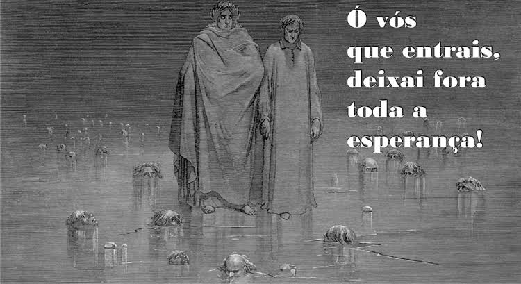
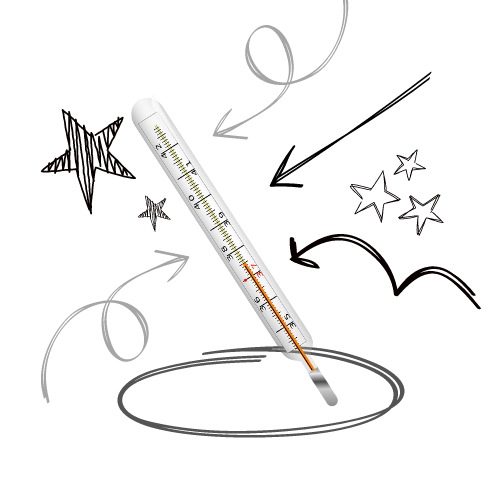
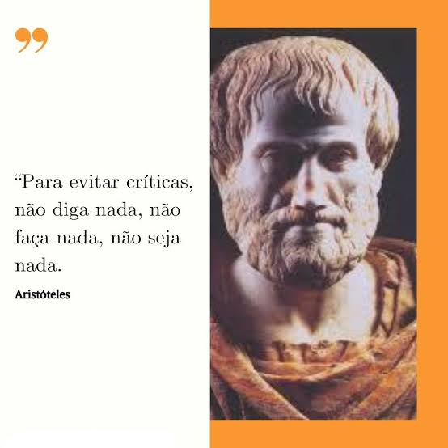
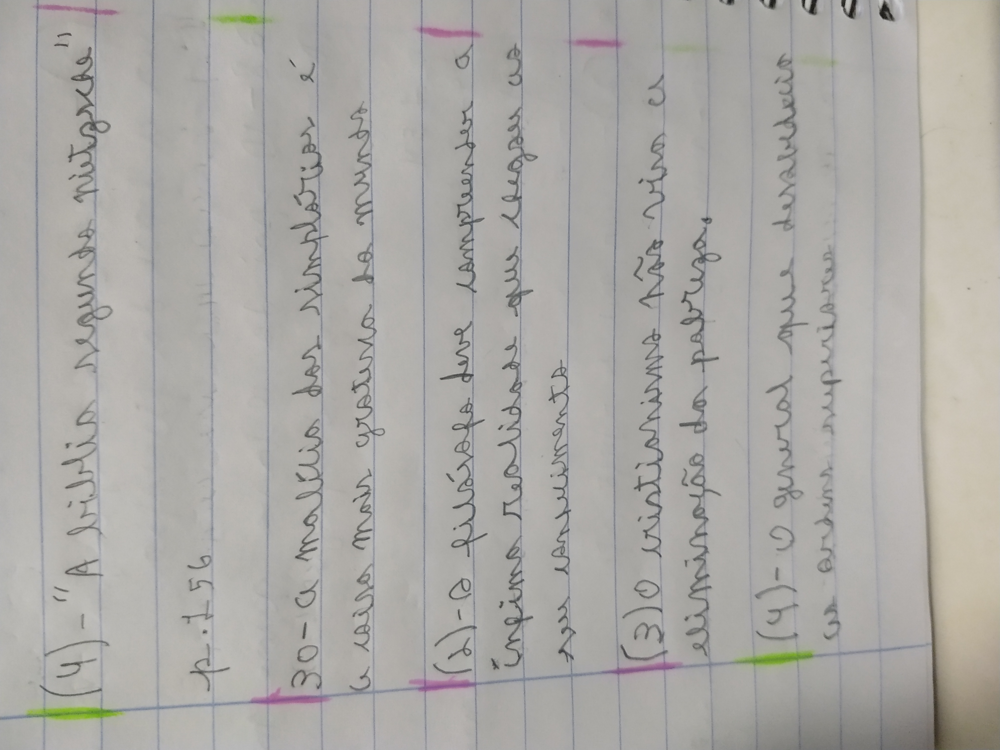

A hegemonia esquerdista na modernidade apenas retrata a hegemonia acadêmica das novas esquerdas nas escolas, presentes nas apostilas, professores, et caterva. Não se pode combater o que te ensinam desde pequeno como sendo louvável. Apenas algumas pessoas, muito corajosas é verdade, conseguem ir contra o que em tudo vê, o que tudo e todos concordam.
Eduardo Kenji 12/06/2023 11:40 PM
Não importa o que fazemos, o tempo sempre passa. Mas, pode-se decidir passá-lo fazendo algo que te torne melhor após esse passar, ou algo que te faça esquecer esse passar. Mas depois dele passar, o seu esquecimento dele não permanece, mas as virtudes conquistadas nele, se excelentes em verdade, prevalecem.
Aquele que escolhe jogar fora o tempo, sempre permanece como antes fôra. Mas aquele que escolhe gastá-lo bem, está sempre melhor que dantes
Eduardo Kenji 11/06/2023 6:25 PM
Todos os sentimentos estão contidos na mente, tanto a felicidade como a tristeza, a paixão e o ódio, e, até certo ponto, temos controle deles. Todavia, controlar os sentimentos demanda demasiada sabedoria e nunca se pode controlá-los por completo e em sua absoluta potência. Pode-se ir anulando os efeitos dos afetos na mente até que tornem-se maiores do que a razão pode conter. Ser feliz mesmo em um trânsito é fácil para quem sabe controlar seus afetos, mas é difícil fazer o mesmo em um enterro de um parente próximo.
Eduardo Kenji 10/06/2023 9:15 PM
Todo conhecimento é firmado em padrões, a cor de uma maçã é vermelha por padrão, mas pode não sê-lo, pode até mesmo não ter formato de maçã. A palavra maçã em si determina um certo padrão de objeto, onde se contém uma determinada forma, matéria e sensação. A mente assimila os padrões de fruto que a árvore de maçãs dão e determina que isso é uma maçã. Todavia, uma árvore de maçãs tem um certo padrão de fruta que ela dá, mas às vezes esse padrão é transgredido e a fruta nasce com uma forma, matéria ou sensação diferente, mas ainda assim a maçã é uma maçã. Por isso é meio difícil definir uma palavra, pois o padrão as vezes não é seguido.
Nota: de acordo com o atual sistema que nossa própria mente utiliza para classificar cada categoria, a maçã é o fruto da macieira e a maçã que não se pareça com uma maçã, mas também advém da macieira, é nomeada de maçã deformada, maçã doente, maçã corrompida, maçã estragada, etc. dependendo do grau de corrupção classificamos de um nome diferente.
Eduardo Kenji 9/06/2023 3:10 PM
O que é uma mulher?
Bom, essa pergunta pode parecer difícil para os tempos de hoje, onde as pessoa podem ser tudo ao mesmo tempo que não são nada, mas eu tenho uma solução para esse enigma progressista. "Mulher" é apenas uma palavra, a junção de letras formando esse som não tem um significado em si mesmo, como todas as palavras. O significado das palavras nos é dado pelas comunidades. A comunidade progressista diz ser a mulher um gênero, ao contrário da comunica científica que diz ser um sexo. Todavia, uma vez que "mulher" é uma espécie de homem, deve-se ter uma visão biológica do termo, uma vez que tratamos aqui de uma espécie de animal, pois o humano é um animal. E biologicamente a mulher é aquele homem com cromossomos XX, ao contrário do homem que tem os cromossomos XY. Logo, prova-se que uma mulher trans não é uma mulher na perspectiva científica, que é a perspectiva que deve-se utilizar ao tratar de animais. Isso de "gênero" é uma palavra da comunidade LGBT e não deve ser usada cientificamente, gênero não é algo que exista realmente, é só uma negação da ciência e de si mesmo. Gênero é só uma palavra que criaram como pretexto para "ser o que quiser"(como se isso fosse algo possível) e querem que todos usem para sentirem que é algo real.
Eduardo Kenji 8/06/2023 8:50 PM
São pouquíssimas as pessoas que podem realmente te afetar negativamente, então não faz sentido se importar com um Zé-ninguém que fica te julgando sem um bom motivo. Seu julgo é o máximo que consegue fazer, não passando disso, apenas palavras.
Eduardo Kenji 7/06/2023 11:10 PM
Acredito que tudo, ou quase tudo, que já passou pela consciência permanece na memória, mesmo o que nos esquecemos, mas de forma fragmentada. Penso que o cérebro perde o caminho de algumas memórias, mas elas ainda permanecem nele, só esperando um déjà vu (em sentindo de algo que já se viu) para poder retornar à disponibilidade da consciência. Penso isso pois por vezes eu vejo alguma coisa que me faz lembrar instantaneamente de um outra coisa que está relacionada a ela e que eu não me lembrava. É como se, ao procurar um certa informação, o cérebro encontra-se o caminho de uma outra já esquecida que estava guardada no mesmo lugar. Conjecturo que existem informações que realmente o cérebro esquece, mas muitas nós apenas esquecemos que lembramos.
Eduardo Kenji 6/06/2023 11:45 PM
Hoje caminhei durante quase uma hora para chegar na casa da minha mãe. Kant tinha razão, caminhar é muito esclarecedor.
Eduardo Kenji 5/06/2023 11:52 PM
Aristóteles dizia que nem o excesso nem a falta seriam benéficos, mas sim a mediania. Eu sempre procuro concordar com Aristóteles, pois penso ser ele o maior gênio já existente na história humana toda. Todavia, penso que algumas coisas podem ser mais excessivas que outras, do mesmo modo ocorrendo com a falta. Por exemplo: água pofe ser mais excessiva que drogas, oxigênio pode ser mais excessivo do que veneno. Compreendo que Aristóteles deva ter pensando que a mediania seria diferente para cada coisa, mas me fica a dúvida de como podemos objetivamente rotular a mediania de cada coisa.
Eduardo Kenji 4/06/2023 9:10 PM
A substância é a junção da forma e matéria. A forma não pode existir sem a matéria, nem a matéria sem uma forma.
Eduardo Kenji 3/06/2023 8:55 PM
Símbolos passam significados, isso todos nós sabemos. Mas o que é também óbvio, e que por vezes as pessoas não notam, é que símbolos também passam sentimentos. O sentimento que é passado por um símbolo é relativo a cada pessoa, mas a maior parte, ou mesmo todas, vão encontrar o mesmo sentimento em um determinado símbolo.
Eduardo Kenji 2/06/2023 6:35 PM
Um segredo para conquistar coisas muito difíceis é manter constância. Se você lê 5% de um livro, você leu pouco e não vai entender nada, mas se você ler 5% a cada dia, em 20 dias você acaba o livro. Se você pega um livro e lê 5 páginas conseguindo aprender 1 palavra a cada página, então você não terá um repertório terminológico muito grande, mas você irá adquirir um ótimo repertório terminológico se ler 5 páginas todos os dias durante 1 ano.
Eduardo Kenji 1/06/2023 11:10 PM
Existem vários motivos do porquê ler é a minha atividade favorita. Mas, um dos mais enfáticos é que a leitura me transformou de um completo analfabeto em um, penso, sublime escritor. Ainda no nono ano eu não sabia usar pontuação, acento, parágrafo, escrevia com letras tortas, feias e sem proporção alguma, escrevia de forma genérica e pueril. Todavia, no fim do nono ano, eu comecei a ler livros como Sherlock Holmes, Dom Quixote e os sublimes e excepcionais filósofos Sócrates, platão e Aristóteles. E já no finalzinho do ensino fundamental eu comecei a melhorar completamente a minha escrita, bem como melhorar o que eu escrevia e a forma, além também de começar a seguir as regra ortográficas da nossa querida língua portuguesa. Com o fim do ensino fundamental eu passei a ler bastante, o que, por conseguinte, me elevou bastante a escrita, o pensamento lógico, os assuntos de interesse, e todo o resto. A boa e continua leitura é a mais perfeita forma de adquirir, e mesmo criar, conhecimento. No nono ano eu só jogava vídeo game e dormia, agora já estou fazendo muito mais coisas. Após começar a ler eu sai completamente do senso comum e da cultura de massas. Isso é magnífico!
Eduardo Kenji 31/05/2023 11:30 PM
Um ser humano vivo, um morto e um com apenas metade do seu corpo, seriam todos humanos? Bom, para isso temos de compreender o que é um humano. Ora, humano é aquilo que o humano definiu ser um humano, pois "humano" é uma palavra que é usada para se dirigir a algo que existe, sendo este o que buscamos. Todavia, o que define a que objeto essa palavra irá se referir é justamente o humano. Então a melhor solução para esse problema é perguntar para a academia brasileira de letras o que essa palavra significa, ou dar um significou você mesmo para ela.
Eduardo Kenji 30/05/2023 7:00 PM
Nota técnica destinada às pessoas que são preguiçosas demais para ler um texto curto até o final: eu não sou a favor da liberação da maconha.
Com a liberação da maconha, teoricamente a venda da droga para menores de idade iria diminuir, uma vez que lojas legais teriam de vender a droga. Todavia, o consumo entre os menores de idade, claramente, iria aumentar desproporcionalmente, uma vez que os adultos maconheiros comprariam a droga por, por exemplo, 1 dinheiro e venderiam para as crianças por 5 dinheiros, conseguindo assim 4 drogas para si absolutamente de graça.
Eduardo Kenji 29/05/2023 11:15 PM
Sabe por que alguns "jovens depressivos" gostam de receber diagnóstico de depressão, ansiedade e os caralho a 4? Porque eles tratam um diagnóstico de doença mental como diagnóstico de personalidade. É como signo, eles pensam que a ansiedade define uma personalidade deles. E pensam que isso é bom pois essa "personalidade" ansiosa é, para eles, séria(pois pensam não viver no mundo de maravilhas ilusórias, e sim em um caótico mundo real) , forte(por aguentar o sofrimento), realista/redpill(pois pensa ver a realidade nua e crua da tristeza, a despeito das pessoas presas na "ilusão do mundo bonzinho")
Eduardo Kenji 28/05/2023 10:35 PM
Sobre o funcionamento do cérebro, eu acredito, e isso é apenas uma crença(embora fundada nas minhas razões), que o cérebro armazena nele fisicamente a memória, o raciocínio, e tudo o que não pertence à essência do "eu", sendo que o resto, ou seja, o "eu", existe em uma dimensão metafísica. Penso que o sono ocorre porque o cérebro não consegue gerenciar as memórias, pois estão muito fragmentadas, como em um disco rígido de computador. Quem sabe como funciona um disco rígido vai entender o que estou dizendo. Daí o cérebro precisa desligar para poder reorganizar a memória. Mas, penso que a alma, ou seja, o "eu", não desliga junto com o cérebro.
Eduardo Kenji 27/05/2023 10:45 PM
Existem pessoas que conseguem argumentar de uma forma que seja impossível ganhar a discussão. Mas, essas a que me refiro, não o fazem com argumentos apodícticos e irrefutaveis, mas sim com argumentos contraditórios ao que elas mesmas dizem, e, se você fala para elas que elas estão se autocontradizendo, então elas fingem não ouvir, mudam de assunto ou dizem que não falaram aquilo que elas mesmas falaram. É fácil vencer um debate se você só usa argumentos contraditórios e, se alguém questiona, você responde algo que foge totalmente do assunto.
Eduardo Kenji 26/05/2023 11:28 PM
O filósofo é aquele que busca o como e o porquê das coisas, por isso é uma virtude essencialmente filosófica a atenção a tudo, pois muito compreende o funcionamento de determinada coisa quem a observa, e, sobretudo, aquele que além de a observar também observa tudo à sua volta.
Eduardo Kenji 25/05/2023 8:00 PM
Estava esperando meu ônibus chegar, agora de pouco, e chegou um molequinho de uns 9 anos andando numa bike, e com todo jeito de malandro, provavelmente era um traficante prodígio, e me disse:
"ae muluke, daqui a pouco vão fazer um perdeu tudo pra você! ".
Não entendi se isso foi uma ameaça ou um aviso para mim parar de utilizar o celular enquanto espero o ônibus, ele falou em um tom meio ameaçador. De qualquer forma, vou ignorar o aviso/ameaça dele e continuar usando meu celular no ponto de ônibus; os drogados do meu bairro é tudo bundão, acho que não vai dá em nada não.
Aliás, fiquei esperando esse maldito ônibus quase 1 hora e ele não apareceu, tive que faltar do curso. O motorista deve ter faltado, ele sempre chega na hora exata(na verdade até antes da hora), mas os substitutos dele sempre atrasam ou param para comprar espetinho de frango no meio do caminho(e sim isso já aconteceu).
Eduardo Kenji 24/05/2023 6:15 PM
Repetição e maioridade, eis aí o que mais facilmente consegue manipular a mente das pessoas. Repita todo dia para alguém que ela não existe, e depois de um tempo ela realmente vai achar que não existe. Faça uma maioria gritar que o sol é azul, e a minoria que estiver por perto irá gritar o mesmo.
Eduardo Kenji 23/05/2023 6:25 PM
Em um aplicativo, o design é tão, ou mais, importante que o código. Conjecturei isso enquanto fazia um relatório sobre o site que estou ajudando a desenvolver em um curso que estou fazendo. É apenas um conjectura minha, claro, mas, realmente, ao analisar alguns aplicativos, notei que ter um bom design define muito do sucesso do seu aplicativo. O design é o primeiro atributo que o usuário vê ao entrar no seu site, e é o atributo que o usuário vai ver pelo resto do tempo que usar o app. É o atributo que retira a monotonia do seu site, além de mostra seriedade e mostrar a qual público alvo é destinado o aplicativo. Uma boa harmonia das cores dá ao usuário um certo prazer, uma sensação de ordem, como a sensação de ouvir uma orquestra. Mesmo que você ofereça um serviço mediano, se você tem um bom design no aplicativo você consegue criar um aplicativo bastante amigável ao usuário.
Eduardo Kenji 22/05/2023 11:05 PM
É algo completamente comum as pessoas fingirem não ver um problema que está na frente delas apenas para continuar se fazendo a quintessência da moralidade, o suprassumo da bondade, sem serem imbuídas da responsabilidade de condizer com seus títulos elegantes e ajudar aos necessitados que batem à porta.
Eduardo Kenji 21/05/2023 6:05 PM
todo conhecimento é um conhecimento de alguma coisa, logo, o conhecimento é relativo ao que se conhece. Por isso, não dizemos ser sábio aquele que tem conhecimento, mas aquele que tem uma boa quantidade de conhecimento e que tenha qualidade nele. Aquele que sabe muito de comida, por exemplo, é sábio em relação à culinária, mas néscio em relação a outras áreas do conhecimento. Ademais, costumamos nomear de sábio(apenas sábio e não sábio em determinada área) aquele que possui um conhecimento relativo às artes difíceis, como a arte da ciência, lógica, filosofia, et cetera.
Eduardo Kenji 20/05/2023 8:35 PM
poder é simplesmente ter potência para fazer mais coisas. Mais possibilidades. Mais potências com a possibilidade de serem transferidas ao ato. Poder não é intrinsecamente ruim, como o senso comum pensa, mas é simplesmente algo perigoso, no sentido de ser potencialmente ruim, mas também potencialmente bom.
Eduardo Kenji 19/05/2023 11:28 PM
A personalidade de um indivíduo é moldada, e nota-se o "moldada" em lugar de "criada", por aqueles que o rodeiam. Todo mundo tem sua própria forma de ser, mas essa forma de ser é transmutada, às vezes mais rápido e as vezes mais devagar, ao se passar muito tempo inserido em um determinado grupo social. Daí que vem o grupo dos rockeiros, as e-girls, dos viciados, etc. Eles são formados pois é algo natural ao indivíduo se adaptar ao seu meio e se agrupar com seus semelhantes.
Eduardo Kenji 18/05/2023 10:45 PM
Existem várias formas de dizer tchal: adeus, até mais, boa ida, nos vemos algum dia, etc. Cada forma passa um sentido diferente, a despeito de terem um mesmo significado. As palavras contém um significado tanto concreto quanto abstrato. Com isso não quero dizer que podemos expressar todo tipo de noções abstratas por meio das palavras, pois para isso precisaríamos de uma gama infinita de palavras para expressar todas as noções abstratas, e precisaríamos que essas noções fossem iguais para todos. Todavia, podemos aumentar a gama de noções abstratas que podemos expressar em palavras por meio de junções de palavras em textos, embora ainda assim não abrangeria todo tipo de noção abstrata e as que se consiga abranger não significaria o mesmo para todo mundo.
Eduardo Kenji 17/05/2023 11:10 PM
Nascemos em um corpo formado de uma determinada matéria, segundo a ciência algo em torno de 2.500 e 4.500 gramas na média, e no fim da vida morremos com um corpo formado com uma matéria completamente diferente, sendo seu peso algo a se especular já que eu não encontrei no Google o peso de um cadáver humano, sendo uma matéria provavelmente advinda de outros mortos, uma vez que nada se cria, mas tudo se transforma. Mas sua consciência de que existe continua, você sabe que ontem você era você e hoje continua sendo você, o que demonstra que a consciência transcende o material. Resumi aqui a teoria de "consciência de imortalidade", de Olavo de Carvalho, é uma sublime e admirável teoria. Aos interessados, o professor Olavo de Carvalho tem alguns vídeos no YouTube sobre essa teoria.
Eduardo Kenji 16/05/2023 11:40 PM
Anteontem teve aquele frio de 13 graus, mas mesmo assim fui para a escola, com muita má vontade, mas fui. E imagina a minha felicidade quando eu passo pelo portão e entro na sala e me falam "hoje num veio professor, mas vai ter 5 aulas vagas e ninguém pode sair sem a assinatura do responsável". Daí no dia seguinte fez 10 graus e eu levei meu fone de ouvido para ouvir o TrueOutspeak na escola e de quebra marcar presença sem fazer nada, e nesse dia, que estava 3 graus a menos, TODOS os professores vieram. Eu ia pegando meu fone quando um professor saia e já guardava de novo quando outro professor entrava. Por que quando eu quero os professores não faltam, mesmo com todo motivo para faltar? Já era para eu ter ouvido uns 5 episódios do TrueOutspeak.
Eduardo Kenji 15/05/2023 6:20 PM
Qualquer coisa que fazemos está correta, mas apenas dependendo do contexto. Um ladrão que rouba os próprios pertences é inocente, assim como o assassino de tubarões. O problema é que esse contexto de que falo é basicamente a lente da qual usamos para ver o mundo, por isso, quando erramos, erramos por pensar estar lidando com uma realidade que em verdade é falsa. Trocamos a realidade por um arremedo de ficção reconfortante. Tratar a realidade com uma lente ficcional não é uma boa ideia. É como os ditados populares já dizem a tempos: não devemos dar ração de tartaruga a tubarão.
Eduardo Kenji 14/05/2023 6:35 PM
Por vezes, quando as pessoas querem te convencer a fazer alguma coisa para elas, e, tentando por todos os meios, não conseguem, elas acabam se utilizando de um artifício de argumentação que tem por objetivo te obrigar a fazer determinada coisa por meio do peso na consciência. Esse é um dos mais eficazes, e mais infelizes, meios de convencer uma pessoa a fazer determinada coisa. Em certas consciências, como quando realmente se está fazendo algo que gere peso na consciência, esse artifício funciona melhor, mas quem tem miraculosidade o suficiente pode usar isso em muitíssimas circunstâncias não tão pesadas. Existem várias maneiras de fazer isso, mas as mais comuns é por meio do argumento "você vai se arrepender se não fizer isso" ou "faça isso para mim, eu trabalhei o dia todo e não quero me preocupar com a sua inutilidade em não fazer nem o básico!" ou mesmo apenas o clássico fingimento de tristeza.
Eduardo Kenji 13/05/2023 5:25 PM
Ninguém no mundo pode dizer que realmente merece coisa alguma, ninguém merece o ar que respira. Você é um insignificante amontoado de carne ambulante e o mundo não mudaria em nada se você nem existisse, e mesmo assim por vezes as pessoas reclamam de estar vivas ou outras baixarias. Reclamar é humano, mas deve-se ter ciência, quando a raiva passa e você já voltou à lucidez, que você tem extraordinariamente mais do que merecia. Ter ciência disso é fundamental para aprender a parar de reclamar, pois não se reclama de ter perdido algo que não deveria ser seu.
Em tudo dai graças 1 Tessalonicenses 5:18
A Bíblia é muitíssimo sensata e filosófica ao falar disso.
Nota – claro que estamos falando aqui em uma perspectiva universal, levando em conta o universo todo, então não seja aquele idiota que chega em um hospital de velhinhos e, se dirigindo para um senhor que se curou do câncer, fala "Ah, pare de comemorar, você nem mereci ter vencido o câncer, o câncer devia ter te matado e você deveria estar a 10 palmos abaixo do chão agora, velho arrogante e insensato!". Eu só estou insentivando a parar de dizer "eu mereço" e começar a dizer "eu sou grato".
Eduardo Kenji 12/05/2023 7:20 PM
O meio que você vai escolher para argumentar e a forma usada para fazê-lo é tão importante quanto o argumento em si para convencer aquele que escuta a aderir a determinada ideia. Claro que o objetivo central da argumentação não é convencer alguém a algo, mas sim encontrar a verdade por meio do debate dialético, todavia, assim como tudo o que há debaixo dos céus pode ser corrompido, a boa dialética pode ser corrompida ao seu contrário, a dialética erística, tendo com este o objetivo único de convencer, não importando a verdade. Não digo também que a dialética erística em si é maléfica, mas sim que seus usos podem e por vezes são maléficos. Deve-se também mencionar que o problema do convencimento apenas por convencimento não é apenas a dialética erística, há também o efeito manada, o marxismo cultural, etc. só estou usando a dialética erística de exemplo.
Eduardo Kenji 11/05/2023 6:20 PM
Há muitos autores, via de regra materialistas, que afirmam ser sábio aquele que busca uma vida privada de moral ou baseada em uma moral desvirtuada. Penso que esse pensamento de subjugar a moral só tem usos práticos benéficos quando se tem em mente que, diferentemente do que esse autores pensam, a moral não deve ser tida como obsoleta, e com ela os conceitos de verdade e mentira e bem e mal, mas sim que a "moral" que costumo chamar de "consciência pesada destoante" deve sair de cena para dar lugar à moral ligada aos supremos princípios de verdade e falsidade e bem e mal. Isso quer dizer que nossa moral não deve ser baseada no peso da nossa consciência, como via de regra serve de base para moral, mas sim nas verdades eternas e imutáveis e no bem como princípio absoluto e objetivo. Claro que nós, na nossa mera insignificância, não podemos inteligir o que seria o bem absoluto e o mal absoluto, mas a vitória humana não está em encontrar a perfeição, mas em buscá-la com tal afinco que a cada dia se esteja mais perto dela.
Eduardo Kenji 10/05/2023 4:55 PM
Toda escolha na realidade física deve ser concebido com ciência do tempo e do seu passar. Quando fores realizar qualquer escolha, lembra-te que a escolha servirá para o presente e para o resto da eternidade. Se compro um carro, devo pensar se conseguirei mantê-lo com meu salário, não devo pensar apenas no agora. De nada vale trabalhares 60 anos da vida para enriquecer, se amanhã morrerás e não poderás aproveitar o dinheiro.
Se eu fiz mal a alguém hoje, eu nunca mais não vou ter feito esse mal, mesmo que o mundo acabe ainda assim eu fiz aquele ato e nunca mais poderei dizer que não fiz. Nada do que vem a ser volta ao não ser.
Eduardo Kenji 9/05/2023 11:25 PM
Rafael Sanzio é tão genial que ele literalmente se colocou dentro da propria pintura da Escola de Atenas e eu só fui perceber isso hoje. GÊNIO!
Eduardo Kenji 8/05/2023 6:15 PM
Afetar superioridade é um meio da mente conturbada de se colocar acima daquilo que para ela é um potencial problema. Por vezes as pessoas com esse problema realmente fazem de tudo para serem consideras superiores, para assim poder utilizar com mais eficiência desse truque da mente.
Eduardo Kenji 7/05/2023 8:50 AM
É muito comum as pessoas, em privado geralmente, se lamentarem ao ver nas redes sociais, ou mesmo ao conversas com outros, que sua vida é um fracasso por não ser como a da pessoa A ou B. Bom, isso é, via de regra, uma grande ilusão. Eis os motivos:
1–A pessoa A ou B vai sempre postar ou falar para você o que ela faz de bom, as alegrias dela, nunca, ou raramente, das tristezas. Sempre falará da festa de aniversário cara dela, mas nunca do quanto ela trabalhou como uma escrava para pagá-la; falará do seu lindo namorado, mas não dirá que ele é abusivo e egoísta fora das câmeras; enfim, falará da ora de fumar a maconha mas não da ora que foi parar no hospital por fazê-lo.
2–Mesmo uma pessoa que realmente esteja em uma situação melhor que você não é tão feliz quanto você pensa, pois existe algo chamado adaptabilidade humana, que é uma característica do ser humano que o faz se adaptar a enfaticamente tudo, inclusive à felicidade e à boa condição de vida. Um bom exemplo disso é que você pode estar se sentindo sem dinheiro e um fracasso financeiro, mas um mendigo se acharia a pessoa mais rica do mundo em ter o seu dinheiro. Do mesmo modo, o rico tem sempre o celular mais novo, ele já não se alegra mais tanto quanto se alegraria o pobre que obtivesse o mesmo celular, ele já se acostumou a ter sempre o celular mais novo. Por isso dizemos que ninguém consegue estar sempre feliz, é literalmente impossível.
3–A verdadeira felicidade não pode se mostrar, pois não é física, é metafísica. A maioria das pessoas que aparentam serem felizes por fora em verdade estão sucumbindo por dentro. Digo "a maioria" pois ninguém é feliz o tempo todo, aparentar estar feliz o tempo todo demanda um grande esforço para desfaçar sua tristeza, e se a pessoa está tão preocupada em disfarçar a próprio tristeza ela deve realmente estar muito triste.
Eduardo Kenji 6/05/2023 10:00 AM
A palavra, bem formada, pode representar a nós o que jamais se entenderia por outros meios. Pois ela consegue expressar o que não é físico, como conceitos, ideias. A palavra é o nosso meio de ter um deslumbre do metafísico. Eu posso ter uma ideia na minha mente de como seria o ser(aquilo que é), que advém de palavras de livros que li e de palavras que me falaram sobre ele, ou mesmo de palavras que eu formulei na minha imaginação sobre ele, mas eu não posso desenha-lo, senti-lo, etc. Do mesmo modo, eu não posso desenhar a inteligência, vê-la ou senti-la, mas posso ter uma ideia do que seja a inteligência na minha mente, e posso expressar essa ideia por meio de palavras.
Eduardo Kenji 5/05/2023 11:55 PM
Nota prévia – o presente texto se baseia em uns dois outros textos do meu site que tratam exatamente do mesmo assunto, a saber, da minha teoria dos bens. Embora eu já tenha explicado bem nos outros textos, este eu escrevi para ser a versão definitiva, contendo uma série de acrescentações, correções e novas ideias.
Link dos textos antigos a que me refiro: link1 Link2
Definições –
Compreendo "fazer um bem" como "fazer um benefício", e vice-versa.
Existem duas categorias de bem que podem ser feitos, a saber, presente e futuro. Sendo que cada qual tem suas subcategorias, a saber, para mim, para pessoa(s) exterior a mim ou para nós. E no fim participa de uma de duas classes, a saber, bem sucedida ou mal sucedida. Todo bem é mal sucedido por um ou dois erros de um conjunto de duas categorias, a saber, erro por desconhecimento e/ou azar. Dizemos que as pessoas fazem algo mal quando fazem um bem por meio do egoísmo ou autoengano. O egoísmo surge quando uma pessoa ou grupo prejudica a outros para benefício próprio, grosso modo, fazem mal a outras pessoas para adquirir um bem para si. O autoengano resume os erros que mesmo a pessoa sabendo que haveria um mal depois ela comete, ela se autoengana ao pensar ser esse tratamento algo bom, é como ingerir drogas, é bom na hora mas depois só acaba com você.
Penso que talvez Freud estivesse errado, não existe uma pulsação de morte e uma de vida, uma de bem e uma de mal, o humano sempre busca o bem. Mesmo o suicídio é um meio de tentar se adquirir um bem, pois quando a pessoa está sofrendo muito, ela pensa que qualquer coisa que alivie isso será um bem, nesse caso, a morte. Se ela é ou não um bem é outra história, mas a pessoa pensa ser ela um bem.
O homem nasce bom, mas suas limitações o corrompem.
Nota – decerto há quem dirá ser essa lógica errada, pois ela mesma acabou de fazer um mal para outra pessoa sem motivo apenas para provar que a lógica está errada, mas mesmo nessa situação a pessoa estaria buscando um bem, a saber, o bem de se mostrar mais inteligente que eu ao invalidar a minha tese.
Eduardo Kenji 4/05/2023 6:35 PM
O medo de determinada coisa dar errado é ele mesmo, por vezes, sumo motivo de seu erro. Mesmo aquele que tem ciência de ser seu medo a causa eficiente de seu erro, não consegue parar esse medo. Isso acontece por um simples motivo, o medo é um afeto(emoção) e nós não podemos controlar o que nos afeta. É como querer estar feliz mesmo vendo sua ruína.
Eduardo Kenji 3/05/2023 6:20 PM
Nota prévia - o texto aqui anexado foi baseado em algumas anotações antigas minhas, do início de 2022, e, embora tenha sido apenas baseado, pode preservar sua terminologia e ideia "ultrapassada" em comparação aos mais novos, pois não tive tempo de levar o assunto a fundo, mas ficou interessante.
Existem várias formas de passar uma mensagem de forma "subliminar", uma delas é falando uma mensagem para a pessoa da qual se quer dizer determinada coisa mas como se estivesse falando de uma terceira pessoa, que não existe, a pessoa irá compreender a sua mensagem, mas pensará que você não estava querendo falar isso a ele.
Exemplo:
no caso de se querer passar a mensagem de "me dê um presente no meu aniversário" para um amigo, você pode dizer no meio de uma conversa formal com ele "Esses dias teve um amigo próximo que disse que não iria me dar um presente no meu aniversário, você acredita? Ele nem era tão próximo como você, mas ele deveria dar. Fiquei desapontado com isso. Eu retirei ele do meu círculo social." assim você conseguirá passar sua mensagem nas entrelinhas.
Nota – existen outros modos de passar algo de forma "subliminar" como a manipulação da cultura, efeito rebanho, etc. mas nesse texto me dediquei a apenas um, talvez eu mencione os outros em artigos posteriores.
Eduardo Kenji 2/05/2023
12:20 PM
Argumentos são sempre tentativas de criar relações. Por exemplo, no argumento: "não devemos investir no porte de armas, pois elas são assassinas". Nesse argumento existe uma tentativa de fazer uma relação entre armas e assassinatos, e, uma vez que assassinatos não merecem investimentos, armas também não mereceriam. Algo típico de argumentos falsos é afirmar antecipadamente uma relação como verídica. No exemplo acima, armas realmente não mereceriam investimento, já que matam, mas, no exemplo acima foi antecipadamente confirmado que armas causam assassinato, sem provas, motivos, etc. Além de que falam de forma genérica ao falar que matam, matam quem, um bandido, um policial, um civil? O exemplo fala apenas que "armas matam", quando deveriam falar "armas matam tal pessoa... porque... quando... pelo motivo de... ". Do mesmo modo aquele que fala que "a educação salva" está correto em relacionar educação com salvação apenas em algumas situações. Isso se confirma pela sequência lógica abaixo:
Educação salva;
A escola fornece educação;
Logo, a escola é benéfica.
Isso está errado, pois educação é conhecimento e nem todo conhecimento é bom. Além disso, nem sempre a escola consegue fazer o seu papel de passar conhecimento, às vezes a escola tem uma estrutura ruim e não consegue fazer seu papel de ensinar.
Eduardo Kenji 1/05/2023
9:20 PM
As pessoas deveriam fundar seu "motivo da vida" em conceitos, mais especificamente em conceitos eternos e bons, nunca em objetos. O motivo da vida não pode ser a felicidade, pois ela é facilmente mutável, uma ora estamos felizes, outra tristes, não importa o que você faça. Quem faz da felicidade o sentido de sua vida estará sempre mais perto e mais longe dele. Por isso é sábio aquele que tem por motivo da vida a verdade, a sabedoria, a justiça, etc. A verdade é imutável, e, embora você pode acabar procurando em um lugar errado, quando você descobrir isso você não estará perdendo a verdade, mas sim estará mais perto dela.
Eduardo Kenji 30/04/2023
6:30 PM
Pintaram vários desenhos políticos na frente da minha escola, chamando de ignorante e negacionista quem não tomou a vacina, pintando a ivermectina e a cloroquina como vilãs montadas em burros, etc. Dizem que escola é lugar de inclusão, queria saber que tipo de inclusão é essa. Depois o pai não sabe porque o filho voltou da escola um lulista convicto, que odeia com veemência o Bolsonaro sem nenhum motivo aparente. Vai me dizer que se pintarem um cara aleatória na frente da sua escola como o maior vilão, idiota e desgraçado do mundo você não iria passar na hora a ter odio dele sem nem saber o porquê. pintam a vacina como um deus salvador e bondoso e os médicos como anjos salvando as pessoas. A vacina é somente um remédio, que é, inclusive, o minimo que o estado deveria nos oferecer. Eu sempre digo, se você quer manipular uma população é só você humilhar o lado que você não gosta por meio de simbolismos nas escolas, como o dragão que fizeram representando a "ignorância", e sabemos muito bem o que simboliza a ignorância. Não que eu seja "a favor da cloroquina", mas eu penso que a cloroquina é um remédio e merece ser estudado por especialistas. Eu sou a favor que cada um tenha o direito de tomar ou não tomar um medicamento se acha que ele funciona, contanto que não seja necessário uma prescrição médica. É necessário estudar fazer pesquisas com esses medicamento, não ficar tratando como um veneno. Eles dizem que são "a favor da ciência", mas são contra fazer pesquisas científicas para atestar a eficiência de um remédio. Tratar um medicamento como um monstro é um absurdo. Ademais, pintaram também um Paulo Freire sorridente e bondoso. Só faltou mesmo estampar a cara do Bolsonaro nos desenhos de humilhação.Deixando claro que o pintor foi o professor de artes da escola, com a permissão dela.
Eduardo Kenji 29/04/2023
6:15 PM
Existe um certo tipo de pessoa que faz um bem, mas apenas para bem próprio. Elas fazem o bem apenas para se vangloriar. O bem é apenas um acidente no ato dessas pessoas. Não é o seu fim ser bom, mas seus meios podem o ser. Fazer um bem, ou mesmo vários, não é o mesmo que ser bom.
Eduardo Kenji 28/04/2023
11:10 PM
Uma plena simbologia ou analogia consegue ensinar mais do que uma complexa tese científica. Os contos consistem disso, eles passam uma mensagem moral por meio de analogias e simbolismos. Afinal, quem nunca deixou de mentir para o seu nariz não crescer como o do Pinóquio? Ou pagou o salário do dedetizador de ratos para não surgir um flautista de Hamelin para hipnotizar e roubar suas crianças para sempre? Certo, talvez o último não seja o melhor exemplo disso, mas deu para entender.
Eduardo Kenji 27/04/2023
12:15 PM
Não há como mudar o que está escrito na Bíblia, por isso que os cristão(os que seguem a Bíblia, pelo menos) ainda não foram contaminados por essas modas da modernidade, porque o texto bíblico foi escrito a milhares de anos atrás e ninguém pode mudá-lo. Logo, o modus operandi de todo bom cristão jamais mudará, porque a Bíblia, diferentemente das leis, gostos políticos, etc, não muda. É por isso que raramente se vê um comunista, por exemplo, na igreja, pois na Bíblia o roubo da propriedade privada é errado, e isso é uma lei imutável para qualquer cristão de qualquer época. É claro que os malandrins podem tentar deturpar a palavra, dando-a um significado diferente do seu real, mas é visível quando alguém fica fazendo malabarismos com os escritos e os escritos são enfáticos em certas partes, de modo a ser dificílima sua deturpação.
Eduardo Kenji 26/04/2023
11:05 PM
É comum se dizer que religião é unicamente um ato de fé porque não é possível ver Deus para constatar que Ele existe, mas, se nos aprofundarmos na questão, podemos dizer que religião pode ter um outro tipo de ato de fé, um tipo de fé não tanto de espera mas de constatação concreta. Esse ato de fé mais de constatação de que falo é a lógica. Ora, se pego uma caixa e nela está escrito "biscoitos do bom", tem uma foto gigante de biscoitos colada em sua parte superior, tem peso de biscoitos, quando mexo a caixa faz barulhos de biscoitos, então seria lógico dizer que dentro da caixa tem um casal de gatinhos? Analogamente, se o universo tem de ter sido feito por alguma coisa, logicamente, e essa coisa não foi criada por nada, por ser primeira, então não seria lógico dizer também que esse algo tão magnífico que consegue se auto-criar seria Deus?
Eduardo Kenji 25/04/2023 6:30 PM
Filosofia não é tão difícil quanto dizem e fazem parecer. É o clássico monstro de 4 cabeças que na verdade tem apenas 1/4. Penso que muitas pessoas tem essa visão deficiente do tema graças à escola, que coloca filosofia como uma matéria mais de história da filosofia do que de filosofia em si. Além de que da forma que a filosofia se apresenta na escola é muitíssimo complicada, fazendo assim os alunos pensarem ser a filosofia em si complicada. Acho que o segredo para compreendê-la está em ler os livros dos grandes filósofos com constância e em uma boa ordem. Eu, pelo menos, fiquei praticamente um ano lendo duas horas por dia filosofia para começar a compreender algo de metafísica, o que demonstra a importância da constância e perseverança.
Quanto à ordem, eu sempre recomendo Sócrates para quem está começando pois ele é o mais fácil na filosofia e, não obstante, um dos quais mais transmite conhecimento aos seus leitores, no caso, aos leitores das obras de platão, pois foi platão que escreveu os diálogos socráticos. Penso ser Aristóteles o mais sublime dos filósofos, mas a leitura de seus tratados é bem difícil. Já Olavo de Carvalho eu penso ser um dos melhores e ele tem uma leitura medianamente difícil, com um pouco de persistência, acho que qualquer pessoa consegue entender pelo menos um pouco do que ele escreve.
Eduardo Kenji 24/04/2023
11:45 PM
Eu reconheço que a modernidade trouxe importantes avanços científicos para a humanidade, mas, filosoficamente, trouxe pouco ou mesmo fez um desserviço a ela, graças ao niilismo, materialismo, marxismo, et caterva. Meus exemplos de filósofos ideais continuam sendo de 2 mil anos atrás, kk.
Eduardo Kenji 23/04/2023
10:45 PM
Diogenes de Sinope pode parecer maluco, e talvez realmente seja, mas, se pensarmos bem, tanto ele, que morava em um barril e vivia em uma sinica miséria, morreu quanto aqueles que o julgavam por fazê-lo, aqueles que o chamavam de louco. Aqueles que o tinham por louco devem ter tido muitos prazeres durante a vida, muitos "amores", muito álcool, muita "felicidade", enquanto ele vivia em sua miséria, mas, de que adianta toda essa "felicidade" se hoje eles já não podem usufruir dela, se ela já passou e eles não a levaram consigo. Qual o mais louco, aquele que vivia nos prazeres, sem nunca sair da ignorância, e hoje já está completamente dissolvido pela terra, ou aquele que em vida buscou a verdade, que buscou compreender o mundo que o rodeava e que deixou para as próximas gerações seu conhecimento e sabedoria? Os dois já morreram, mas, penso que, se há um outro mundo, levaremos conosco nossa mente, nossa honra, nossos feitos, e não levaremos nossos prazeres, pois lá eles serão desprezíveis de tão insignificantes
"memento mori" (lembre-se da morte)
Penso que o conhecimento é o que temos de mais durável, se o destino de todos é um mesmo, devemos procurar o que é durável o suficiente para suportar esse destino. Somente isso em verdade importa. As tristezas e felicidades que aqui se encerram não são duráveis, são efêmeras, evanescentes. Isso realmente não é o mais importante.
Existem problemas para agora, para amanhã e para a eternidade. Somente o último é realmente importante, embora nós devemos tentar resolver a todos, contanto que não afete o último. É claro que é da natureza iracional humana colocar os dois primeiros à frente do último, mas nós devemos tentar todo dia nos esforçar para superar mesmo nossa natureza.
Eduardo Kenji 22/04/2023
5:00 PM
Penso que um bom professor deve ter carisma, um falar compreensível e ter justiça. O carisma é desenvolvido pelo senso cômico, pela amabilidade ou camaradagem, no sentido de ser uma pessoa gente boa, e pelo agir de modo a seguir os alunos quando possível for, para assim demonstrar que gosta do mesmo que eles e que entende eles. O falar do professor deve ser compreensível pelos alunos e, quando não for, o professor deve explicar em palavras claras o significado de suas palavras. O professor deve ser justo ao passar a lição e ao castigar o aluno, para que o aluno não crie ódio pelo professor.
Eduardo Kenji 21/04/2023
10:05 PM
Demorei 1 ano, mas eis que hoje termino de ler todas as mais de 1200 páginas de Dom Quixote de la Mancha, sublime e amável história escrita por Miguel de Cervantes sobre o fidalgo Alonso Quijano, também conhecido pelo seu formoso nome de cavaleiro andante, Dom Quixote de la Mancha, e seu fiel e sensato escudeiro, Sancho pança . O final é espetacular. O livro todo tem um tom bem filosófico e ético, sempre com Dom Quixote ensinando a Sancho sobre as boas virtudes e os bons costumes e usanças para o homem justo e honrado, além de ele também aprender muito com Sancho e com todas as aventuras que sucedem aos dois, bem como para os outros personagens. Encerra-se a história com a trágica e filosófica derrota e morte de Dom Quixote, sendo que em seus últimos dias havia tido ele sua sanidade renovada e a mente completamente recuperada de sua loucura cavaleiresca. É uma história com tantos ensinamento sobre a vida, a moral, as boas e verdadeiras amizades, e outros ensinamentos de igual importância, que maravilha o quão intelectual e sábio era seu autor. Aquela parte, que ocorre logo quando Sancho irá se tornar governador de sua ilha, em que Dom Quixote diz a Sancho alguns conselhos para ele seguir para ser um bom homem e um bom governador é fantástica, é minha parte favorita, tem muitos conselhos bons e sensatos.
Eduardo Kenji 21/04/2023
2:30 PM
O estado apenas tem força por causa da polícia e do exército. As leis por si só não forçam ninguém a fazer ou deixar de fazer nada. É o poder bélico e ameaçador que traz o respeito às leis, per fas et per nefas. Só não existem pessoas tentando criar um governo alternativo dentro do Brasil porque a polícia iria os multar e, caso não pagassem a multa, os prender. Por isso quem tem a intenção de derrubar um governo deve primeiro dar um jeito na mão armada do estado, e, claro, há vários meios para isso, tanto bélicos quanto sociais, uma vez que mesmo policiais, alguns, não todos, tem seu valor e podem ser corrompidos por uma quantia adequada. Somente desestruturando o alto escalão da ordem armada, toda a teia armada se corrompe, pois os subordinados apenas recebem ordens e executam. Também dá para fazê-lo por meio da política, mas assim é um pouco mais complexo. Grosso modo, para fazê-lo por meio da política é necessário um ótimo retórico/orador, corruptos dentro de um sistema, controle dos meios intelectuais e acadêmicos e/ou controle dos meios de comunicação de massa. Em síntese, controle da cultura e/ou do aparato estatal. Antônio Gramsci e seu marxismo cultural explicam melhor que eu essa parte.
Eduardo Kenji 20/04/2023
2:40 PM
Maior é a alegria daquele que começa de baixo e acende às alturas do que a daquele que começa de cima e encima permanece. Por isso começar debaixo não é sempre a pior coisa. Aquele que debaixo começa e sobe ao cume demonstra, além de ter se superado, ter superado todas as circunstâncias à sua volta e todos a sua volta. Em suma, superou tudo e todos. O mesmo digo para aquela que ascende à vitória sozinho, sem ajuda alguma, o fazendo mesmo quando todos os subestimam. Ora, essa vitória é grande.
"Post tenebras spero lucem"
Eduardo Kenji 19/04/2023
6:35 PM
Nos utilizamos de expressões objetivas para nos referir a conceitos, sentimentos, e mesmo ideias de natureza subjetivas, ou seja, utilizamos de palavras para representar ideias. É óbvio que isso não permite-nos uma perfeita interpretação do que o interlocutor diz, pois na conversão do subjetivo para objetivo muito se perde em sentido. Um exemplo claro disso é a dor, você não pode dizer exatamente como é sua dor em palavras, quiçá nem definir a grandeza dela. Não estou dizendo que a linguagem é falha, ela é perfeita no que se dispõem a fazer, mas ela não é completamente perfeita a ponto de fazer o impossível, no caso, converter pensamentos subjetivos em palavras objetivas.
É basicamente isso que eu queria dizer, e acabei dizendo de modo meio supérfluo e inacabado, pelo menos no primeiro por ter o feito no início do site, nesses dois textos: Texto 1 Texto 2
Eduardo Kenji 18/04/2023
11:40 PM
Hoje na aula uma professora disse, grosso modo, que o sistema fornece uma educação enfaticamente deficiente para a população pobre, a maior parte da população, de propósito para ter mais mão de obra barata em subempregos. Concordo com ela, mas não acho que isso seja, como ela disse, culpa do capitalismo, mas sim do metacapitalismo. Em um sistema capitalista saudável, um empresário veria que o material escolar é ruim e criaria um novo, mais apropriado, para lucrar com isso, vendendo a um preço acessível para que haja quem compre. Já em um sistema metacapitalista, o estado iria se intrometer na livre-concorrência, gerando um monopólio de apenas uma empresa de materiais escolares, todos ruins, obviamente, por não haver concorrência. Ademais, penso que ela estava completamente correta em afirmar que o sistema é o culpado por grande parte do problema da educação no nosso país, mas acho que ela errou ao pensar que "o sistema" é o capitalismo e não o estado corrupto financiando a monopolização do mercado.
Eduardo Kenji 17/04/2023
11:15 PM
Tentar fazer contas com um número infinito é como tirar fotos de um círculo quadrado. Tentar subtrai um de infinito é como somar branco com a raiz quadrada de felicidade.
Eduardo Kenji 16/04/2023
9:45 PM
Muitas vezes a melhor forma de ganhar um discussão é simplesmente dar a definição das palavras utilizadas para definir o problema, pois por vezes as pessoas erram um argumento por não saber o significado exato de uma determinada palavra.
Por exemplo, uma pessoa completamente privada de qualquer tipo de emoção ou sentimento teria uma plena liberdade? Ora, depende do que se entende por liberdade. Nesse caso, a definição da palavra "liberdade" é crucial para definir se a pessoa supracitada teria ou não uma plena liberdade.
Eduardo Kenji 15/04/2023
5:15 PM
É natural no ser humano duvidar de sua própria sanidade às vezes, e isso piora quando o indivíduo não tem a quem perguntar se ele mesmo é são, e também quando as pessoas que o cercam não sabem o que é uma pessoa sã, se é que existe alguma pessoa que em verdade seja "sã".
Eduardo Kenji 14/04/2023
6:28 PM
Por vezes um escritor, ao redigir um texto, escreve palavras, frases e mesmo textos inteiros que são ditos com um sentido completamente diferente de seu significado original, sendo seu novo sentido baseado em um conceito específico do autor, baseado nas suas experiências de vida e suas interpretações pessoais do mundo que o rodeia, sendo por isso de difícil compreensão sem uma consulta prévia ao autor quanto ao seu significado. Para dar um exemplo disso, anexo este pequeno texto que fiz alguns dias atrás e embaixo dele eu darei o contexto específico de cada parte, para assim demonstrar de forma prática o que afirmo:
Neste cair de noite, somente a Lua me olha , e de certo o faz com severo e pleno desprezo. O caminho é escuro, e há sombras a minha volta, talvez me perseguindo, mas a luz da Lua há de os espantar. Não vejo saida, tudo jaz nas trevas, mas que diferença faz desistir ou persistir? se persisto, pelo menos tenho alguma chance de acender à vitória e iluminar as trevas. Somente a verdade revela aquilo que está obscuro, mas a verdade me foge, e o obscuro já me consome. A corrupção do mundo encobre sua verdadeira face. Os dias vão como aqueles insuportáveis tic-tacs, e os tic-tacs se vão como se cada ontem tivesse dois amanhãs de duração. A poeira vil e ignóbil ganha forma ao resplandecer a agradável luz dos lampiões
Neste cair de noite, somente a Lua me olha – eu estava voltando da Fiec(curso) e já brilhava a lua no escuro céu.
O caminho é escuro, e há sombras a minha volta, talvez me perseguindo – novamente, estava de noite. As sombras são pessoas que volta e meia passavam pela rua, já em uma hora de pouca circulação
Não vejo saida, tudo jaz nas trevas, mas que diferença faz desistir ou persistir? – Digo não ver saída para me referir às incertezas do futuro. Já na parte de persistir ou desistir dou uma síntese de uma ideia filosófica, não sei ao certo o autor, que afirma: se tentarmos, podemos falhar ou vencer, e, se não tentarmos, falharemos e não haverá chance alguma de ganhar. Logo, é melhor ao menos tentar antes de desistir, mesmo quando tudo a sua volta lhe mostra não haver esperança alguma, afinal, não custa nada.
Somente a verdade revela aquilo que está obscuro, mas a verdade me foge, e o obscuro já me consome. – se tivéssemos o conhecimento de um problema, então ele não nos seria um problema, porquanto nós o conhecemos e, logo, podemos solucioná-lo.
A corrupção do mundo encobre sua verdadeira face. – não vemos o mundo como ele realmente é, nas sim como nós o percebemos.
Os dias vão como aqueles insuportáveis tic-tacs, e os tic-tacs se vão como se cada ontem tivesse dois amanhãs de duração. – eu tenho na minha mochila um compasso guardado dentro de uma caixinha de plástico, mas esse compasso fica solto na caixinha, então a cada passo que eu dou o compasso bate na caixinha e produz um tic-tac parecido com o de um relógio. O tic-tac insuportável seria a pressão que o rápido passar de tempo nos dá, e o ontem que dura dois amanhãs é para afirmar justamente que os dias estão passando tão rápido que o dia de amanhã parecerá ter apenas metade do tempo do dia de ontem.
A poeira vil e ignóbil ganha forma ao resplandecer a agradável luz dos lampiões – os lampiões são os postes de iluminação e a poeira é literalmente uma poeirinha, invisível de tão pequena, mas visível sob a luz dos postes
A interpretação que primeiro se tem desse texto geralmente é muito diferente de seu real significado. Desse mesmo modo, uma frase simples como "a morte finda a vida terrena" pode ser muito profunda e triste para um depressivo, por exemplo, mas sem animadora para um cristão. No fim a frase terá um significado totalmente diferente dependo de quem a lê.
O leitor que determina o sentido leitura. O escritor apenas dá os termos objetivos do escrito, mas quem os lê deve determinar seus sentidos subjetivos.
Nota:eu fiz o texto da lua em 3 dias diferentes, por isso talvez algumas partes não se liguem tão bem umas com as outras. Cada vez que eu voltava para casa nesses 3 dias eu pensava em algo a mais para no texto pôr.
Eduardo Kenji 13/04/2023
11:50 PM
nos agarramos à nossa última esperança, mesmo quando ela aparenta já ter morrido há décadas
Eduardo Kenji 12/04/2023
6:25 PM
Gosto bastante desse provérbio latino, atribuída a Parménides sua autoria:
"ex nihilo nihil fit"
ele foi concebido com a ideia de passar, basicamente, a ideia de que, no completo nada, nada se cria, mas, já que no mundo algo se criou, visto que há de ter existido um primeiro algo para poder criar todo o resto, o não-ser(ou seja, o completo nada) não existe e nunca existiu. Já que o não-ser nunca existiu, então, pela via lógica, o ser(ou seja, aquilo que é) sempre existiu.
Eduardo Kenji 11/04/2023
11:05 PM
A verdade como princípio último da realidade/existência necessariamente existe, umas vez que a própia afirmação de que "não há verdades absolutas" seria, por si mesma, falsa se ela fosse verdadeira. Ora, como que algo pode se dizer falso e verdadeiro ao mesmo tempo? E, ademais, como pode haver algo verdadeiro que seja falso, sendo que nem a falsidade nem a veracidade deveriam existir?
Eduardo Kenji 10/04/2023
11:25 AM
ser irascível e estar irritado são qualidades diferentes, visto que ser irascível é um estado(hábito) e estar irritado é uma disposição(de fácil alteração), o que pode facilmente ser visto pelo uso dos termos "ser" e "estar" cada qual em seu devido caso e a seu modo;
Eduardo Kenji 9/04/2023
12:50 PM
tal qual diz o estagirita Aristóteles em Ética a Nicômaco e no Órganon(a suma lógica do corpus aristotelicum) o contrário de um bem é um mal, mas o contrário de um mal é um bem ou um mal ou um bem, uma vez que tanto o excesso quanto a falta são ruins, mas a mediania é benéfica;
Eduardo Kenji 8/04/2023
7:50 PM
O conhecimento de uma substância animada tem, por óbvio, um início, mas, como diz o ditado latino, "ex nihilo nihil fit". Logo, há de existir um princípio a priori da experiência sensível que sirva de base para a razão.
Eduardo Kenji 7/04/2023
2:15 PM
Nossa visão trabalha com uma certa área horizontal e retangular
mas nós não conseguimos ver a borda. Não é possível desenhar algo parecido, pois todo desenho precisa ter uma borda, provando assim que a visão é metafísica e não está limitada à regra física de que tudo o que vemos tem uma borda visível. Do mesmo modo, para ver o completo nada, basta que imaginemos ter um olho atrás da cabeça e utilizar esse olho para ver o nada, essa visão será o nada, não o escuro dos olhos fechados. Desse modo, prova-se que não podemos desenhar o "nada", logo, o mundo material e o que transcende o material possuem leis diferentes.
Eduardo Kenji 6/04/2023
9:18 PM
"nada se cria, mas tudo se tranforma". Ora, essa frase está corretíssima, mas, tratando-se do primeiro princípio daquilo que é, isso nunca e em hipótese alguma será verdadeiro, uma vez que essa frase é um axioma físico e não pode ser aplicado a substâncias não físicas como o princípio fundamental do que existe, que é um pricípio metafísico, ou seja, transcende a física. Não podemos utilizar de axiomas que são lógicos em uma determinada área para inferir em outras áreas completamente diferentes e que relação alguma estabeleça com a primeira, o que tornária o axioma ilógico.
Eduardo Kenji 5/04/2023
11:10 PM
Os direitos humanos não devem ser aplicados a assassinos, uma vez que eles mesmos estão desrespeitando os direitos humanos ao provar uma pessoa do direito à vida. Esse pessoal dos direitos humanos que protege o assassino que fez a chacina na creche quer criar leis para proteger aqueles que afligem as próprias leis. Isso é um completo paradoxo.
Eduardo Kenji 4/04/2023
2:30 PM
Existe um mundo concreto(ou seja, tudo aquilo que existe) e um mundo sensível(ou seja, o que nossos sentidos interpretam do mundo concreto). As substâncias animadas passam a ter conhecimento do mundo exterior por meios dos sentidos, todavia, o mundo concreto é constituído de matéria, enquanto o que nosso sentidos captam é passado a nós por sensações não físicas, logo, os sentidos são apenas uma interpretação sensível de um algo material(ou seja, uma interpretação metafísica de algo físico). Essa interpretação não é precisa, uma vez que as cores, por exemplo, só existem na mente das substâncias animadas(pois uma pedra não vê cores, ou mesmo sente dor), sendo então abstrata e indireta.
As cores são uma interpretação dos nossos olhos de ondas de luz; a sensação de tocar em algo não existe fisicamente, uma vez que objetos não sentem essa sensação; um objeto não animado não sente dor, uma vez que o sentimento de dor não é material(ou seja, nós não conseguimos tocar na dor, apenas senti-la, e somente nós, substâncias animadas, conseguimos fazê-lo).
Não há uma embriologia dos triângulos, nem uma trigonometria dos leões
- Edmund Husserl
O mundo concreto é como o leão, e nossa visão sensível é a nossa trigonometria do leão. A nossa trigonometria até que nos funciona bem, mas ela não reflete a realidade concreta do leão.
Eduardo Kenji 3/04/2023
1:10 PM
É absolutamente impossível haver uma demonstração para tudo, senão haveria de ser preciso demonstrar a própria demonstração, que por sua vez iria ter de ser demonstrado por outra demonstração, e assim as demonstrações iriam se repetir ad infinitum. O princípio de que algo pode ser e não ser ao mesmo tempo, por exemplo. É óbvio que algo deve ou ser ou não ser, mas é impossível criar uma demonstração perfeita disso. Dá apenas para mostrar que provavelmente é assim.
Eduardo Kenji 2/04/2023
3:20 PM
Aquilo que constitui nosso eu existe em duas formas, a saber, o nosso eu essencial e o nosso eu presente. Ora, se nós somos a mesma pessoa tanto quando nascemos quanto quando morremos, então existe algo que nos torna nós mesmos e que é imutável, aquilo que podemos chamar de o verdadeiro eu. Ora, mas esse verdadeiro eu trabalha também com o presente, pois nós mudamos com o passar do tempo e a cada ano podemos ver que nosso gosto muda, nossa sabedoria, etc. Mas, novamente, se nós sempre somos nós, tanto hoje, quanto ontem, quanto daqui a um ano, se o mEU(nota-se o EU aqui) gosto muda mas continua sendo mEU gosto, então existe algo que eu possa denominar de EU e que é imutável, pois se muda não seria mais EU mas outra pessoa.
Eduardo Kenji 1/04/2023
6:05 PM
Reformulando o que eu disse sobre Nietzsche anteriormente, ele é um bom filósofo, mas ele firma sua filosofia em um pessimismo pueril e sem lógica, ele é tipo um emo de antigamente. Ele tem um pensamento racional em certas partes, mas biruta e lunático em outras. O pior dele foi que ele criou o niilismo, que é uma filosofia imoral, antiética e pueril. Além de que ele dizia que "Deus está morto", ao invés de fazer como os ateus minimamente respeitáveis e declarar que "talvez Deus esteja morto". A filosofia dele ataca a própria sabedoria, uma vez que diz não haver verdades eternas. A aversão dele à filosofia grega, pedra de toque de todo bom filósofo, também lhe é um ponto negativíssimo. Enfim, a filosofia dele em geral é imoral e ilógica(uma vez que não há lógica se não ha verdade), mas dá para tirar algumas lições de alguns poucos parágrafos dele.
Não ouse roubar a minha solidão, se não fores capaz de me fazer real companhia.
-Friedrich Nietzsche
Eduardo Kenji 31/03/2023
6:20 PM
o sumo-bem existe, mas, para nós, apenas como um conceito, pois, além de sua infinita e intrínseca dificuldade de ser apreciado pelas substâncias animadas, a adaptabilidade humana(e mesmo a animal), intríseca ao corpo material, não permite à alma apreciar um excesso sem se adaptar a ele, isso pois o corpo entende um excesso como algo maligno para a sua continuação em ato e inicia processos para sanar tal problema. Então ele existe, mas, para nós, ele é apenas um conceito. Assim como o sumo-mal também, e, pensando bem, como tudo o que há. Um dia ouvi uma pessoa falar que o inferno não deveria ser tão ruim, porque a pessoa que estivesse nele se acostumaria a ele, mas na verdade, se o inferno é o sumo-mal, então não existe adaptabilidade nele. O mesmo digo sobre o céu. Se o céu é o sumo-bem, então não há adaptabilidade nele. E, uma vez que o mundo supra sensível não é limitado pelas leis da natureza, então não é necessária a lei da adaptabilidade biológica.
Eduardo Kenji 30/03/2023
11:45 PM
Hoje as coisas podem estar mal, mas amanhã pode ser o bendito e esperado dia em que tudo vai mudar, em que tudo vai se encaixar em seu devido lugar... ou não. Mas se tudo piorar amanhã, sempre existirá um outro amanhã depois de amanhã. Cada dia tem a possibilidade de mudar completamente vossa vida, para melhor ou para pior. Vossa vida pode melhorar muito amanhã, ou, se não, depois, e, se não, daqui a uma semana, um mês, um ano, meio século, não dá para saber, mas todo dia tem essa possibilidade. As coisas estão ruins? ora, amanhã é um novo dia.
Eduardo Kenji 29/03/2023
11:10 PM
Em filmes, animes, séries, etc. costumamos achar ser a vida do personagem principal uma vida singular e excepcional, mas isso muitas vezes só nos ocorre pelo foco dado a ele na trama, as vezes se o personagem principal estivesse seguindo sua história apenas no fundo da cena enquanto outro estivesse em foco nós não achariamos ele tão excepcional assim . Na vida ocorre o mesmo, mas cada qual é singular ao seu modo. Um vai ser único sendo empresário enquanto outro será único como pintor. Um será o melhor pintor, o outro o melhor atendente, o outro o atendente mais rápido, o outro o atendente mais irritante(o que ainda assim o torna único). Cada qual é único ao seu modo.
Eduardo Kenji 28/03/2023
5:10 PM
O ano escolar começa bom, e antes mesmo do meio já está insuportável. Enfim a que se resume a escola, ou, mais propriamente, tudo na vida, inclusive ela própria.
Eduardo Kenji 27/03/2023
3:40 PM
Quando eu era criança e me perguntavam o que eu queria ser quando eu crescer, eu respondia "jogador de bola" ou "astronauta ", só mais para o fim do primeiro fundamental que eu comecei a dizer "programador de jogos" ou "youtuber". Os dois primeiro eu nunca quis ser de verdade, eu nem sabia direito o que cada um fazia, mas, por ver tantas pessoas respondendo aquilo, eu pensava que seria legal ser aquilo, ou apenas responder aquilo, pois eu nunca gostei muito de futebol. Já os últimos dois, eu realmente queria ser, muito por inspiração do Authenticgames, Tazercraft, etc. Eu via esses youtubers e eu realmente queria ser como eles. Hoje vejo que eu só dizia os dois primeiro por causa do efeito manada, e os últimos dois eu realmente gostava e queria participar, mas, além do cenário de Minecraft e de youtuber ter se corrompido demais, eu vejo que realmente não daria certo e não ganharia tão bem, e, claro, hoje eu não vejo mais com tanta felicidade o Minecraft ou o YouTube como eu sentia quando pequeno. Jogar um joguinho para ganhar dinheiro, tendo de seguir um roteiro e tudo, sem se divertir, não é o que eu esperava quando criança, embora o próprio Authenticgames que eu gostava tanto parecesse nunca seguir um roteiro e, quando seguia, parecia se divertir o seguindo. Talvez ele tenha parado justamente porque essa diversão acabou.
Eduardo Kenji 26/03/2023
3:45 PM
As sensações ruins(tanto físicas quanto psicológicas) alteram a mente do homem, ele não consegue pensar direito quando está mal. Por isso eu não vou escrever nada muito complexo aqui hoje, o calor está me matando, eu não consigo fazer nada além de maratonar Evangelion, que é um anime muito bom por sinal. Se bem que, pensando melhor agora, existe uma certa sensação ruim(ou, melhor dizendo, sofrimento) que inspira o indivíduo, creio ser este mais mental e psicológico do que físico, embora também possa o ser, mas apenas por meio do psicológico. É tipo aquelas pessoas que sofreram muito durante a vida e depois viraram escritores fantásticos, um tanto talvez por causa da maturidade que o sofrimento e a dor causa.
Eduardo Kenji 25/03/2023
12:10 PM
Em uma investigação filosófica/científica não é necessário provar que algo existe, basta apenas que prove-se que determinada coisa tem necessariamente de existir.
Eduardo Kenji 24/03/2023
11:55 PM
Olha que maravilha, hoje é sexta, amanhã já será sábado, daí eu vou ter umas 5 horas de tempo livre e o resto do dia eu vou estar fazendo curso ou no ônibus, mas, veja bem, domingo terei o dia inteiro livre, até que acabe o dia e a semana reinicie, e tudo começa de novo, mais cinco dias novinhos o tempo todo em escola, curso, ônibus, mercado, até que chega sexta, olha, que maravilha, senhores! sexta, sábado, domingo... e... segunda, maldita segunda.
Eduardo Kenji 23/03/2023
11:20 PM
As pessoas que mais se dizem ter "consciência social" são as que primeiro vão te subjugar, discriminar, cometer perfídia contra tu. Elas são completamente desprezíveis, mas tem ares de patronos da paz e as pessoas ainda mais desprezíveis que eles, que são mais comuns do que parece, acreditam em suas "boas intenções e consciência ética". "Consciência social" para eles é basicamente se atribuir um monte de adjetivos bonitinhos dos quais não sabe o significado concreto e sair por aí julgando tudo e todos pelo prisma da mais completa perfeição, cobrando sempre que sejamos mais perfeitos que Deus para que não nos julgue, sendo que eles mesmos não conseguem ser mais éticos que o próprio diabo. Eles são do tipo mais medíocre, execrável, vil e baixo de ser humano.
Eduardo Kenji 22/03/2023
11:10 PM
Toda investigação ontológica que busque a causa de todas as coisas deve se preocupar em encontrar a resposta para as quatro causas Aristotélicas com relação a esse princípio primeiro.
Deve-se procurar quem, ou o que, criou o universo(causa eficiente); com que matéria(causa material); como o fez(causa formal); e por que o fez (causa final).
Eduardo Kenji 21/03/2023
6:20 PM
Estava fazendo um trabalho escolar no Word e, ao procurar o arquivo que o professor mandou baixar, no meio do amontoado de arquivos do meu Word, encontrei um texto escrito no dia 05/04/2022 para uma atividade de sociologia. Como eu tenho que postar algo todo dia neste site, e hoje estou sem ideia, eis aqui o texto:
Nota - eu não modifiquei o texto, ele tem várias partes que hoje vejo estar erradas ou maus escritas, mas deixei ele do modo que escrevi a um ano atrás.
Nota 2 - não fui eu que escolhi o tema, foi a professora(incrivelmente).
Diferentes formas de manipulação da sociedade imparcial, tendenciosa e ideológica
Manipulação de informações
Um grande problema para a sociedade é a manipulação de informações, que, como dito, manipula as informações para, assim, mudar seu pensamento e opinião.
Por exemplo, ao Produzir a versão dos fatos as agências de notícias selecionam o que irão divulgar, e repassam esse conteúdo para os jornais, que o modifica obedecendo a interesses dos controladores e as mudanças propostas pelos redatores.
Geralmente tal técnica é usada para favorecer grupos políticos e ideológicos, sendo deveras fácil encontrá-las, quando possível, em anos eleitorais.
Muitas vezes as manipulações informativas não são totalmente falsas, mas sim ,por vezes, são informações tiradas de contexto e/ou com partes de importância faltantes.
Já outras vezes o manipulador pode utilizar do artifício de ridicularizar uma ideia afim de envergonhar quem nela acredita e fazê-la se sentir tola por nela pensar. também há aqueles que, ao passar a notícia, passa apenas o lado que o favorece e não o contraditório, além de por demasiadas opiniões como verdades absolutas quando não o são.
Eduardo Kenji 20/03/2023
6:20 PM
Todo momento só ocorre em ato porque todos antes dele tiveram que sair da potência, e o futuro também é uma potência que só ocorrerá se tudo anterior a ele ocorrer em ato.
A realidade é uma grande rede de fenômenos, onde um posterior causa o outro e é causado por um anterior, sendo que cada um depende intrinsecamente do outro. Até mesmo o futuro depende do passado, pois o futuro é determinado pelo passado. O futuro é uma continuidade do presente, logo, depende dele para existir e assumir sua forma final.
Eduardo Kenji 19/03/2023
8:25 PM
a perturbação de uma substância ligada a outras causa uma abalo nelas em escala menor quanto mais inferior ou superior as substâncias a ela ligadas, sendo que quando as substâncias estão na parte inferior das ligações com a substância perturbada, o abalo será maior, uma vez que elas dependem desta. Por exemplo, um chefe não se afetaria muito caso um de seus subordinados morresse, mas os subordinados se afetariam caso seu superior(no caso, o chefe) morresse, pois o chefe que paga seus salários e os orienta, ele está hierarquicamente acima. Quanto mais superior na hierarquia aquele que sofre um impacto, pior o caos causado e maior o número de subordinados a sofre-lo também. Eis aqui uma lei das hierarquias.
Eduardo Kenji 18/03/2023
7:25 PM
Se Sócrates ainda hoje vivesse, além de o matar, iriam o torturar, tacar pedras, incendiá-lo e ainda por cima diriam que foi "em nome do amor". A única ciência(ou, mais propriamente, "siencia" ) que interessa hoje em dia é aquela que diz o que as pessoas querem ouvir.
Você quer angariar simpatia dos outros? não diga a verdade, honestidade é coisa do passado e já estamos em 2023, diga o que eles querem ouvir.
Eduardo Kenji 17/03/2023
5:20 PM
Seguir o padrão é benéfico quando você o faz porque o padrão é bom, e muitas vezes ele é bom, pois, se muitas pessoas seguem, deve ser bom, mas não tem como o padrão ser bom para você em termos de gosto, pois gosto é relativo, para mim o bom é um e para outra pessoa é outro.
Para mim, rock pode ser o melhor gênero musical, para um outro pode ser pop. Pop está mais no padrão da sociedade, mas ele não é objetivamente melhor que rock , cada um tem sua parte boa e sua parte ruim e cada qual escolhe qual o melhor dependendo da prioridade que você dá para cada parte. Por exemplo, rock é mais frenético e pop tem uma prioridade maior para a voz(nem todos, só estou usando de exemplo) , você pode dar mais prioridade para ritmos frenéticos do que para a voz do autor, são suas prioridades, cada um tem a sua. Seguir algo apenas porque todos seguem e não porque você acha que é o melhor é a tal da "modinha".
Nota - usei o termo "padrão" para me referir à moda
Eduardo Kenji 16/03/2023
11:35 PM
Hoje em dia, as pessoas estão ocupadas demais tentando seguir a "moda", "o padrão", tentando ser "normal" para verem o quão idiota é isso, o quão idiota é esse novo padrão. Elas vendem a própria personalidade por migalhas de atenção de quem pouco se importa com elas.
Esteja no padrão, não saia do padrão, seja o padrão não importa em quê.
opinião crítica é para os fracos; eis o lema deles.
Eduardo Kenji 15/03/2023
2:25 PM
Por vezes eu reclamei aqui neste site que as apostilas escolares são uma completa vergonha para a educação na nossa república, discursei quanto ao problema de não haver textos explicativos e o tamanho desprezível delas, e adivinha? hoje formaram torres e mais torres de livros didáticos na minha escola, ocuparam todas as mesas da cantina, estavam guardados desde 2021 de baixo da escada e, graças à falta de livros para todos e o atraso na entrega de alguns, só foram entregar hoje, e o fizeram para o diretor não ir preso, pois os fiscais vão passar na escola e se não fornecessem o material aos alunos o diretor poderia ser penalizado. Esse material está um tanto melhor que o outro, inclusive tem um conteúdo de filosofia excelente. Mas cada um recebeu um conteúdo diferente, então só usaremos em casa e não na escola. A diretora estava perdendo a cabeça de tanto livro e tanta confusão que o grêmio estava fazendo com as entregas, bagunçaram tudo as entregas KKK, eu mesmo recebi dois livros iguais, e depois devolvi 4 por serem de matemática(não entendi o motivo de termos de devolver apenas os de matemática, mas ok) no fim fiquei com 5 livros a menos do que era para ter. O engraçado foi os alunos fazendo a maior greve na escola porque não queriam ter de carregar o peso de 11 livros a mais na mochila, e a escola estava obrigando a levar senão o diretor iria preso KKKK
Eduardo Kenji 14/03/2023
3:40 PM
O ser humano se adapta à dor, assim como à alegria. A mente cessa um pouco a dor quando vê que ela não vai parar. A consciência a tudo se acostuma e adapta.
Eduardo Kenji 13/03/2023
6:200 PM
As vezes rir da própria desgraça é o melhor remédio para não entrar mais a fundo nela. Mas, as vezes, isso simplesmente nos dá angústia. A angústia nos faz seguir uma nova direção da próxima vez que andarmos pelo mesmo caminho, é um modo da nossa mente nos dizer que fomos na direção errada e é melhor mudar seguir outra na próxima, mas a angústia as vezes é tão insuportável que nos faz parar de andar, por medo de andarmos pelo caminho errado novamente e essa aflição vir nos assombrar novamente. Mas nisso de parar de andar acaba-se gerando mais angústia.
Eduardo Kenji 12/03/2023
5:15 PM
Costuma-se dizer que o ser humano é um animal racional, mas que consegue ser irracional quando quer. Bom, na verdade, penso, o ser humano não consegue ser irracional, mas sim, menos racional ou mesmo seguir princípios diferentes. Aquele que escolhe matemática a português não é mais, ou menos, racional por essa escolha, ele apenas segue um princípio diferente, crendo ser os números mais importantes do que as letras, mas em verdade os dois são importantes, então a pessoa os escolhe por livre arbítrio e não por razão(claro que questões como salário e local de trabalho podem ser parte da razão, mas a parte de escolher com qual você se identifica não é assim). Já uma pessoa, por exemplo, que escolhe viver do crime, faz isso pensando que vai se dar bem assim, e talvez até se dê mas apenas financeiramente e nunca mentalmente(mas ele não é tão racional para perceber a parte do mentalmente) , mas ela é menos racional que a que escolhe outro trabalho, pois há uma grande chance de ir preso nesse(como eu disse, ele é racional também, ele sabe que é apenas chance, embora alta, mas chance), além de que ele tem princípios diferentes, como o de colocar o dinheiro acima da liberdade.
Eduardo Kenji 11/03/2023
11:25 AM
Ninguém vai te forçar a se importar com a vida do próximo, mas depois não me venha reclamar da falta de consciência social na sociedade ou da "sociedade egocêntrica". As pessoas veem o mal na sociedade mas esquecem que elas próprias fazem parte da sociedade.
Eduardo Kenji 10/03/2023
3:00 PM
Só é ético julgar uma pessoa por suas escolhas, nunca por si mesma, pois isso não é culpa dela. Em outras palavras, só é justo atribuir culpa ao culpado.
Por exemplo, não devemos julgar uma pessoa pela sua cor, pois ela nasceu assim, e não podemos julgar um doente mental por não conseguir aprender, pois ele nasceu assim.
Eduardo Kenji 9/03/2023
11:05 PM
Sabe qual é a mais perfeita forma de apreender uma filosofia, ou qualquer coisa, em verdade? Criando-a. Somente se tem completa disciplina aquele que cria a disciplina. A melhor forma de criar sua própria filosofia é lendo a filosofia dos outros e deixar que ao longo de certo tempo aquilo que você leu comece a fazer sentido na sua cabeça, fazendo com que mesmo o que você não entendeu muito bem acabe se elucidando na sua cabeça. Falo aqui daquela inspiração que lhe ocorre volta e meia. Ora, mas não é exatamente isso que eu faço aqui?
Eduardo Kenji 8/03/2023
7:10 PM
Sempre torça para que o que você quer aconteça, mas nunca para que o melhor aconteça, pois isso já vai vai acontecer você torcendo ou não. Pelo menos em uma perspectiva perene assim é.
Eduardo Kenji 7/03/2023
5:35 PM
Tudo o que há aponta para um único princípio metafísico, pois tudo o que vem a ser o faz por meio de um outro e esse outro o faz por meio de outro e segue assim até o princípio, aquilo que gerou algo primeiro e, por conseguinte, não foi gerado por nada, senão por si mesmo e por sua necessidade de ser. Por isso, tudo o que existe o faz por necessidade, pois o princípio que as gerou o fez por necessidade. E esse princípio é imutável, pois, por ser primeiro, nada pode o mudar, pois nada há acima dele para o mudar.
Eduardo Kenji 6/03/2023
4:20 PM
Ultimamente meu tempo livre tem se apequenado, fico umas 7 horas na escola, 4 no curso, 3 ajudando meu pai, 3 no curso de fim de semana, algumas horas no ônibus para ir nos cursos, etc. Fazendo as contas, em dias normais me sobra 2 horas livres, que eu uso para ler, dormir e ouvir música. Por isso, não esperem mais textos muito bem feitos aqui todo dia, volta e meia eu vou postar algo meio sem sentido, resumos de algo que eu já escrevi, textos chatos, etc. Não estou falando que isso vai acontecer, mas há grande chance. É difícil raciocinar com tanto sono e tão pouco tempo.
Eduardo Kenji 5/03/2023
9:15 PM
Eu não sou um grande expert em arte, mas eu gosto bastante da pintura da escola de Atenas(de Rafael Sanzio), a da morte de Sócrates(de jacques louis david), a santa ceia e o homem vitruviano(de leonardo da vinci). Esses são bons exemplos de artes belas. Também gosto de algumas obras mais desconhecidas que retratam platão, Socrates e Aristóteles, além de outras obras do cristianismo, de outros filósofos, de René Magritte, michelangelo, dentre outros, que também, ao meu ver, são sublimes.
Quem dera se os artistas de hoje em dia pintassem obras como essas. Mas atigamente os artistas pintavam as pessoas notáveis de seu tempo, como Sócrates, e hoje em dia também o fazem, pintando meretrizes, drogados, morros, criminosos, etc. Dá um contraste bem grande. Claro que há quem fuja da regra, mas esses são pouquíssimo conhecidos. São como Van Goghs contemporâneos.
Por isso gosto muito de arte renascentista e odeio a contemporânea. A arte contemporâneo tenta dar um sentido "abstrato" à arte, mas nisso a arte fica sem sentido algum. É como se te dessem um monte de imagens coladas uma encima da outra e você que tivesse de criar um sentido para isso. Mas, talvez o problema seja eu, já que não consigo criar nenhum sentido para rabiscos.
Nota/complemento(de 04/05/23) - não que eu seja completamente contra a "arte pela arte" buscada pelos pintores abstratos, eu até gosto fe desenhar uns desenhos "abstratos" com base em formas geométricas, mas no meu caso eu reconheço que o desenho não tem significado, diferentemente dos autores que dizem haver um significado abstrato em dois quadrados azuis. Além disso, eu vejo beleza nos meus desenhos e isso advém muito de sua complexidade(pelo menos penso haver um pouco nos meus), pois nos meus cada parte tem relação com outra, pois tudo é geométrico e cada parte tem um sentido dentro do conjunto, ao passo que o desenho dos pintores abstratos são, por exemplo, uma série de rabiscos, sem relação uns com os outros, encima de um círculo vermelho.
Eduardo Kenji 4/03/2023
11:12 AM
Em um confronto de ideias você deve encontrar um princípio comum entre você e o seu discordante e demonstrar que o discurso dele vai contra esse princípio comum entre vocês dois. É a isso que se resume o argumento, a única refutação que você pode ter fora disso é falar "você está errado".
Eduardo Kenji 3/03/2023
2:05 PM
Nós sempre agimos/argumentamos com base em princípios e pressuposições definidos a priori. Por exemplo, para falamos que a caridade é boa precisamos primeiro pensar se fazer o bem é bom, mas, claro que o bem é bom, mas o problema aqui é: há como provar isso? não. Não é possível provar um princípio primeiro, pois tudo é provado pelos princípios primeiros, e, desse modo, não é possível provar um princípio primeiro com outro princípio primeiro, isso geraria um ciclo infindável de comprovações. No caso do bem, ele é um princípio comum, como costumo chamar os princípios que sói serem seguidos na sociedade. Novamente, assassinar pessoas é ruim, mas qual a prova? Ora, a prova é que viver é bom, e tirar a vida de alguém é o contrário de deixá-la viver, mas, qual a prova de que viver é bom? a vida ser boa é um princípio comum, nós a formulamos pois nós gostamos de viver e as outras pessoas também. Temos princípios comuns, universais e abstratos, sendo os abstratos princípios que não são consenso. Um princípio abstrato só pode ser um argumento caso um princípio comum o prove. Um universal existe mas não pode ser provado completamente.
Um tipo quase, e praticamente, universal de princípio, e uso universal para dizer sobre um princípio indiscutível, é o próprio princípio comum, pois nele você só precisa pressupor sentenças que praticamente toda a sociedade concorda e que todos temos certeza serem certos, mesmo que não consigamos provar, como que a vida, o bem, a liberdade, etc. são coisas boas e que matar, roubar, estuprar, etc. são ruins; a partir desses princípios simples e comuns a todos (ou quase) você já consegue argumentar com lógica, ética e seguindo a boa razão. Os princípios comuns são formados por meio da repetição. Repetidas vezes você viu pessoas tristes terem sido roubadas, logo roubar deve ser ruim mesmo. Repetidas vezes te bateram e você não gostou disso, logo, você aprendeu que bater é errado e que dor é ruim. O princípio, por exemplo, de que ser violento é ruim pode estar errado? pode. Assim como, se você coloca dois potes em uma caixa, e sempre que você abre ela tem os mesmos dois, um dia você pode colocar dois potes e abrir e ter três, pois você não tem como provar que na próxima vez que abrir não vai ter 3 potes, mas tenho quase certeza que vai continuar tendo 2. Novamente, em uma corrida entre um cavalo e uma lesma, uma lesma pode ganhar. Mas você acha mesmo que ela vai ganhar quando tudo a sua volta mostra que não? Se sempre que você leva um soco você fica mau, você vai dizer que a violência é boa? os princípios comuns são, em verdade, Fins. O fim último deles é a bondade e depois da bondade vem uma árvore de princípios que vai descendo, quanto mais para baixo, mais corrompido e abstrato
bondade
felicidade, amor
ajudar, doar, dar atenção
Muitas pessoas vão dizer que a bondade é boa, e um numero um pouco menor vai dizer que o amor é bom, e quanto mais para baixo menor o número de pessoas que vão concordar com os princípios.
Um grande problema em debates é quando os debatedores divergem em princípios, por exemplo, um comunista tem o princípio de igualdade acima do de liberdade e um liberal o contrário. Tendo em mente o ponto de vista de cada qual, os dois estão corretos. Mas como saberemos então qual é o melhor entre comunismo e liberalismo? ora, por meio de outros princípios comuns aos dois. Como, por exemplo, o princípio de que a vida é boa, deste modo o liberal poderá dizer que o comunismo matou milhões de pessoas, e assim obterá um bom argumento
Nota: isso é apenas uma teoria e, pelo tamanho do texto, pode ter algum erro. Digo isso pois nem eu mesmo consigo entender muito bem o que eu próprio escrevi.
Eduardo Kenji 2/03/2023
11:55 PM
É incrível como Aristóteles, que nasceu há 2407 anos atrás, consegue formular inferências lógicas tão complexas quanto qualquer professor universitário conseguiria formular mesmo hoje em dia com tanta tecnologia. Aristóteles foi um dos maiores, senão o maior, gênio da história. Tenho para mim que, se formos comparar, ele foi muito mais inteligente, e sábio, que Albert Einstein, Isaac Newton, Etc.
Eduardo Kenji 1/03/2023
11:48 PM
A teoria comunista toda pode ser refutada com uma simples sentença:
se todo mundo ganha o mesmo, quem vai querer ser gari se pode ser youtuber e ganhar o mesmo tanto?
Já a socialista, pode ser refutada pela teoria do cálculo econômico em um sistema socialista, do economista austríaco Ludwig Von Mises
Eduardo Kenji 28/02/2023
4:10 PM
Minha professora de filosofia pediu para que cada um da minha sala fizesse um texto sobre "o que é liberdade?". Entre tantas definições de libertinagem, tem a minha definição de liberdade, eis como o meu ficou:
Para mim ser livre é poder falar ir e fazer o que quiser contanto que não afete outro ou seja antiético. a liberdade em si é a potência de fazer qualquer coisa, mas essa liberdade não é desejável no contexto da sociedade, por isso dizemos que temos liberdade de ir onde quiser, menos de invadir a propriedade alheia; temos a liberdade de pegar o que quisermos, menos o que é de outro; podemos falar o que quisermos, menos fazer bullying como uma criança, ou algo do tipo. No mundo contemporâneo nós temos a liberdade de fazer o que quisermos, ou tentar, mas há leis que, se respeitarmos, podemos sofrer as consequências previstas na lei. As leis são conjuntos de regras éticas definindo a liberdade de cada Qual. É fundamental lembrar que as leis nos dão direitos. Mas o direito de um é o dever de outro. Do modo, para que eu tenha a liberdade de indivíduo fazer uma coisa, é preciso tirar a liberdade de um outro de fazer outra coisa. Para que eu tenha liberdade de viver é fundamental tirar a liberdade de um outro me matar. Em países nomeados "livres" as leis são formadas pela democracia, para que assim haja algum consenso quanto ao direito de cada qual. A liberdade não é, e nem pode ser, o fim último da sociedade. Pois é impossível haver liberdade ao juntar muitas pessoas diferentes. Pessoas diferentes entram em contradição e tiram a liberdade umas das outras. A sociedade deve buscar a liberdade maior, mas que não acabe destruindo a própria sociedade. Além de seguir o clamor popular. existem liberdades que são boas em si, e por isso são indiscutivelmente boas, como a liberdade de estar vivo ou de expressão. diz-se que são indiscutivelmente pois, por exemplo, em uma sociedade com um único pensamento não há evolução e em uma sem direito à vida não há sociedade. Essas liberdades indiscutíveis são o que eu chamo de fundamentos da ética, como a liberdade de ser bom, de viver, de comer, etc. São "direitos naturais", por mais que não sejam realmente naturais, pois a natureza nem ninguém é obrigado a dá-los para você.
Eduardo Kenji 27/02/2023
1:58 PM
Não adianta nada resolver um problema se ao fazê-lo você cria outro problema. Tacar uma bomba nuclear no Islã iria resolver o problema do terrorismo islâmico, mas iria matar muitos inocentes e intoxicar a atmosfera.
Eduardo Kenji 26/02/2023
2:35 PM
Não entendo essas pessoas que dizem que "se pudesse voltar ao início, faria tudo novamente".
Se eu pudesse voltar ao início, faria tudo diferente. Todos temos erros, viver é errar, só não erra que não está vivo. Errar é humano. Mas, pensando bem, mesmo que tenhamos erros e que nos vexemos deles, eles fazem parte de nós. Não estaríamos onde estamos hoje sem esse erros, nem seríamos nós mesmos sem eles. Imagina como seria Dostoiévski sem a vida sofrida que ele teve. Imagina os livros dele sem essa carga da vida dele. é simplesmente impossível. Creio que tudo conspira para o bem. Se um homem fica rico e feliz aos 20 anos, mesmo tendo sido pobre e triste até os 18, podemos dizer que ele não teria ficado rico se não fosse pelas lições aprendidas na sua mocidade, mesmo que inconscientemente.
Eduardo Kenji 25/02/2023
5:00 PM
As pessoas engajadas na militância lgbt sempre dizem que "não é tu que chamam de elu/delu" e "me chame assim, não custa nada", mas, em verdade, custa, e muito. Custa uma língua linda que fica horrível com uma implementação tão estúpida e forçada, custa a alfabetização das crianças, custa a língua portuguesa e suas regras gramaticais, custa uma sociedade que vai ser intoxicada por ideologia progressista tão logo essa "linguagem" for completamente implementada. Dizer sim à linguagem neutra é dizer sim à extrema esquerda. Por isso eles amam tanto ela. Todo mundo que usa essa "linguagem" invariavelmente é de esquerda ou vira de esquerda, por isso eles querem tanto disseminar isso no mundo todo, nunca foi por inclusão, sempre foi uma estratégia de poder político por meio de uma imbecilização global para criar um bando de idiotas úteis.
Eduardo Kenji 24/02/2023
5:30 PM
Filosofia significa literalmente amor à sabedoria. Ora, é sábio aquele que conhece a verdade, pois ele SABE a verdade(pelo menos UMA verdade, ou está próximo dela). Niilismo é uma filosofia que diz que não existe verdade. Enfim a filosofia de Schrödinger.
Eduardo Kenji 23/02/2023
12:58 PM
Minha professora de português pediu para minha sala criar um conto, tema livre, eu criei, penso que ficou legal, por isso deixo-o aqui:
Havia, dentre os derradeiros anos da segunda grande guerra, um grupo de soldados ingleses que conduziam aviões de ataque. Um deles, um jovem de nome Pin. Em meio a uma missão oficial, Pin acabou caindo em um ilha desabitada após seu avião ser atingido por um caça alemão. Na ilha deserta, Pin tentou de todos os modos voltar para casa, mas não obteve êxito no seu intento, e acabou se conformando em morar só, naquele melancólico local. Com a chegada de uma grande tempestade, a ilha se mostrou perigosa e não havia mais como permanecer lá. Pin descobriu que havia duas sábias pedras mágicas na ilha que podiam saber uma forma de escapar da ilha, e foi ter com elas. A primeira pedra, a da sabedoria, lhe disse para seguir a trilha à direita do grande morro, e nunca a esquerda, pois essa "levá-lo-ia à ruina". Já a segunda pedra, a da inteligência, lhe aconselhou veementemente a seguir a trilha à esquerda do grande morro, e nunca a direita, pois essa "levá-lo-ia ao tormento lancinante e infindável". Ora, com efeito, havia uma pedra que lhe dizia a verdade, mas em verdade não se fazia possível decifrar qual das duas lhe dizia a verdade e qual falseava; então Pin concebeu uma ideia audaciosa, disse à pedra da inteligência que acreditava nela e que levá-la-ia consigo para guiá-lo pelo caminho; esta, por sua vez, disse estar ocupada demais para guiá-lo. E fez, pois, o mesmo à segunda, que aceitou prontamente. A pedra o guiou pelo caminho, e Pin ficou incumbido de carregá-la nos braços para sua locomoção, até que chegaram em um porto desativado do outro lado da ilha, onde Pin reativou um velho barco a vapor e com ele atravessou os vastos oceanos até algum lugar no sudeste do ocidente, de língua portuguesa, onde foi salvo pela marinha.
Eduardo Kenji 22/02/2023
8:48 AM
É muito difícil encontrar um livro histórico que realmente conte a história exatamente como ocorreu, pois não há modos de saber exatamente o que ocorreu no passado senão com uma máquina do tempo, mas, adivinha, não existe máquina do tempo, então não há modo de saber exatamente o que aconteceu no passado senão por evidências do futuro, ou presente, do nosso ponto de vista. Por exemplo, se eu matei uma pessoa e coloquei a arma que usei para matá-la do lado dela, dois dias depois chega um historiador e fala que aquela pessoa se suicidou. Claro que historiadores tem um "método científico" muito mais rigoroso, eles veem as digitais, examinam o sangue, analisam as pegadas, enfim, fazem o escambau; mas, ainda assim, é obviamente difícil saber exatamente o que aconteceu em um local sem estar presente nele na hora exata em que aconteceu. Claro também que existem historiadores que estavam no local quando aconteceu, nesse caso o difícil é ter confiança que ele diz a verdade e de um ponto de vista neutro, muitos são de confiança o suficiente, mas ainda assim há uma pequena chance de falar algo que não ocorreu. Com o advento das novas tecnologias a história ganhou a câmera, que grava o que acontece, junto com a edição, que faz parecer que algo aconteceu. Há também locais históricos que podem nos revelar muito sobre a história de uma civilização ou indivíduo, nesse caso é mais difícil de falsear. Por fim, gostaria de dizer que eu não quero dizer com isso que os livros de história são falsos ou devem ser desconsiderados, eles são nossa única fonte de informação histórica, só trago aqui um reflexão, pois muitas vezes um livro de história pode ter algum erro, por vigarice ou ingenuidade.
Eduardo Kenji 21/02/2023
11:05 AM
Não vos entristeça ou angustie pela vossa infelicidade. A felicidade é passageira. Tudo o que não é eterno não tem valor senão ilusório. Tudo o que não é eterno está condenado ao fim, está preso no ínfimo oceano do espaço-tempo, que um dia se finda, e com ele suas águas. Somente o perene importa em verdade, pois vivemos no eterno, o eterno é aquilo que é. Uma vida feliz não é nada ante um tormento eterno; e uma vida infeliz não é nada ante uma felicidade eterna. E, se não há eterno, não faz diferença você ter uma vida feliz ou triste, o eterno é o que dá sentido a existência. Por isso buscar valores perenes é a única coisa importante em verdade, e não há como ser diferente.
O tempo tudo consome, a dor, a voz, a opinião, a solidão, tudo, no fim somente o que transcende o tempo há de ser relevante.
Memento mori
Eduardo Kenji 20/02/2023
9:25 AM
Sobre a intervenção militar/federal/GLO, digo que havia realmente uma chance muito grande de acontecer. o próprio Valdemar da Costa Neto disse que havia uma grande chance das coisas se resolverem. Mas isso não estava só nas mãos do Bolsonaro, e infelizmente o Bolsonaro está cercado de traíras e vigaristas que não quiseram o ajudar a fazer algo pelo país. Também digo que uma intervenção federal seria completamente ética(mesmo que não estivesse prevista na lei. Pois nem tudo o que há na lei é ético) , pois os poderes estavam(e ainda estão) ultrapassando a lei e causando discórdia, as urnas não tiveram suas auditoria, perfis foram censurados, temos até mesmo presos políticos. Quando a lei já não é mais seguida, ela não existe senão como escrito, então não é contra a lei transgredi-la para fazer com que a lei se cumpra.
Eduardo Kenji 19/02/2023
8:35 AM
Mentir só é aceitável se a mentira for dita para anular um ato injusto. Por exemplo, se um bandido te pergunta onde você escondeu seu celular, para ele poder roubar, seria justo e completamente ético você mentir para o bandido para anular sua injustiça. O único ruim disso é que sempre existe alguns relativistas que vão começar a ter tudo por injustiça, mas eles estão em todo lugar, são maléficos em si. Como eu já disse antes, nem tudo o que é ruim é sempre ruim. A mentira é um bom exemplo disso.
Post scriptum - também penso ser a mentira para não entristecer outros valida também, caso isso não gere mais tristeza, claro.
Eduardo Kenji 18/02/2023
6:50 PM
Temos que ir além das palavras.
Justiça social, por exemplo, é uma linda palavra, mas o tanto que essa linda palavra já matou não está nos livros de história. Isto pois os comunistas a utilizam para dizer que "precisamos de justiça social! precisamos de comunismo!", ou mesmo, "precisamos redistribuir a riqueza igualitariamente", sendo que, com "igualitariamente ", eles querem dizer: temos de pegar o dinheiro de quem é dono de uma grande empresa de carros e dá-lo para o mendigo da rua 11, que claramente vai utilizar o dinheiro de melhor forma, e, deste modo, a empresa de carros vai a falência, e assim ficamos sem carros, voltamos à Idade das pedras.
Eduardo Kenji 17/02/2023
6:40 PM
As únicas pessoas que estão gostando do governo Lula até agora são tão somente os adolescentes e pseudo-adultos progressistas, lacradores e/ou comunistas. É óbvio que um governo liberal tem uma economia muito mais forte que um governo social-democrata. Mas esse pessoal não liga para a economia, contanto que o governo apoie suas libertinagem e ideais problemáticos
Eduardo Kenji 16/02/2023
4:20 PM
As apostilas escolares do estado de São Paulo não têm NADA de educativo. Só tem discussões sobre feminismo, movimento negro, comunismo, e progressismo em geral, sempre com um viés ideológico bem claro. Literalmente esses livros "educativos" imbecilizam quem os lê, eles são uma vergonha. Além de que eles são repletos de perguntas e praticamente nenhum texto, então o professor tem que explicar primeiro para depois usarmos a apostila, apenas para responder algumas perguntinhas aleatórias, então em verdade elas não ensinam nada. Hoje o professor de história nos deu duas páginas para ler sobre o "racismo estrutural" brasileiro, depois ele passou o resto da aula toda defendendo o comunismo e maldizendo o Bolsonaro. Eu pensei comigo mesmo:"ora, deve ser só essas duas páginas ", MAS NÃO, praticamente o livro todo trata de "racismo estrutural". PORRA, EU QUERO APRENDER HISTÓRIA, NÃO SOBRE RACISMO ESTRUTURAL. CARALHO, ISSO É NITIDAMENTE DOUTRINAÇÃO IDEOLÓGICA. NA APOSTILA DO GOVERNO. Escola hoje em dia é perda de tempo e uma assassina da educação.
Eduardo Kenji 15/02/2023
6:08 PM
Há 3 modos diferentes de constatar a veracidade, a falsidade e a verossimilhança de uma proposição. A saber: lógica, os 5 sentidos, e o conselho.
A sequência de verossimilhança é:
lógica;
sentidos;
conselho;
A lógica é a mais confiável, pois, por exemplo, se Sócrates é homem e todo homem é mortal, com certeza Sócrates é mortal, caso a inferência esteja correta, claro.
Os sentidos nos demonstram a forma, a cor, o cheiro, o som e a matéria. Ora, se estamos encima do chão, então o chão existe. Se vemos o chão, então ele existe. Se sentimos o cheiro do chão, então ele existe.
O conselho é o menos fiel dos três, pois é apenas o "eu ouvi falar". Se uma pessoa de muita confiança(como sua mãe) lhe diz que o jantar está pronto, provavelmente ele está.
Coloquei os sentidos como menos verossímeis que a lógica pois podemos, por exemplo, ver um holograma de barco e tê-lo por um barco; ou sentir cheiro de queijo e em verdade ser leite. E, logicamente, a lógica é a que tem mais lógica; já o conselho é manifesto o motivo de constar como menos verossímel.
Eduardo Kenji 14/02/2023
11:58 PM
Ora, segundo o vulgo, existem coisas de xx e xy.
e há quem diga que isso seria "doutrinação" com objetivo de prejudicar xx.
Ora, não se faz possível educar uma criança para ser um profissional de TI e ao mesmo tempo enfermeira, pois um bom
profissional deve focar em apenas em uma área, e ser sublime nesta área, deste modo, não se faz possível haver uma educação "neutra".
Eduardo Kenji 13/02/2023
3:48 PM
Se algum dia eu ganhar um cachorro, chamá-lo-ei de Quincas Borba. Seria como o cachorro do Rubião. Vai que assim o espírito de algum filósofo se incorpore no cachorro e me deixe rico como o fez a Rubião.
Eduardo Kenji 12/02/2023
8:05 PM
É incrível como querem enfiar lacração em tudo. Eu estava na escola, e por ser a primeira semana, a professor passou um vídeo do CMSP, imagina a minha indignação quando percebo que o vídeo NÃO FALAVA DE NADA IMPORTANTE, nele as professoras do CMSP só ficavam repetindo o vídeo todo "As MulHeRes SãO OPrimIdas, A MUlhEr naU pudIa TraBaia", sério, EM QUE ISSO VAI AGREGAR NA MINHA VIDA, UMA AULA, UMA AULA TODA SÓ PARA ISSO!!! Eu assisti do início ao fim, elas ficaram 1 hora repetindo como o patriarcado era horrível e como as mulheres eram oprimidas, elas só repetiam as mesmas coisas de forma diferentes. Como podem chamar isso de "AuLa"? Só se for aula de feminismo. Não nego que esse assunto seja importante, mas, porra, eu estou na escola para aprender algo que acrescente na minha vida, não feminismo caralho!
Eduardo Kenji 11/02/2023
10:08 AM
O pior dos remorsos é aquele que te persegue e não permite descanso à sua mente. Aquele tormento lancinante que a todo momento seu intelecto faz questão de reviver. Como um filme sobre toda a sua ruína que você tem que rever todo dia na mente, sem poder fechar os olhos ou sair de perto da tela, pois a tela é a sua mente. É, pois, a isso que nomeamos trauma, o fantasma do passado que te assombra mesmo no presente e, você sabe, também o fará no futuro, mesmo que com outros erros, mas o fará. O tormento infindável do qual sua alma é escrava, aquela tortura mental que te assombra cada vez mais. Aquele dia que você já vive a anos. Aquela aflição ante os tormentos do passado, a impotência do presente, a incerteza do futuro. Eis uma das definições para a mesma palavra: impotência de mudar o que já não pode mais o ser, sabendo que antes o podia.
Eduardo Kenji 10/02/2023
11:30 AM
Existe uma nuance muito abstrata entre sabedoria e inteligência. Compreendo, pessoalmente, como inteligência o que tange ao raciocínio lógico, forma de organização mental, e outras áreas que não se refiram a memória; e compreendo sabedoria como grande quantidade de informações na memória, o que pode variar de caso a caso, pois existem sábios em futebol, filosofia, ciência, etc. cada qual a sua maneira. É como se a inteligência fosse o hardware e a sabedoria o software de um computador. Uma pessoa também pode ser inteligente em áreas diferentes, por exemplo, uma pessoa pode compreender bem a lógica da matemática, mas não entender nada da lógica por trás da gramática
Eduardo Kenji 9/02/2023
2:48 PM
Mais importante que ter uma solução é saber exatamente qual o problema
Eduardo Kenji 8/02/2023
2:24 PM
Muitas vezes, quando lidamos com um problema, tanto ético quanto prático, o problema não está na coisa em si, mas por quem e para que será usada(e com o "por quem" não quero dizer que o problema é a pessoa em si, mas seu histórico ruim, o que se verá mais adiante) . Ora, um reator nuclear não é ruim, pelo contrário, se usado adequadamente pode ser uma ótima fonte de energia. Mas, se o termo "nuclear" for utilizado junto com a palavra "bomba", pode ser mau. Nem tudo o que é nuclear é ruim, depende de onde é usado e quem o usa; pois se um país pacífico cria uma bomba nuclear para se proteger de um país invasor, ameaçando-o com a bomba, não é ruim; mas, se um país utiliza uma bomba nuclear para atacar outro país, para poder saqueá-lo, é ruim. Do mesmo modo, se dois candidatos vão em uma escola infantil para dar uma palestra sobre ética, o que vai determinar se isso é um problema não é a questão se é certo ou não um político dar uma aula de ética na escola(pode-se discutir sobre isso, mas imaginemos que não é errado, para exemplo), muito menos qual a ideologia do político, mas qual a ética que cada um vai ensinar. Se o político A vai ensinar na escola que o que é ético é votar no seu partido, isso é ruim, mas, se o político B ensina que o que ético é ajudar o próximo, é bom.
Nem tudo o que é mau é sempre mau, e nem tudo o que é bom é sempre bom.
Sua namorada lhe é boa, menos quando vira ex. O candidato que você não gosta é ruim, menos quando faz algo que você acha bom. Criar uma lei é bom se a lei é justa, mas ruim quando a lei é injusta. Deste modo, o problema não é a lei em si, mas qual o assunto da lei, a que ela se refere.
Eduardo Kenji 7/02/2023
2:00 PM
Duas substâncias constituídas de matérias diferentes pertencem ao mesmo gênero e espécie, pois têm a mesma forma. Por exemplo: dois gatos constituídos de matérias diferentes são, os dois, da espécie gato e do gênero animal, embora divirjam na constituição física de seus corpos. Isso ocorre em decorrência de os dois terem formas que se encaixem no mesmo gênero e espécie;
Eduardo Kenji 6/02/2023
2:48 PM
Penso que a ideia de um golpe não é tão ruim, mas apenas quando a lei não é mais seguida. Se já não existe lei, então não é contra a lei aplicar um golpe.
Se entra um ditador na sua casa e começa a abusar da sua esposa você vai processar ele ou vai lhe dar um tiro? Você vai pela via legal(uso o termo me referindo a lei) ou pela via de mandar o tirano para dez palmos a baixo do chão? Excessões são ruins e devemos fazer o possível para minimizá-las, mas por vezes elas se mostram necessárias.
Eduardo Kenji 5/02/2023
10:25 AM
"Antes de tudo, não havia nada"
Certamente, mas, em verdade, nunca houve nada, o tudo sempre existiu. O Big Bang é a teoria mais aceita sobre a origem do universo, mas de longe é um consenso dentre os eruditos que seja a melhor teoria. Mas, tomando como verdade esta teoria, antes do universo, não existia nada, mas com "nada" quero dizer: nada material. Pois para existir algo material tem que existir, necessariamente, antes de sua criação, a potência de existir da matéria. Em outras palavras, antes de algo existir, tem de existir uma chance dele existir e algo que o crie(sua causa eficiente). Deste modo não existia um nada antes do universo. Não existia o universo antes de sua criação, mas antes dele existia o Tudo. Existia sua potência de vir a existir, sua chance de vir à existência já existia. Tudo o que existe hoje já existia antes mesmo do universo ser criado, mas apenas em potência e não em ato. Essa potência sempre existiu, ela é eterna. É difícil explicar em palavras, mas, antes do universo, existia o tudo, e depois do universo, também existe o tudo, ou seja, o eterno, o perene. O tudo sempre existiu e nunca se irá se findar. Mas no universo existe o tempo, sendo que o tempo também participa do eterno, mas apenas uma pequeníssima parte dele.
Postscriptum - basiei este texto na teoria do conhecimento por presença de Olavo de Carvalho, em algumas aulas dele e também em algumas ideias minhas.
Eduardo Kenji 4/02/2023
5:30 PM
Tem muita gente que pega um versículo da Bíblia e o tem pela Bíblia inteira, o que é logicamente errado.
Como as pessoas que pensam que com o "amai ao próximo como a ti mesmo", significa que devemos aceitar um pecador e parabenizá-lo pelo seu pecado, como muitos lgbts o fazem.
Quem adora ficar dizendo que "Deus é amor", não deve ter lido o versículo que Deus faz um dilúvio cair sobre toda a terra e matar todas as pessoas e animais da face da terra, ou mesmo os versículos sobre Sodoma e Gomorra. Deus é amor sim, mas nem por isso ele vai deixar você ficar pecando e sendo um ímpio impunemente, muito menos ira te parabenizar e apoiar.
Também há aqueles que dizem que Jesus era socialista porque nos aconselhava a ajudar o próximo. Mas Jesus não era um estado te obrigando a dar todo seu dinheiro ao morador de rua. Jesus aconselhava, ele nunca obrigou ninguém a "socializar" seu dinheiro. Jesus não era um Hobin Hood, ele não roubava dos ricos para dar aos pobres, pois era contra o roubo.
Eduardo Kenji 3/02/2023
4:40 PM
Quando nascemos, não sabemos de nada, e ao longo do tempo, diante do convívio familiar, nós começamos a nos adaptar às pessoas a nossa volta. A mente de um bebê é vazia, como se você fosse um homem das cavernas, mas o intelecto do bebê, ao longo do tempo, passa a assimilar o modo como tudo funciona. Deste modo a criança passa a pensar de maneira parecida a um adulto, e quanto mais tempo passa perto dele, mais assimila seus costumes e cultura, e passa a ter mais conhecimento ainda na escola(conhecimento assimilado, pois nenhum conhecimento que há na escola foi feito pelo aluno – pelo menos até certa idade – mas é um conhecimento apreendido do conhecimento do professor, que por meio da assimilação transferiu o conhecimento ao aluno). Deste modo, o que era vazio passa a ter entendimentos complexos, como matemática, português, etc. Seguindo isto, podemos dizer que se lemos um livro de, por exemplo, Aristóteles, 24 horas por dia, por um mês, passamos a ter um pensamento parecido com o de Aristóteles, mesmo que sejamos néscios, pois passamos a adaptar nossa mente a seus conceitos.
Eduardo Kenji 2/02/2023
10:58 AM
O afeto de admiração é efêmero e evanescente, por isso não adianta você ser, por exemplo, a pessoa mais inteligente do mundo, as pessoas vão te achar incrível por no máximo 2 semanas, depois vão te esquecer e perder o interesse no seu talento. Esse é o motivo desses influencers que ficam muito famosos do nada simplesmente desaparecerem após um mês.
Eduardo Kenji 1/02/2023
8:22 AM
Existem pessoas que nascem apenas para fazer mal a você para você adquirir uma lição de moral desse mal. Elas são necessárias, mas não queira ser uma delas. Tão logo elas te dão a lição de moral, o sentido de sua existência se dissipa como neblina
Eduardo Kenji 31/01/2023
7:25 AM
As ações moldam a realidade necessária. Tudo o que acontece, acontece por necessidade. Mas isso não quer dizer que não exista escolha. Uma pedra cai porque ela necessariamente cai, mas ela só o faz porque faz parte de sua natureza cair. No exemplo da pedra, a pedra não tem como escolher ter um peso diferente, mas seres vivos têm. Somente um Ser que esteja além do espaço-tempo e consiga ver toda a história da humanidade e do mundo encerrada de ponta a ponta pode vê-la como necessária. Para quem está limitado ao contínuo espaço tempo, tudo o que acontece, acontece por contingência. Mesmo que para o Ser tudo desde o primeiro segundo da existência até o fim dos tempos aconteça por necessidade do desencadeamento de efeitos das ações anteriores, para o homem que vê o mundo como contínuo em tempo o mundo é aquilo que ele faz, e se ele faz do mundo um lugar bom, então era necessário que o mundo fosse bom, pois aquele homem tinha necessariamente de existir, e existindo ele tinha necessariamente de ser bom, pois faz parte dele ser bom, se ele não é bom ele não existe. As ações ditam o que é necessário, e são elas mesmas necessárias a partir do momento que ocorrem. Mesmo que o homem tenha necessariamente de ser mau, ele o é, necessariamente, porque é mau, e sendo mau faz um mal, e ele tinha de ser mal, pois se fosse bom não seria ele. Seu caráter molda a necessidade de sua existência
Eduardo Kenji 30/01/2023
3:20 PM
Niilismo vem do latim "nihil", que significa "nada", insinuando que não há nada absoluto, como a verdade. Desse modo, niilismo não é, ou não deveria ser, uma filosofia. Pois a filosofia busca a verdade(filosófica etimologicamente significa "amor à sabedoria"), não dá para buscar a verdade não acreditando que ela exista
Eduardo Kenji 29/01/2023
8:05 PM
Ninguém aqui está dizendo que o capitalismo é as mil maravilhas, mas ele é o menos pior. Pelo menos ele é justo e quase pouquíssima gente passando fome
Eduardo Kenji 28/01/2023
12:10 PM
Em 17 de maio de 1990 que a Organização Mundial de Saúde (OMS) retirou o “homossexualismo” da CID-10. Desse modo homossexualismo não é mais considerado doença pela OMS. Mas será que deveria ser? Na verdade nem o lado que diz ser o homossexualismo doença, nem o que diz não o ser, estão corretos, ao mesmo tempo. Digo isso pois doença é um termo relativo. Embora exista uma definição no dicionário, não existe um consenso sobre o que define um doença. Se você acredita que doença é algo que te faz mal, então sim é doença, como TODAS AS COISAS EXISTENTES. Mas se você acredita ser doença um male físico, então não é doença. Dependendo do que você acredita ser doença, homossexualismo vai ser ou não doença. Mas o que importa na discussão não deve ser se é ou não doença, mas sim se é maléfico ou benéfico. Se definirmos que é doença mas é benéfico, então o homossexualismo ganhou. Se definirmos que é doença, mas uma doença que não afeta a natureza humana, então o homossexualismo ganhou. Eis o que deve ser discutido: benéfico ou maléfico?
Eduardo Kenji 27/01/2023
5:08 PM
Educação é termo demasiado amplo para rotularmos de benéfico. Quem ensina uma criança a manusear um armamento pesado para um ataque terrorista está educando-a a fazê-lo. Educação tem haver com conhecimento, mas nem todo conhecimento é bom. Todo conhecimento é conhecimento de alguma coisa, o objeto de conhecimento é relativo.
Eduardo Kenji 26/01/2023
7:45 PM
Os libertinos dizem que nós não devemos contrariar minimamente os lgbts porque nós estaríamos indo "contra o que a pessoa é". Pois bem, se isso estiver correto, o que duvido muito, um pedófilo não deve ser contrariado, pois dai iríamos contra o que ele é; um ladrão não deve ser contrariado, ele é assim, a culpa é dele se ele tem vontade de roubar? Esse argumento não tem sentido. Analogamente, se a pessoa nasce com problemas mentais, ela deve ser internada em uma clínica psiquiátrica, não é por que uma pessoa nasce com um problema que ela deve ser tratada como correta ao conservá-lo.(caso se constate que há um problema mesmo, claro)
Eduardo Kenji 25/01/2023
8:08 AM
Os métodos educacionais modernos são falhos. Não digo que o jovem estudante de escola pública não aprenda nada, claro que ele aprende, a rebolar, enrolar maconha, manusear uma arma, libertinagem, "fluir o gênero", etc. Mas nada aprende sobre altos valores ou mesmos português. De que adianta saber as classes gramaticais se não sabe criar um texto minimamente coeso. A escola incentiva o aluno a mudar o mundo e buscar altos valores para ter uma vida virtuosa, mas se esquece de lhe dizer o que é o mundo, ou mesmo quais são os bons valores e o que é uma vida virtuosa. A escola realmente te ensina algumas regrinhas de matemática, mas depois que passa a prova você esquece
Eduardo Kenji 24/01/2023
6:12 PM
Você não escolhe onde vai nascer, mas escolhe quais serão suas decisões a partir do momento que nasce. Seu local de nascimento define suas inclinações, mas não seu caráter. Alguém que nasce na favela tem, indiscutivelmente, maior inclinação a ser pobre que alguém que nasce em apartamento. Mas é apenas inclinação, se a pessoa quiser ela ficará rica. Do mesmo modo o que nasce em apartamento tem maior inclinação a prosperar na vida, mas ele pode findar sua vida morando na rua.
Eu sou eu e minhas circunstâncias – Ortega y Gasset
Suas circunstâncias podem ser desfavoráveis à prosperidade, mas se teu eu é inclinado às riquezas, vós terá vida próspera.
Eduardo Kenji 23/01/2023
7:08 PM
Nossa liberdade acaba, onde começa a do outro. Mas, é justo, e mesmo bom, transgredir a liberdade dos outros, caso os outros transgridam a sua. Pois é a isso que se resume a polícia: retirar a liberdade de um que tirou a liberdade de outro.
Eduardo Kenji 22/01/2023
7:30 AM
Empatia é, realmente, lembrar-se da dor que não lhe ocorre e tê-la como ocorrendo ao outro. Pois por vezes as pessoas somente se importam com o que lhas ocorre.
Eduardo Kenji 21/01/2023
7:14 AM
Os momentos antes da agonia são eles mesmos agonizantes. É tipo quando falta uma semana para voltar as aulas, você não consegue aproveitar direito, fica todo agoniado por saber que logo o pesadelo vai começar de novo, pior que antes. Por vezes nem é aquele "PESADELO" que você creditava, mas os sete dias antes do "PESADELO" são eles próprios um pesadelo. Os 10 minutos antes do tormento são eles mesmos bem mais aflitivos que o tormento em si.
É como se você estivesse no oceano e você nadou tão fundo que você olha para cima e vê que não dá mais para voltar. Seu oxigênio ainda não começou a acabar, mas a tortura que sua psique vai te fazer ao perceber isso é horrorosa.
Eduardo Kenji 20/01/2023
12:05 PM
Se todos a sua volta começarem a utilizar roupas laranjas, você vai acabar começando a usar também, mesmo sem perceber. Analogamente, se todos a sua volta começarem a usar termos como "democracia" e "liberdade" para se referir a censura, você vai acabar usando também, e, além disso, você vai achar realmente que liberdade é sinônimo de censura.
"Calar quem espalhe fake news é democrático"
Essa frase é a contradição lógica mais clara da modernidade, mas não ocorre a ninguém essa contradição, pois sua confusão mental é alimentada pela reafirmação de sensatez advinda dos que estão a sua volta. Para quem não percebeu a contradição lógica na frase, apenas raciocine:
Quem diabos irá qualificar algo como fake ou não? Um órgão de checagem do governo?(que obviamente irá falar que tudo contra o governo é falso) Um órgão de checagem privado? (que irá receber corrupção do governo e dirá que é fake tudo o que vai contra a cartilha ideológica da empresa).
Eu acabei de beber água.
Agora me diga, eu bebi água mesmo ou é fake o que falei? Não existe forma de provar. Censurando a mentira, você vai acabar censurando a verdade de relance. Eis ai a maior das armas de manipulação de massa, a cultura. Eis ai a base e essência mesma do marxismo cultural.
Todos te dizem que vivemos em uma democracia, mas, seja sincero, você não sabe realmente o que significa "democracia", muito menos sabe se vivemos realmente em uma. Você nunca se importou realmente em saber, você pode estar vivendo na pior das ditaduras, mas não sabe.
Eduardo Kenji 19/01/2023
2:46 PM
É interessante, e mesmo cômico, que a 4 anos atrás eu me chamaria de teórico da conspiração, fico imaginando o tanto de coisa que eu repudio hoje mas que daqui a 4 anos eu serei adepto. Mas é um atributo sobretudo humano evoluir suas perspectivas. Só espero que daqui a 4 anos eu não vire comunista
Eduardo Kenji 18/01/2023
2:28 PM
Hoje as pessoas podem ser homem e mulher quando quiser, podem "abrir um relacionamento", podem rebolar nos shows de funk para seus milhares de "fãs", podem ficar famosas por "ficar" com 57 pessoas em uma noite, podem entrar em banheiros de mulheres sendo homens. Bem vindo ao reino da imperatriz luxúria. Bem vindo ao século da "liberdade", em que você não pode expressar sua opinião por ser muito "ofensiva", mas pode fazer tudo o que há de mais torpe.
Eduardo Kenji 17/01/2023
5:26 PM
O sistema lógico é um sistema de descoberta da verdade por meio de princípios verídicos a priori.
A verdade enquanto essência do ser não pode ser inteligível para um ser vivente com memória e raciocínio limitados, mas pequenas partes podem.
Duvide de tudo, menos da boa lógica, senão estará duvidando da verdade
Eduardo Kenji 16/01/2023
2:00 PM
Ótimo, agora o próprio governo está ensinando as crianças a falar errado. Acabaram com a secretária da educação para começarem a falar "todes" em eventos governamentais. Por isso o Brasil é a terra dos analfabetos funcionais. Quem apoie isso, não pode reclamar dos problemas educacionais brasileiros, muito menos usar como símbolo de seu governo o lema "pátria educadora".
Eduardo Kenji 15/01/2023
11:43 AM
A minha teoria quanto ao atual momento na república – fundado em alguns dados que, com engenho, podem ser encontrados neste site mesmo – é que o ex-presidiário Lula tem a intenção de criar em conjunto com ditadores socialistas uma "pátria grande", que seria a unificação da América Latina em um único bloco econômico socialista. Primeiramente seria necessária a unificação da moeda, após isso a quebra das fronteiras. Isso seria fruto de uma tentativa de materializar um império latino-americano, e, talvez, em conjunto com países socialistas do oriente, Rússia e China, também. A América Latina já é quase completamente de esquerda, e uma boa parte já se transformou em uma ditadura socialista, só faltaria unificar. Ademais, muitas pessoas, como o cabo Daciolo, compreendem que isso a que me refiro seria uma tal de organização "URSAL", mas não acredito que esta "URSAL" realmente exista, mas, o Foro de São Paulo existe(e isso já é provado por a+b) , e, criado mais recentemente, a CELAC também.
Eduardo Kenji 15/01/2023
10:45 AM
Liberdade é realmente liberdade para errar -dizia o economista austríaco Ludwig Von Mises
Em ditaduras você pode fazer o certo, mas o que o estado acha que é certo. O estado, em ditaduras, pensa que é sua mãe, te impede de errar, mas quem define o que é errado é a própria "pátria mãe", que se sente imbuída de conceitos morais divinos para te censurar caso duvide de suas divinas razões. Se o estado não te dá liberdade para errar, você não tem liberdade. Todavia, deve-se lembrar que sua liberdade acaba onde a dos outros começa, e o bom viver existe sim, mas ele é, em parte, subjetivo, e você tem o direito de rejeitá-lo caso não afete os outros
Eduardo Kenji 14/01/2023
12:08 PM
Tentar ensinar um estuprador a não ser estuprar é o mesmo que tentar ensinar um assassino a não assassinar. Se o maluco é insano o suficiente para assassinar, não será um cartazinho anti assassinato que irá pará-lo , muito menos a lei. Tem que liberar o porte de arma para a população, assim um maluco pensará dez vezes antes de querer lesar um outro indivíduo.
Eduardo Kenji 13/01/2023
11:10 AM
AMER3 teve queda de quase 70% em um dia após inconsistência contábil, as americanas vão acabar falindo com essa queda nas ações
Eduardo Kenji 12/01/2023
12:25 PM
O verdadeiro poder sobre a sociedade não está na política, mas sim nos plutocratas, os grandes empresários que comandam os meios de comunicação de massa e os meios intelectuais. As massas não tem conhecimento sobre os assuntos relativos a política, mas os meios de comunicação influenciam-nos, dando-lhes, por vezes, conhecimentos inadequados sobre a política atual. A mídia, quando sai do seu papel de informar e vira agente militante do estado, corrompe a moral das massas, não criando uma sociedade imoral, mas sim criando uma sociedade com uma moral moldada aos moldes que lhes seja conveniente e adequada a suas convicções políticas.
A opinião política das massas está à mercê dos meios de comunicação e da mídia, mais especificamente, no Brasil pelo menos, da velha mídia, concentrada nas mãos de umas cinco famílias plutocratas mantendo a anos o monopólio da comunicação, e consequentemente da informação. Quem controla a política não é a população, mas quem controla a população.
Eduardo Kenji 11/01/2023
7:58 AM
As aflições se tornam menos agonizantes quando você se lembra que o que merecia era bem pior
Eduardo Kenji 10/01/2023
2:15 PM
O homem intelectualmente comum não crê senão no que lhe é meramente provável; todavia, caso os intelectuais de sua época creiam em algo improvável com um certo consenso, esse consenso faz-se valer para com o homem intelectualmente comum também. Como a teoria da relatividade, de Einstein, da qual ninguém compreende e parece complexa demais para ser provável, mas que todos creem estar mais que correta
Eduardo Kenji 9/01/2023
11:57 AM
Não existe democracia onde há censura. O que os socialistas querem dizer quando dizem que vivemos em uma "democracia" é que estamos caminhando para uma ditadura do proletariado. Eles nunca foram a favor da democrática, senão como palavra subjetiva que, para eles, não tem sentido algum, e só é usada para deixar seus textos com ar mais pacífico e menos ditatorial. É tudo questão de simbolismo;
"guerra é paz. liberdade é escravidão. Ignorância é força." – George Orwell
Eduardo Kenji 8/01/2023
9:50 PM
Tiraram o Bolsonaro dos bolsonaristas, agora eles estão perdidinhos, até mudaram de nome para patriotas. Alguém tem de os guiar. Para muita gente o Bolsonaro era um consolo, sem ele elas perdem as esperanças e se lançam no caos.
Eduardo Kenji 8/01/2023
8:45 PM
Eu acho que qualquer destruição a um local público é ruim, MAS NÃO TANTO QUANTO FRAUDAR UMA ELEIÇÃO. Era só ter feito eleições com urnas auditáveis, ou mesmo dar o código fonte, que isso não acontecia. Além de que o Lula é um DESCONDENADO, ele estava literalmente PRESO. Destruição de propriedade pública é ruim sim, mas o Lula estar na presidência é mil vezes pior. Só assim para os políticos olharem para nós.
Eduardo Kenji 8/01/2023
8:45 PM
Eu estava assistindo um documentário chamado Inverno em Chamas: A Luta pela Liberdade da Ucrânia, muito bom por sinal, e quando eu termino de assistir eu abro o Twitter e vejo Brasília sendo dominada pelos patriotas, muito parecido com o que acontecia no filme que vi inclusive. É impressionante o que fizeram. Teve muita gente, eles subiram a tampa, e ainda tomaram todos os três poderes. Isso tem um simbolismo bem único.
Eduardo Kenji 8/01/2023
7:28 AM
O ser humano, por natureza, busca o bem, mas nem por isso é essencialmente bom. Todo mal que seja fruto do homem é, em verdade, apenas egoísmo e auto-engano. Egoísmo no sentido a que me refiro é o ato de se colocar acima de um ser exterior para adquirir algo bom as custas deste ser. Já o auto-engano, compreendo como sendo o ato de fazer um ato que vai te prejudicar, mas que, na hora, te gerará um sentimento bom. No jardim do éden, Adão e Eva comeram do fruto proibido, do qual eles sabiam que lhes traria males se comecem, mas o fizeram para sentir um sentimento bom de suprir a curiosidade quanto ao gosto do fruto, se eles não esperassem ganhar algo de bom não iriam comer; e a serpente que lhes induziu a fazê-lo, fê-lo para trazer um mal a Adão e Eva, pois ela pensara que se sentiria melhor ao induzi-los ao erro(talvez porque queria vê-los banidos de sua casa, para ser o único na casa de Deus). Pensou que se sentiria bem ao trazer mal a um ser exterior.
Eduardo Kenji 7/01/2023
9:10 AM
Muitos há que, ao ver alguém fazer um bom trabalho, diz:
Ele só está fazendo o trabalho dele.
Todavia, isso é uma total falta de consideração e ingratidão. Por exemplo, o trabalho de um general em uma guerra não é, malgrado o que diz o vulgo, ganhar a guerra, mas sim conduzi-la da melhor forma. Um general que perdeu a guerra fez seu trabalho, embora talvez tenha feito mal. Não fazer seu trabalho seria o caso dele não ter conduzido a guerra. Existe o general que faz seu trabalho mal, e geralmente perdendo a guerra(embora nem sempre, as vezes o general perde a guerra por forças que não estão no seu controle), e o general que faz bem seu trabalho, geralmente ganhando a guerra. Ganhar a guerra não é o minimo, ainda mais ganhar sabiamente, é mérito.
Eduardo Kenji 6/01/2023
7:50 PM
Daqui a 100 anos, tempo ínfimo na perspectiva histórica, tanto você quanto as pessoas que te difamam estarão mortos, então pra que diabos se importar com os disparates que vos dizem? Ora, quem os diz é tão insignificante, ou mesmo mais, do que você. Todos se fazem de santinhos na frente dos outros, mas a maquiavelice de cada qual só é em verdade visível por si mesmo. A pessoa que julga teu pecado é ela mesma pecadora também. Teus difamadores te zombaram e humilharam, mas só lhe há de trazer males caso se importe com o que pensam quanto a ti. A opinião dos fracos não deve importar aos fortes, ou mesmo a outros fracos. O que mais irrita um julgador é não te importares com seu julgo.
Eduardo Kenji 5/01/2023
8:15 AM
Motivos pelos quais eu sou contra o radical movimento negro da new left(Nova esquerda, dona do maior movimento negro da modernidade)
Branco não sofre racismo- o movimento negro da new left tem agora a ideia de que: não existe racismo contra branco. A partir do momento em que afirmam isso, qualquer pessoa pode ser racista sem ser julgada, apenas porque esta sendo racista contra um branco, o que é racismo. Eles tentam mudar até o dicionário para incluir uma nova definição de racismo deles.
Reparação histórica- segundo os novos movimentos negros da new left, os brancos "DEVEM" para os negros, só porque há 200 anos atrás algum parente seu TALVEZ tivesse escravo. Então uma loja, por exemplo, pode cobrar mais de um branco que de outras cores, pois os brancos estão DEVENDO para os negros, por seus tataravós terem escravizado negros. Isso é RACISMO. O pior é que nem faz sentido, o Brasil é uma país miscigenado, todo mundo tem sangue negro e sangue branco, mas em menor quantidade de algum.
Palavras são racistas- a new left considera palavras como "ESCLARECER", "DENEGRIR", "OVELHA NEGRA" e "HUMOR NEGRO" racistas, sendo que a etimologia das palavras não tem nada a ver com racismo.
Todo branco é racista- os movimentos da new left acreditam que existe um "RACISMO ESTRUTURAL", que, em breves palavras, significa que a própria estrutura da sociedade é racista, e mesmo que um branco se diga anti racista ele ainda o será, pois a sociedade toda é formada em uma estrutura racista
Orgulho arrogante pela cor de pele- todos os novos influencers negros da new left tem grande orgulho pela cor de pele, a ponto de até mesmo color "preto" na descrição do perfil do Twitter, e fazer vários outros disparates. A cor de pele não importa nada, é isso que o velho movimento anti racista sempre disse, mas agora a cor de pele é a coisa mais importante do mundo.
Não pode chamar negro de negro- agora não é mais politicamente correto chamar, pasmem, negro de negro. Por que, segundo dizem, se chamamos branco de branco temos de chamar também negro de preto. Mas seguindo essa lógica feminismo deveria ser o machismo de mulher, não? Além de que isso começou porque diziam que "n word"(palavra inglesa que não deve ser nomeada em sua forma original, pois é muito racista) seria o equivalente a negro, uma vez que os falantes de inglês utilizam black(preto) para se dirigir aos negros, mas no Brasil negro não é xingamento e não tem nada a ver com racismo, mas "n word" é ofensivo nos Estados unidos, e no Brasil negro não é ofensivo(pelo menos não era) . então, negro está correto, uma vez que não tem a mesma carga semântica que "n word", sendo que "preto" tem uma carga semântica bem pior.
Nota: eu apoio um movimento a favor dos negros, mas não é o da new left. Eu apoio o movimento de igualdade perante a lei e tolerância aos diferentes.
Eduardo Kenji 4/01/2023
8:15 AM
Não importa se você sempre esteve a baixo de todos sua vida toda, se você mostrar, mesmo no fim da vida, que você sempre teve mais capacidade que os outros. As pessoas mais bem sucedidas geralmente são as mais vis, mas se você sabe que elas o são, você se conforma com sua posição, pois mesmo baixa não é vil. O que diz se algo é forte ou não, é a potência, não a ação em ato. Em outras palavras, o mais poderoso é o que tem mais poder, não o que está exercendo-o.
Eduardo Kenji 3/01/2023
12:22 PM
Lembro-me que, quando eu estava começando a ler filosofia grega, eu estava procurando alguns epubs(livros digitais) no Google dos livros de Aristóteles, daí lembro que baixei um tal de Aristóteles e dante descobrem o mundo, pensando que seria um livro de Aristóteles e esse tal de dante filosofando sobre as faculdades elementares do mundo, mas imagina minha surpresa ao abrir o epub no meu celular e descobrir que esse era na verdade um livro de romancinho gay. Desde então eu peguei ranço de romance gay.
Eduardo Kenji 3/01/2023
9:48 AM
Não acho que o Lula irá acabar com o Brasil logo agora, na verdade acho que talvez algumas coisas até abaixem de preço, mas pelo motivo de que será tudo mal administrado, é como aquela pessoa que compra um iPhone novo em 12 parcelas tendo dinheiro apenas para pagar 4, uma hora a conta chega. O governo Lula concerteza vai acumular demasiadas dívidas para serem pagas no fim do governo, ou no próximo governo, e de tanta dívida vai acabar não conseguindo pagar e vai dar calote a quem está devendo. O Lula também é tão a favor da causa social que vai acabar tirando o dinheiro dos empresários(burgueses) para dar aos pobres(proletários), o que em tese é bom, mas fazendo isso os empresários vão fugir do Brasil, ou converter seu dinheiro todo em bitcoin para a receita federal não encontrar, e sem empresas grandes não haverá desenvolvimento e a roda da economia irá parar, aumentado o preço de tudo. Além de que o Lula voltará a financiar ditadura.
Eduardo Kenji 3/01/2023
9:24 AM
Esse pessoalzinho que diz "me livro de armas, me armo de livros" são uns completos imbecis. Tirando a parte de que muitos deles nunca leram sequer uma página de jornal, a maior parte dos poucos que realmente leem apenas leram Harry Potter, livrinho de romancinho gay, diário de uma garota nada popular, etc., a sapiência vence sim a violência, mas como diabos saber onde foi parar a porra da pedra filosofal vai ajudar alguém a se proteger de um assalto? A única forma que concebo que isso possa ajudar é que a pessoa pare de cheirar a pedra filosofal para ver que quem estava tentando assaltá-lo era em verdade uma cadeira. Livros são relacionados a cultura e inteligência, mas nem todo leitor tem esses atributos. Essa frase é apenas um truque retórico. A rima e a frase bonitinha dá aparência de verdade ao texto. Eu poderia dizer que "palavras são lâminas mais afiadas que espadas", e talvez ouvesse algum trouxa que iria acreditar nisso ao ponto de querer "se livrar de livros e se armar de armas", apenas pela beleza da frase que passa um tom de sabedoria.
O que você acha que essas progressistas leem?
Eduardo Kenji 3/01/2023
9:24 AM
Aqui estão alguns vídeos do Lula falando do Foro de São Paulo, e provando que é socialista: Vídeo 1 Vídeo 2 Vídeo 3 Vídeo 4
Eduardo Kenji 2/01/2023
6:12 PM
O TrebEdit é um ótimo editor de texto, mas ele é muito bugado. Eu estava colocando alguns textos neste site e 2 horas depois de fazer o upload percebi que o codigo fonte do site estava todo quebrado por que o editor de texto(o TrebEdit) cortou metade do código. Não da para confiar nesse editor de texto! Ele é horrível em bug, mas o melhor em editar texto.
Eduardo Kenji 2/01/2023
11:42 AM
Um breve resumo sobre as informações essenciais do comunismo
1) Lenin foi o grande fundador DO Partido Partido Comunista da União Soviética (PCUS), como pode-se constatar na letra do hino soviético
2) Karl Marx foi o maior teórico comunista e praticamente o criador do comunismo, e aqueles que seguem sua linha ideológica chamam-se marxistas
3) Antônio Gramsci, teórico comunista, criou ideias radicais para a implementação do comunismo, como a ideia de que seguida a sua fórmula todos seriam socialistas e não saberiam, referindo-se a manipular as pessoas sem que saibam por meio do marxismo cultural
4) O gramscismo prega que para a implementação do comunismo o movimento não tem tomar o exército, por exemplo, mas sim a cultura, dominar as escolas e universidades, os canais de comunicação, jornais, etc.
5)O socialismo é um sistema econômico que visa a propriedade social dos meios de produção.
6) O candidato à presidência pelo PT Lula criou, em 1990, o Foro de São Paulo, organização que une os países esquerdistas da América Latina, incluindo ditaduras, grupos narcotraficantes e até mesmo terroristas farc(Forças Armadas Revolucionárias Colômbia). Dizem muitos teóricos que este foro seria utilizado para juntar toda a América Latina em uma grande nação socia, a criação de uma "patria grande", uma nova mãe russia, comandando o esquema comunista, com uma mesma moeda e sem fronteiras. Sabe-se que já que Lula defende a criação da moeda única para toda a América Latina
7) O termo "revolução" quase sempre é usado se referindo ao comunismo marxista, pois a teoria marxista diz que o comunismo devr ser implementado por meio de uma grande revolução, que mudaria todo o sistema
8) O comunismo funda-se na teoria da luta de classes, onde, segundo karl Marx, um dia o proletariado se revoltará contra os burgueses e tomarão os meios de produção(fábricas), instituindo assim a ditadura do proletariado
9) Lumpenproletariado(também nomeados de "lumpenproletariat") são aqueles que nada contribuem para a produção, dedicados a atividades marginais, como prostitutas, ladrões, etc.
10) O Muro de Berlim, oficialmente Muro de Proteção Antifascista, foi uma barreira física construída pela Alemanha Oriental durante a Guerra Fria, que circundava toda a Berlim Ocidental. Era parte da fronteira interna alemã. Um lado do muro era capitalista(alemão) e outro comunista(russo). Quando derrubaram o muro os orientais(do lado comunista) correram para o lado ocidental(capitalista).
11) Usando estimativas não oficiais, o comunismo apresenta um total de mortes que chega aos 94 milhões. Já o nazismo causou apenas 6 milhões de mortes. Todavia, muito pouco se fala dos crimes do comunismo, até mesmo na escola. Além de que o nazismo é considero de extrama-direita enquanto o comunismo é considerado de extrema-esquerda, para dizer que existe extremismos em todos os lados, mas o partido de Hitler(o grande lider do nazismo) era o Partido Nacional-qdos Trabalhadores Alemães.
12) Mussolini(criador do fascismo) se definia como um marxista e descrevia Marx como "o maior de todos os teóricos do socialismo", ele não era um marxista ortodoxo, mas um marxista que enfatizou a importância do significado da revolução realizada pela ação violenta, sendo considerado um "marxista herege". Além disso, antes criar a doutrina fascista, Benito Mussolini foi um socialista, ativamente militante e defensor das liberdades e dos projetos econômicos de esquerda, completamente contrários ao corporativismo da direita. Então, em tese, o fascismo é de esquerda e socialista
Eduardo Kenji 2/01/2023
9:18 AM
Comentários ao hino soviético
O hino da União Soviética(berço do comunismo) é a pura definição de hipocrisia, toda hora se repete as palavras "liberdade" e "triunfo do comunismo", mas essas palavras são manifestamente antagônicas(parece até os petistas se dizendo "a favor da democracia", enquanto defendem a regulação da mídia). Além de "a grande Rússia selou para durar para sempre", quando há tempos a união soviética foi derrubada, embora em verdade o comunismo não o tenha sido, diferentemente do que crê as massas.
A quem queira ver uma tradução do hino da URSS(União Russa Socialista Soviética), que por sinal é sobremaneira bem feito e agradável aos ouvidos(embora não à mente), aqui esta o link: Clique aqui
Eduardo Kenji 1/01/2023
6:25 PM
Eles dizem "viva a democracia", mas não trazem transparência para as eleições, calando a quem duvide das urnas e apresente provas de suas vulnerabilidades. Que democracia é essa?
Etimologicamente, o termo "democracia" origina-se do grego antigo δημοκρατία (dēmokratía ou "governo do povo"), que se cria a partir de δῆμος (demos ou "povo") e κράτος (kratos ou "poder"). Onde censurar o povo e impedi-lo de votar com confiança que seu voto será computado significa dar poder ao povo?
Eduardo Kenji 1/01/2023
12:15 AM
Feliz ano novo, seus lunáticos! Espero que o papai noel faça deste ano vindouro meramente bom, pois bom mesmo é impossível com o Lula na presidência. Meu desejo para este ano é que o PT acabe e que o presidente Bolsonaro volte à presidência da república. Também desejo que todos nós não soframos demasiado este novo ano, e que a todos venha a prosperidade, felicidade, amor, esperança, e todos os atributos que um ser humano precisa para ser considerado bom. Espero também que 2023 seja menos ruim que 2022(nota-se o "menos ruim", em lugar de "melhor"). E, ademais, digo a vós que aproveitem enquanto ainda podem ser feliz. Feliz ano novo!!!
Eduardo Kenji 31/12/2022
9:06 AM
Amanhã já é ano novo, não sei se fico feliz ou entro em depressão, parece-me que ontem mesmo era 2020 e eu estava feliz da vida pela escola ter fechado por causa do Covid. Não sei se é coincidência ou o que, mas todo mundo está assim, todos parecem não perceber que se passaram 3 anos desde 2020. Estranho.
Eduardo Kenji 30/12/2022
5:58 PM
Entre colocar um engraçaralho pra cadinho que fez umas duas piadas ácidas sobre a covid, e muitas outras falas que foram tiradas de contexto para fazê-lo parecer, e um ladrão condenado em várias instâncias, o lógico é escolher o engraçaralho porra! Mas hoje em dia as pessoas estão muito sensíveis, elas tem medo de palavras mas não de ações. Você pode FODER ela, só não avisa ok?
Eduardo Kenji 29/12/2022
5:45 PM
Eu posto textos neste site todo dia, então eu não tenho tanto tempo para fazer um texto tão bem elaborado, mas é um sacrifício que faço, pois, se posto todo dia, quando estiver velho eu terei tipo um relatório do que eu estive pensando em cada dia da minha vida desde que comecei este site. Além disso, também terei um grande leque de ideias para aprofundar quando eu quiser, pois cada texto tem uma ideia(e as vezes acontecimentos e outras coisas de menor importância), daí, se eu precisar de um tema para uma redação de português, eu tenho. De vez em quando também me dá uma grande inspiração do nada e eu consigo escrever páginas sobre um tema complexo sem nenhuma dificuldade, mas de vezes em quando apenas. Ademais, quando eu tenho tempo eu modifico os textos passados(mais para melhorar a escrita), não mudando o tema(os textos originais estão no github, é meio difícil encontrar mas dá). Eu também privo alguns texto, mas somente se no mesmo dia tiver algum outro texto postado, para não perder sequência de dias postando, e só privo o que creio que estava errado ou era leviano
Eduardo Kenji 28/12/2022
12:58 PM
Demasiadas pessoas escutam seu "guru interior"(consciência) lhes dizer uma coisa, e a tv e todo show business lhes dizem o mesmo, aí elas pensam estar corretas sem nem ao menos começar um raciocínio lógico mais aprofundado. (ou mesmo uma simples inferência lógica, como 1+1=2) A tv lhes valida um pensamento, sem que se faça necessário um raciocínio lógico, sem um pensamento crítico
Eduardo Kenji 27/12/2022
6:22 PM
Fazer esses desenhos geométricos é o melhor passa-tempo do mundo, é muito legal
Ps. A imagem ficou meio deturpada ao passar para o site, mas acredite, esses triângulos são equiláteros
Eduardo Kenji 26/12/2022
7:12 PM
Desculpem-me o maquiavelismo, mas a melhor coisa do mundo é ver alguém caminhando para o abismo por escolhas idiotas, das quais todos a advertiram do perigo, na maior plenitude de quem nada sabe da própria ruina
Eduardo Kenji 25/12/2022
12:15 AM
Feliz natal a todos! Espero que Deus abençoe a cada um de vossas mercês
Eduardo Kenji 24/12/2022
5:05 PM
Não existe comunismo democrático, nenhuma sociedade aceita passar fome por muito tempo, logo tirariam um tirano comunista do poder, mas, como ele é um tirano, a voz do povo não será ouvida. Além de que, se alguém fala mal do governo em uma sociedade comunista, no próximo dia já some. E, também, em um país comunista, as pessoas são doutrinadas desde pequenas a cultuar o "Líder Supremo" e "O Partido", sempre com letras maiúsculas para demonstrar sua santíssima autoridade, obviamente né kkk.
Eduardo Kenji 23/12/2022
2:52 PM
Continuando a série de ditados populares incompletos, esse negócio de que cada qual tem sua metade da laranja é somente meio correto. Em verdade, há três variáveis que devem ser acrescentados nisso: cada metade da laranja tem seu cheiro, sua parte exterior e, por fim, a parte interior. Nessa analogia, a parte exterior seria a APARÊNCIA(física) da laranja; a interior seria o que a laranja REALMENTE É; e o cheiro seria o que a laranja PARECE EM VERDADE SER. Por exemplo: laranja bonita por fora mas com cheiro ruim, mesmo dentro sendo boa, é suspeita, pode estar estragada.
Eduardo Kenji 22/12/2022
5:58 PM
Hoje é dia 22 e o presidente novamente abriu as portas do Alvorada, bem capaz de ter uma grande mensagem para passar ao povo
Eduardo Kenji 22/12/2022
5:58 PM
A melhor forma de decorar o número de pi é colocá-lo como senha do seu celular, depois de um tempo fica fixo na sua mente e você nunca mais esquece. Acho que vou tentar fazer isso com a proporção áurea, deve funcionar também
Eduardo Kenji 21/12/2022
7:20 PM
Descubri hoje que terei um novo irmão unilateral. Interessante. Só espero que dessa vez venha homem, já tenho duas irmãs e nenhum irmão.
Eduardo Kenji 20/12/2022
6:44 PM
O maior erro do socialismo é ter um nome tão bonitinho. Poderia eu falar que o maior erro são as mortes e a pobreza, mas pensando bem se o nome não fosse tão bonitinho talvez não houvesse trouxa para apoiar sua implementação. Deveria ser algo como "pobrecismo"
Eduardo Kenji 19/12/2022
1:17 PM
Quanto mais distante, mais os pequenos detalhes desaparecem. Isso funciona com tudo, até com o que não é imagem, como o tempo(pois quanto mais no passado - ou no futuro - menor a visibilidade dos detalhes de um evento, acontecimentos(pois, quanto mais longe de um acontecimento, menor os detalhes que lhe chegaram ao conhecimento), etc.
Eduardo Kenji 18/12/2022
2:10 PM
Se o presidente for fazer algo, provavelmente fará nos próximos 3 dias. Se depois desse tempo ele não fizer nada, há de se pensar que as coisas estão difíceis para nós. Estamos na reta final...
Eduardo Kenji 18/12/2022
11:48 AM
Devíamos trocar a palavra "respeito" por "tolerância". Não se deve ter respeito pelo que se crê estar errado, mas tolerância. Devemos ter tolerância por todas as pessoas, mas respeito só devemos ter por algumas. A tolerância só finda onde começa a violência. Eu, por exemplo, não tenho respeito pela ideologia lgtv(pois Deus só criou o homem e a mulher, e, pior, a militância gayzista é ridícula), mas tenho tolerância por quem o seja(não pela ideologia, pois é uma ideologia demasiado pueril e ignóbil, mas pelas pessoas, claro), se vejo um na rua eu não agrido, xingo, ou mesmo trato diferente(quem o faz é maluco extremista). Por que diabos eu teria respeito(no sentido etimológico da palavra) pelo que eu acho errado?
Eduardo Kenji 17/12/2022
5:13 PM
O problema de falar sobre a manipulação psicológica global com as pessoas é que elas são todas manipuladas psicologicamente
Eduardo Kenji 16/12/2022
1:26 PM
As instituições escolares deveriam dar mais ênfase para o significado da palavra "democracia", tem gente que acha até hoje que "democracia" é sinônimo de "esquerdocracia"
Eduardo Kenji 15/12/2022
5:28 PM
O amor venceu...
Eduardo Kenji 15/12/2022
10:43 AM
Queria ter os neurorecepitores desse pessoal que ama futebol. Se eles regozijam-se tanto com pessoas correndo atrás de uma bola, eles nunca devem ficar tristes. Mas, eu não tenho muito direito para falar sobre isso, quando pequeno eu me alegrava em ver vídeos de youtubers jogando Minecraft
Eduardo Kenji 14/12/2022
6:35 PM
Existem pessoas dizendo que Bolsonaro já tem o que é preciso para a GLO, aguardemos.
Eduardo Kenji 14/12/2022
10:12 AM
Top 5 coisas que mais odeio:
1°Comunismo
2°Comunistas
3°Marxismo (ou comunismo do Karl Marx)
4°Socialismo(ou comunismo, mas com estado para te foder mais e com um nomezinho mais bonitinho)
5°Lulismo(ou socialismo velado, que é o mesmo que comunismo velado com estado)
Eduardo Kenji 13/12/2022
6:40 PM
Dizer que aqueles malucos terroristas são bolsonaristas é o mesmo que dizer que uma única mulher feminista que apoia direitos iguais (perante a lei) representa o movimento feminista todo(quando em verdade a grande maioria delas querem mais direitos para as mulheres), e, ademais, depois se descobre que há grande chance dessa única feminista ser um homem(hétero top, claro) infiltrado no esquema. Mesmo que alguma pessoa desses terroristas apoie o bolsonaro, não se pode dizer que bolsonaristas são terroristas, tem maluco doente mental em todas as ideologias, não podemos pegar meia dúzia e tê-la pelo movimento todo, ainda mais quando a maior parte do movimento está claramente contra esses atos, sendo que são constituídos mormente de famílias, idosos, crianças, patriotas.
Eduardo Kenji 12/12/2022
7:45 PM
A partezinha final de November Rain é bem épica, eu coloco a musica para tocar só para ouvir esta parte, é muito boa. Guns N'Roses se superou nesse final, consegue ser melhor que a música toda, e a música toda é muito boa.
Eduardo Kenji 12/12/2022
11:15 PM
Bolsonaro deixou a esplanada aberta para a entrada dos apoiadores, e dizem que até a Globo(também conhecida como rede esgoto) está lá. Decerto ele vai fazer algum pronunciamento MUITO importante hoje.
Eduardo Kenji 11/12/2022
9:30 PM
Lugar de ladrão é na prisão. Até crianças sabem disso. Na brincadeira de polícia e ladrão, quem ia para a prisão era a polícia ou o ladrão?
Eduardo Kenji 11/12/2022
7:22 PM
Boa noite a todos vocês...
Eduardo Kenji 11/12/2022
5:36 PM
Será que vão mesmo diplomar o Nine amanhã? Eu realmente não sei, não duvido mais de nada. Mas ainda tenho esperança que as coisas se resolvam e o ladrão corrupto seja preso.
Eduardo Kenji 11/12/2022
5:36 PM
A estratégia é bem simples: você condena o uso de uma palavra inofensiva tanto quanto se condenaria um assassino de órfãos, mas você não impede que as pessoas a usem, daí, com o tempo, as próprias pessoas irão proibir umas as outras de a usarem, gritando histericamente contra todos que a usem, e aí, somente aí, você bane a palavra mesmo, mas lembre-se de dizer que se está banindo um ofensivo disparate grotesco, intolerante e racista (mesmo que a palavra não seja racista você arranja alguma forma de utilizar esse adjetivo. Contudo, palavras que se refiram a preconceito com outras minorias também servem), e pronto, você baniu uma palavra do vocabulário de todo um povo e agora está apto para implantar sua ditadura, onde as pessoas não teram como reclamar, pois não terão palavras para e expressar a indignação e perderam completamente o respeito se usarem das palavras malignas que outrora repudiaram com veemente repugnância. O segredo é tão somente fazer as coisas aos poucos para dar tempo para a população se acostumar com sua decisão e ela lhes parecer normal, e mesmo ética. É como aquele mito que diz que tomando um pouco de veneno de cobra todo dia você cria anticorpos e fica imune, mas nesse caso as pessoas ficam imunes a objeções e acabam se acostumando com a tirania.
Eduardo Kenji 10/12/2022
6:42 PM
Qual o nome do regime que proíbe o uso de palavras?
Eduardo Kenji 09/12/2022
10:18 PM
Se um raio cai no norte da costa rica no meio de uma floresta e ninguém vê nem filma, esse raio realmente caiu lá? Sim, claro que caiu, mas para a humanidade como um todo é como se não tivesse caído, uma vez que ninguém ficou sabendo.
Agora, se um raio cai no norte da costa rica no meio da floresta e alguém viu, mas falou para as outras que em verdade caiu no sul no meio da cidade, esse raio caiu no norte ou no sul? No norte claro, mas as pessoas que ouvirem esse senhor irão crer fielmente que caiu no sul, mesmo que em verdade tenha caído no norte.
A verdade não deixa de ser verdade só porque você não acredita.
"O perceptível é anterior à percepção" – Aristóteles
Eduardo Kenji 08/12/2022
8:12 PM
Acabei de gastar 2 reais sem querer, como alguém pode ser tão imbecil a ponto de gastar 2 reais SEM QUERER.
Eduardo Kenji 07/12/2022
6:12 PM
Relativismo é coisa daquele pessoalzinho que não quer ter responsabilidades sobre seus próprios atos imorais. Querem ter permissão vip para fazer o que quiser sem esperar consequências. Uma pura irresponsabilidade vigarista e bigodeira.
Eduardo Kenji 06/12/2022
9:40 PM
Os próximos dias serão decisivos para o futuro Brasil. Tenho confiança no presidente Bolsonaro.
Eduardo Kenji 06/12/2022
8:32 PM
Há mais 5 dias para decidirem o que vão fazer. Senão vão diplomar um ladrão presidente dessa nação.
Eduardo Kenji 06/12/2022
5:08 PM
Logo começará a acontecer com os manifestantes o que eu chamo de Efeito Dispersivo Pós Ápice(edpa). A lógica é bem simples: quando um objeto cai na água, por exemplo uma bola, a água passa a ter mais caos, jorrando água para todos os lados com várias ondas grandes, mas, com o passar do tempo, as ondas ocasionadas pelo objeto que caiu na água vão se dissipando até a água voltar a estar em repouso. O mesmo acontece com tudo, inclusive em manifestações. As manifestações tendem a cada vez mais aumentar, até que chega o pico de manifestantes, aí o número começa a abaixar, até que as pessoas esqueçam da manifestação. Se o Bolsonaro não tomar logo uma decisão, os protestos irão acabar em algumas semanas(Creio que dure no máximo 1 mês, caso o presidente não fale nada).
Eduardo Kenji 05/12/2022
8:40 PM
Quando a vida lhe parecer insignificante, lembre-se que existe gente que finge ser o que não é; que brinca de ser famoso e nisso tem sucesso; que em demasia ri dos outros e ainda assim têm mais que quem em verdade merecia. Sua vida não é insignificante, a dessas pessoas o são. Sempre que estiver se sentido mal, se compare com o modus operandi das massas, mas veja-as como em verdade o são, e assim verá como se fazem de luz quando em verdade são sujos e baixos.
Eduardo Kenji 04/12/2022
7:26 PM
Se o presidente acionar o artigo 142(GLO), irá começar uma guerra no Brasil. Eu não estou falando de guerra interna contra petistas ou comunistas, mas uma grande guerra nas 10 fronteiras aliadas a Lula que tentarão tomar o país, além das favelas que irão se revoltar em peso. Temos inimigos dentro e fora do país. Caso ele acione, o Brasil, que sempre se absteve de guerra, terá de entrar em uma grande guerra contra narcotraficantes comunistas. Os países socialistas da América Latina e as Farc(Forças Armadas Revolucionárias da Colômbia) faziam parte do Foro de São Paulo. (organização que reúne partidos políticos e organizações de esquerda, criada em 1990 por Lula e Fidel Castro)
Eduardo Kenji 03/12/2022
8:08 PM
Gostaria muito de ver a Argentina jogar contra o Brasil. Eu nem gosto de futebol, mas abriria uma excessão para esse jogo. Deixando claro que eu torceria para a Argentina, apenas por causa do Fernando Cerimedo.
Eduardo Kenji 02/12/2022
6:48 PM
Eduardo Kenji 02/12/2022
5:22 PM
Ou o presidente aciona o artigo 142 ou tanto ele quanto o exército vão ficar irreversivelmente manchados como covardes e traidores da pátria. Além de que vão torná-lo inelegível e trocarão os comandantes do exército(ou comprarão)
Eduardo Kenji 01/12/2022
6:10 PM
Um estado totalitário precisa de militantes engajados e que sejam fanáticos a ponto de serem ilógicos.
Eduardo Kenji 30/11/2022
2:58 PM
O Partido da Causa Operária(em outras palavras, o partido comunista do Brasil) está criando um grande ativismo contra a censura. O que aconteceu com o mundo? Porque caralhos o partido comunista do Brasil está indo contra a censura? Que comunismo é esse sem censura? Alguma nova modalidade? De qualquer forma, isso é até bom, uma ala da esquerda indo contra a ditadura pode converter as outras alas. O importante é o pessoal de direita não sair se filiado ao PCO claro.
Eduardo Kenji 29/11/2022
5:46 PM
A China não é um capitalismo, mas também não é um socialismo. A China é um socialismo onde há grande exportação e avanço tecnológico. Prova disso que tudo hoje em dia é "made in China". Para um país que em tese seria socialista a China vende MUITO. Até mesmo a Apple utiliza de componentes chineses. Isso ocorre porque a China tem um trabalho quase escravo, ipso facto a mão de obra é tão barata.
Eduardo Kenji 28/11/2022
5:40 PM
A maior diferença entre Lula e Bolsonaro e que deveria ser definitiva nas eleições, mas não foi, é que:
Bolsonaro é acusado de ser idiota e não saber governar um país (ressalta-se o "acusado" e não "é um")
Lula é a acusado de ser ladrão, bandido, corrupto, quadrilheiro, socialista, etc. (e, em verdade, o "acusado" não serve para alguns, se não todos, adjetivos usados na frase, uma vez que ele foi condenado em três instâncias e só saiu da cadeia por articulação dos "camaradas")
Eduardo Kenji 27/11/2022
8:02 AM
O mais revoltante dessa galerinha da "beautiful people"(ou, em português, as "pessoas maravilhosas") é que eles dizem que não podemos ter tolerância com quem é intolerante, ou, em outras palavras, não podemos ser bons com quem é mau. Mas quem define quem é mau e bom são eles, e quem não faz parte de seu grupinho acredita que eles que são maus (ou não bons), então, desta forma, todo mundo têm que ser intolerante com todo mundo, uma vez que todo mundo discorda um do outro, e crê que o outro está errado(em outras palavras mau ou não bom). A pessoa má é, para eles, a pessoa que não vê a verdade, a ignorante, mas quem garante que ela mesma não é a pessoa que está em erro? Porque o integrante da beautiful people não pode errar? Ele foi dotado da sapiência divina da onisciência?
Há 3 hipóteses para esta questão:
1)Essas pessoas acreditam que a verdade é aquela que concorda com o senso comum. Mas isso está errado na síntese, o senso comum discorda dela MUITO MAIS que aqueles que elas não toleram e além disso é falso essa narrativa de senso comum=verdade. Se o senso comum diz que o céu é verde, ele o será? Ademais, essas pessoas são a favor que combatamos com rigor os "disseminadores de fake news ", mas, uma vez que elas definem a verdade, isso é ipsis litteris censura contra os "intolerantes" e a favor da própria intolerância, o que não deixa espaço para o senso comum aprovar o outro lado, uma vez que o outro lado já é anulado a priori.
2)Ela é relativista. Não preciso nem dizer o problema disso, né? Se não há verdade, então não há bom ou mau.
3)Elas utilizam o conceito de duplipensar e creem que sabem o que sabem que não sabem.
Isso de "não devemos ter tolerância com os intolerantes" é só um jogo semântico usado para dar verossimilhança à frase. Esse mesmo jogo poderia ser usado desta forma: devemos matar quem mata, devemos assediar quem assedia, devemos escravizar quem escraviza, neste último se encontra a essência mesma desta falácia, uma vez que muito dizem que todos os brancos escravizaram os negros(mesmo os de hoje em dia, por causa do "rascismo estrutural" e "dívida histórica"), sendo que não é assim, do mesmo modo que dizem que todos os direitistas são intolerantes, quando em real não o são, sendo a esquerda até mesmo bem mais, com seu famoso "ódio do bem"
Eduardo Kenji 26/11/2022
8:26 PM
O presidente tem que tomar uma decisão muito extremista e difícil. Ou ele dá o pais aos larápios esquerdistas, ou cria uma desordem no país que durará alguns meses, além de radicalizar as pessoas centro e centro-esquerda.
Eduardo Kenji 25/11/2022
10:08 PM
Está chegando no cume. Quem ganha? Os corruptos ou os conservadores?
Eduardo Kenji 25/11/2022
8:26 PM
Adquiri 8 livros nesta Black Friday, consegui aproveitar bem. Descobri que o Rasta, apresentador do programa "Rasta news" na Brasil Paralelo, tem uma livraria online com preços ótimos. Ele tem uma Black Friday verdadeiramente boa.
Eis a lista dos livros a que me refiro:
Memórias do subsolo
Quincas Borba
O jardim das aflições
A presença total
Regras da vida cotidiana
O mínimo sobre bigodagem
O que há de errado com o mundo
A ladeira da memória
Eduardo Kenji 24/11/2022
9:38 PM
A vingança se faz melhor quando ninguém espera por ela. Do mesmo modo, a vitória é muito melhor quando todos creem na sua derrota. Talvez porque se mistura um pouco de vingança pelos que não acreditaram em você nessa vitória e porque você se mostra melhor que o outro ao contrário da vingança, que, geralmente você rebaixa o outro.
Eduardo Kenji 23/11/2022
7:20 PM
Em uma pátria pobre em cultura, política se ganha por meio de retórica, não com bons argumentos.
Um mau retórico pode dizer:
Eu aumentei os gastos públicos na agricultura em 28,90% e, ainda, consegui equilibrar o imposto do contribuinte por meio de investimentos em infraestrutura.
Já um bom pode dizer:
Eu investi 90mil reais em plantação de arroz pro meu povo não passar mais fome que nem no governo do primeiro candidato!
Em um país com grande taxa de analfabetos, as pessoas não ligam para infraestrutura, mas sim se vão ganhar algum auxílio do governo. Capaz de um povo agradecer um auxílio de 2.000R$ mesmo tendo um imposto médio de 10.000R$ por semana. Ou agradecer os 2mil mesmo com o pão a preço de 50 R$.
Eduardo Kenji 22/11/2022
8:25 PM
Sempre que for fazer uma pergunta embaraçosa, faça-a já afirmando. Por exemplo:
"Ei, é você não é a namorada do Pedro?"
Se a pessoa namora o pedro ela vai dizer que sim, mas, caso não, ela vai disser:
"Não, na verdade eu sou a namorada do João"
E assim você descobre que a pessoa tem namorado, e que o nome dele é João.
Eduardo Kenji 21/11/2022
10:36 PM
O modo mais eficaz de elevar sua alto estima não é, pasmem, ficar chorando, mas sim se aprimorar.
Eduardo Kenji 20/11/2022
11:38 AM
A melhor forma de não ficar maluco é saber rir mesmo da sua derrota; ter ciência que os outros podem estar muito felizes agora, mas que logo podem não estar mais; É ter ciência que sempre existirá alguém muito melhor e muito pior que você, e, por fim, que geralmente quem sempre se mostra muito bem em verdade está muito mal, mas consegue disfarçar a tristeza para os outros, só não consegue disfarçar para si próprio, pois ninguém é sempre feliz, e quem parece o ser, não raro, em verdade está tentando esconder uma grande tristeza.
"O sol é para todos " bem como a tristeza.
Eduardo Kenji 19/11/2022
10:18 PM
Adquiri o OPL para o meu PS2 antigo. Estou agora esperando o Notebook passar algumas isos para o pendrive. Encomendei também um cabo HDMI e um conversor de entra de PS2 para HDMI, mas só o cabo chegou até agora, então estou tendo de jogar em preto e branco, imagem em baixíssima resolução e sem som, mas pelo que tudo indica o conversor chegará depois de amanhã.
Eduardo Kenji 19/11/2022
8:02 PM
A pessoa facilmente manipulável é aquela que prioriza a retórica à dialética e lógica.
Eduardo Kenji 18/11/2022
4:33 PM
Você sabe que a cultura de um país está ruim quando um socialista diz que nunca leu Karl Marx. Eu mesmo baixei o manifesto comunista no meu kindle, todavia, de acordo com a minha hierarquia de prioridades, ainda demorará um tempo para começar a lê-lo. Prefiro ler antes um livro de economia liberal, tipo um John Locke ou Ludwig Von Mises.
Eduardo Kenji 17/11/2022
2:33 PM
A democracia é falha, mas é a melhor dentre os sistemas de poder. Pelo menos a democracia é justa, se um povo elege um ditador, o povo se ferra por burrice própria.
Eduardo Kenji 16/11/2022
6:59 PM
Se o Bolsonaro resolver fazer algo, chamam ele de golpista; mas, se ele não fizer nada, chamam de covarde, de qualquer jeito xingam ele. Ele tem de escolher como vai ficar conhecido pela esquerda, por golpista ou por covarde. Eu acho golpista mais sofisticado hein, Bolsonaro.
Eduardo Kenji 16/11/2022
2:55 PM
Minha professora de português havia pedido uma redação sobre "como viver em rede no século XXI", o texto ficou até legalzinho, então deixo-o anexado abaixo:
Na sociedade contemporânea, a preocupante exposição no ambiente virtual tem se feito cada vez mais notável. Tal exposição tem degradado a privacidade do indivíduo e, não obstante, a socialização humana revela-se cada vez mais ineficaz e inviável sem ela. Com efeito, as redes sociais constituem a maior parte deste problema, uma vez que muitas pessoas passaram a usá-la como meio de compartilhamento de toda vida pessoal. Destarte, é fundamental ter consciência dos limites entre o público e o privado.
Com o advento da Internet, muitas informações pessoais, mesmo de indivíduos comuns foram expostas na rede, como suas posições políticas, localização, pertences, amigos, situação financeira, dentre outros. Por consideráveis vezes, o indivíduo não tem sua conta invadida, mas ele mesmo divulga seus dados a bel prazer.
O problema se faz mais visível entre os mais jovens, que, não tendo ciência dos perigos da alta exposição, e na ânsia por curtidas e reconhecimento, acabam divulgando suas informações mais íntimas. Um exemplo elementar disso é a polêmica rede social "Tiktok", que contém toda sorte de vídeos de jovens, mesmo na tenra idade, filmando suas moradias e mesmo filmando outras pessoas, não raro, sem a ciência dos genitores.
Ademais, a Internet é, indubitavelmente, uma excepcional fonte de conhecimento e diversão, todavia, é fundamental ter prudência ao usá-la, e, além disso, é necessário que a secretária da educação crie programas de ensino do limite entre o público e o privado nas escolas brasileiras para, assim, proporcionar uma adequada compreensão desde cedo deste limite aos jovens, uma vez que é dever e obrigação da república federativa do Brasil capacitar o jovem para a cidadania e o bom convívio em sociedade, tanto offline quanto online.
Eduardo Kenji 15/11/2022
9:45 AM
Cogito que se a monarquia continuasse o Brasil não estaria lá tão ruim quanto nos fazem crer. O problema da monarquia, e ao mesmo tempo o melhor dela, é que nela há uma completa concentração de poder no imperador, que pode utilizar todo esse poder soberano para ajudar o povo ou não. Mas, penso, os imperadores que comandavam o país não pareciam tão mal. E meio que a república foi instaurada por um golpe contra o imperador, então ela já começou mal. Creio que a Nova República faça uma propaganda muito desbalanceada contra o império. Mas fica difícil saber o que realmente foi o império, pois ele ocorreu já há muito tempo, e só nos resta agora acreditar que o que está no livro de história está correto, embora há quem diga que eles tornam descontextualizada a história do império.
Eduardo Kenji 14/11/2022
5:15 PM
Anarcocapitalismo é uma ideia até interessante, mas, é-me notável uma barreira nele que o inviabiliza e que necessita de ser definida uma solução para torná-lo viável: a justiça. Justiça privada não me parece muito confiável, é realmente difícil criar uma justiça privada que não monopolize o mercado e que seja justa. A única alternativa que consigo ter em mente é fazendo do estado um sistema de justiça, dando a ele está única função e mais nenhuma outra, como se o estado fosse uma empresa privada como qualquer outra e não ganhando dinheiro por imposto, mas por clientes. Embora isso monopolize o mercado, fazendo do sistema um pseudoanarcocapitalismo, parece-me a forma mais viável. Existem outros pequenos problemas lógicos no anarcocapitalismo, mas creio que esse seja o maior.
Eduardo Kenji 13/11/2022
6:10 PM
Gravity falls, Hilda e O incrivel mundo de Gumball são, penso, os três melhores desenhos já criados. Eles são muito bons. Eu tenho até o livro do Gravity falls, e é MUITO bom. Recomendo a quem ainda não leu.
Já os melhores filmes desenhados, por mim, são:
Fora de órbita, Historietas assombradas o filme e a viagem de chihiro(sério, eu duvido que exista alguém no mundo que não goste desse filme, se você não gosta você não deve ser gente)
Eduardo Kenji 12/11/2022
6:15 PM
Excel é tipo linguagem de computação, mas em planilhas. Quem souber python, por exemplo, terá muito mais facilidade com Excel, e vice versa.
Eduardo Kenji 11/11/2022
10:10 PM
A partir do momento que o indivíduo tem o mau por bom e o bom por mau, ele já está eternamente perdido em tormento infindável, em que repudia mesmo a si próprio. É a isso que se resume o niilismo.
Eduardo Kenji 11/11/2022
12:20 AM
Enterrar um cadáver não é tão difícil quanto parece, o problema mesmo é esconder o cheiro.
Eduardo Kenji 10/11/2022
10:10 PM
Para mim, só o fato do Bolsonaro ler Olavo de Carvalho, enquanto o Lula é praticamente analfabeto e completamente inculto já é motivo suficiente para votar nele. O problema é que a grande massa nem sabe quem Olavo de Carvalho é, só o conhecem por polêmicas e por ouvir falar, mas nunca leram sequer um livro dele. A oposição tenta atacar o Olavo dizendo que ele é o "guru do Bolsonaro", mas lhes digo que se em verdade o fosse nós estaríamos no paraíso.
De tempos em tempos nasce uma grande mente genial que vai contra todo o establishment vulgar e diz a verdade mesmo que todos o odeiem por fazê-lo, que vai contra todo o sistema pela simples satisfação de fazer o que sabe que é certo, que ilumina e contagia outras mentes. Olavo foi um desses.
Espero que o Bolsonaro consiga entender o que Olavo dizia nas páginas de seus livros...
Eduardo Kenji 10/11/2022
7:59 PM
Como sempre, outro aniversário entediante, mas, pelo lado bom, adquiri dois livros excepcionais de presente (a saber, Os Elementos, de Euclides, e O Imbecil Coletivo, do sublime Olavo de Carvalho). O último havia só sido entediante, mas, como se já não fosse suficiente, este foi trágico, um caos, uma completa desordem. Se todos os envolvidos nele saírem sem depressão desse dia, já é lucro.
Eduardo Kenji 10/11/2022
5:19 PM
Hoje é meu aniversário. Viva! não pensei que viveria tanto tempo, do jeito que sou imbecil era de se esperar que eu não conseguisse aprender a respirar KKK. Incrivelmente a única entidade, tirando meus familiares, que se lembrou que eu fazia aniversário hoje foi o google assistente KKK, a pura definição de tragicômico KKK.
Eduardo Kenji 09/11/2022
5:08 PM
Finalizar uma amizade em decorrência de disparidade política é coisa de gentinha grotesca que não consegue ter contanto com ideias diferentes. Se você busca a verdade, você deve ter contato com a mentira (contato por análise, não participando dela) o que é óbvio, mas há quem faça parecer que não. Se você discorda de uma pessoa em política, então não fale com ela sobre política. E, se quiser falar, fale com respeito e tente a compreender. Somente por meio do debate civilizado, e da luta contra ideias e não contra simpatizantes das ideias, que se chega à verdade. Se você sabe o motivo da pessoa cair em erro, também saberá os motivos que irão levá-la à verdade.
Tenha pena das pessoas de cujas ideias estão em erro, não ódio, afinal são elas que estão em erro. Dê razões para convencê-las da verdade, mas, caso não surta efeito, lembre-se que ela crê tanto quanto você que está correta no juízo.
Eduardo Kenji 09/11/2022
4:24 PM
As pessoas creem muito na bondade humana. Isso é algo bonito, mas nada prático. Esquecer que a maldade existe não fará com que ela cesse de existir. Pessoas más existem. O problema é nós sempre pensarmos "nossa que absurdo ninguém nunca faria isso" sendo que nós nunca faríamos isso, mas outra pessoa decerto faz. Existe louco para tudo, se você não faz há quem faça. Mesmo se vós sois bom, não espere que o outro seja.
Eduardo Kenji 09/11/2022
2:30 PM
Não importa quantos creem em vossa existência, o que importa é que você exista.
Eduardo Kenji 08/11/2022
8:28 PM
Daqui a pouco o estado vai ficar rico de tanta multa que o Alexandre de Morais está aplicando.
Eduardo Kenji 08/11/2022
7:20 PM
Olavo tem um preocupante histórico de estar sempre certo...
Eduardo Kenji 08/11/2022
5:55 PM
Primeiro o relatório das FFAA iria sair segunda, depois terça, e agora sairá quarta. Vamos ver se não vai adiar de novo. O ruim também é que decidiram não deixar público o relatório, e, pior, enviá-lo, ao que tudo indica, somente ao TSE.
Eduardo Kenji 08/11/2022
1:58 PM
Existe tanta doença no mundo que se você for se preocupar com todas vai acabar ficando doente
Eduardo Kenji 07/11/2022
8:10 PM
Ouvir música é ótimo para te fazer esquecer de tudo que lhe incomoda, o ruim é que, tão logo você cessa de ouvi-la, lembra tudo de novo.
Eduardo Kenji 06/11/2022
06:38 AM
Prisão e falta de liberdade é a exata mesma coisa. Com a diferença que na prisão você pode falar o que quer.
Eduardo Kenji 05/11/2022
06:23 PM
A maior parte da população brasileira é negra ou parda, mas, ainda assim, esta parte é contada como minoria. Isso ocorre pois, dizem, o rascismo em tese é maior contra os negros, e ipso facto, inclui-se na categoria de "oprimidos", também denominada como "minoria". É evidente que o termo "minoria" não é usado literalmente, uma vez que se considera as pessoas do gênero feminino como integrantes de tal categoria.
Eduardo Kenji 05/11/2022
07:40 PM
Está formando uma inquisição na Internet, diversos políticos estão tendo as contas censuradas. Nikolas Ferreira, Gustavo Gayer, Canal Hipócritas, Carla Zambelli, Latino, Luciano Hung, e muitos outros. E há quem ache que isso é normal. Essas pessoas que dizem que "tem que tratar espalhador de fake news assim mesmo" nem sabe se eles passaram fake news, elas só creem nisso porque é o que querem acreditar. Em verdade, eles não passaram fake news alguma, só estavam falando a verdade dos fatos. Se alguém aqui tem que ser culpado por fake news é o Nelipe Feto que estava dizendo que o juramento à bandeira é nazista sendo que o exército sempre o fez.
"A manipulação começa quando só um lado pode falar"
Tem gente tão manipulada que aprova a censura com esse mesmo discursinho de FaKE nEwS, isso é só uma desculpa para a censura.
É parecido com o que dizia Antônio Gramsci quando falou que seguido seu método o povo seria socialista e não saberia, mas, neste caso, o povo apoia a censura pensando em verdade estar apoiando a verdade, sem saber que em verdade faz o contrário. O tal do Marxismo Cultural.
Eduardo Kenji 04/11/2022
08:5 PM
Pelo visto o relatório da FFAA sai segunda. Inicialmente havia pessoas dizendo que saia depois das "72 horas", pelo visto demorou mais que o esperado.
Eduardo Kenji 04/11/2022
07:55 PM
"Quem quer liberdade quando pode ser igual?" -O Mito, música de Wagner Thomazoni
Eduardo Kenji 04/11/2022
06:50 PM
Olavo de Carvalho sempre disse que houve fraude nas eleições. Pelo visto o velho estava certo denovo. Já no Dilma contra Aécio Neves, ele dizia que houve fraude, mas o Aécio não quis contestar e apenas aceitou as eleições, será que o Bolsonaro irá aceitar? Olavo é um dos meus filosofos favoritos (ele era filósofo e político, ele era mais filósofo, mas era mais conhecido pela política), junto com Aristóteles.
Eduardo Kenji 04/11/2022
06:50 PM
Via Jornal O Antagonista
Primeiro eu achei que a intervenção federal não ia dar em nada, depois pensei que daria certo, depois pensei que não daria, depois pensei que fosse, depois que não, e agora voltei a achar que vai dar em algo. Daqui a pouco eu vou virar bipolar de tanto ficar feliz e triste em tão pouco tempo.
Nota Técnica:Existem informações vindo da Argentina, de fontes aparentemente confiáveis, que afirmam que houve fraude nas eleições, se o relatório do ministério da defesa, a eleição será completamente anulada.
Eduardo Kenji 04/11/2022
04:58 PM
Mais vale ouvir uma grande discussão que falar um grande disparate. Há pessoas que discordam, e que bom, pois assim cria-se mais discussões para ouvir.
Eduardo Kenji 04/11/2022
03:58 PM
Há algum tempo eu havia escrito uma história, que a professora de sociologia havia pedido. Acabou que não foi necessário entregar, mas a história ficou, penso, bem bacana. Ipso facto, deixo-a anexada abaixo.
Certa feita, em setembro de 1939,um jovem moço de nome Franz fôra contratado para o setor de marketing do governo da Alemanha, na época governado por um tal de a
Adolfo Filtrer.
Seu chefe, intitulado Hugo Lineu, estava lhe dando as instruções para seu primeiro dia, quando se seguiu o seguinte diálogo:
-Pois bem, Franz, sua tarefa será manipular os jornais vespertinos. Digo... deixá-los mais convenientes aos fatos verídicos. Primeiro escreva que infelizmente teremos de sumir, amigavelmente, com as raças não superiores, pois, infelizmente, elas são bárbaras e agem como animais.
-É realmente uma pena... Mas se for para o bem do contribuinte...
-Com certeza! Agora escreva, o povo alemã passa fome!!! E é tudo culpa dos inferiores!!!
-Não era por causa do tratado de Versalhes?
-Claro que não, você é mesmo um imbecil! Escreva: ante os problemas ocasionados pelos inferiores, a nação tomará ações preventivas gradualmente. Primeiro, ocorrerá a diferenciação por meio de estrelas, por demais elegantes, em segundo, reeducaremos os animais em campos de aprendizagem, onde terão educação de qualidade. O resto será surpresa, para os alemães não se sentirem excluídos da diversão. Ademais, escreva que infelizmente o povo alemão não têm se engajado muito à causa e por isso o país está mal, mas, felizmente, nosso chanceler dará o corpo e a alma para levar o país ao futuro, e, enquanto a revolução não começa, o povo terá 50% de desconto para ver o filme "A trágica história do nosso amado líder e sua lua diária para pôr comida na sua mesa". Isso mesmo, 50%!
-Esse filme não é só propaganda partidária?
-Lutar todo dia para você estar vivo falando essa heresia não é propaganda partidária. Por último diga aos idiotas, digo... Aos leitores, que em última instância teremos de infelizmente sacrificar alguns para o bem deles próprio.
-Isso não é antiético?
-Pelo que vejo você é contra o país, não? gostaria de se juntar à fornalha?
Eduardo Kenji 03/11/2022
08:42 PM
Li sobre a proporção áurea no quadrivium(livro sobre as quatro artes liberais superiores da aritmética, geometria, musica e cosmologia), dizem que a proporção áurea(φ=0.618... ) é a proporção mais bela em termos estéticos(e usada em demasiados meios artísticos e arquitetônicos), ipso facto, estou tentando usar em alguns desenhos da escola para ver se funciona, eu sempre desenhei meio mal mas talvez desta forma um desenho meu fique um pouco mais bonito. Segundo os especialistas, e se bem entendo, para usá-la basta apenas fazer a seguinte conta: largura (ou altura) de uma determinada coisa(variando dependendo de onde você a usa, claramente) vezes 0.618, sendo que φ(phi menor) é igual a 0.618 e Φ(phi maior) é igual a 1.618.
Nota:Phi é uma letra grega, que se apresenta em versão minuscula φ e maiuscula Φ
Eduardo Kenji 03/11/2022
03:05 PM
Estou pensando em pedir de aniversário aos meus genitores o livro "Os Elementos", de Euclides. Estava querendo ler os Principia, de Isaac Newton, mas já olhei algumas páginas na web e parece que é de mais difícil compreensão que o "Uma breve história do tempo", de Stephen Hawking, e, se neste já me ouve um pouco de dificuldade, imagina os principia. Daí penso que será melhor ler Os Elementos como uma introdução, pois Newton fez o livro dele muito técnico e pouco explicativo; Euclides já é mais explicativo e passa os fundamentos da matemática em seu livro, dizem.
Eduardo Kenji 03/11/2022
03:05 PM
Não sei por quê, mas sempre que venho escrever algo aqui eu consigo escrever de forma, ao meu ver, sublime; mas, quando eu vou falar com alguém eu pareço um analfabeto com Alzheimer, começo a esquecer tudo que outrora sabia, até mesmo como andar eu esqueço. Capaz de me perguntarem meu nome e eu não saber responder (e isso meio que já me ocorreu kkk). Eu tenho esses lapsos mais fortemente em meio a estranhos, mas me ocorre com todos. Se eu falasse como escrevo, satisfeito estava.
Eduardo Kenji 03/11/2022
02:30 PM
Eu sei um pouco de HTML(linguagem de programação / marcação usada em sites). Daí eu estava na informática da minha escola sem lição para fazer, e aproveitei o tempo para fazer isso que embaixo está. Eu não tirei, ficará lá até alguém reiniciar a pagina, a proxima pessoa que usar o computador decerto verá. Veja o que está na pesquisa.
Depois eu fiz outro, com uma placa escrito intervenção federal no lugar do símbolo do Google, quando sai eu deixei nessa página, mas não fechei as outras. Infelizmente eu não tirei foto.
Eduardo Kenji 03/11/2022
02:30 PM
O Brasil é o único país que conheço cuja polícia é mandada a um protesto e quando chega participa dele.
Eduardo Kenji 03/11/2022
0
02:30 PM
Acho difícil o povo conseguir algo sem a ajuda do presidente Bolsonaro, se o povo fosse continuar sem ele, creio que precisaria protestar por pelo menos umas 2 semanas.
Eduardo Kenji 02/11/2022
09:21 PM
Pois bem, conjecturo que: Ou o Bolsonaro está falando em palavras de sentido oculto e planejando algum plano bem mirabolante de intervenção federal por trás, ou ele só desistiu mesmo e sei lá por que motivo ele está queto assim. Acho difícil a população conseguir algo sem o apoio do presidente, isso só seria possível se a greve se radicaliza-se ou demorasse muito para acabar, como umas 2 semanas. Mas, penso, tudo depende de se conseguiremos encontrar alguma fraude nas urnas, muitas pessoas tem certeza, mas é necessário provar para que não haja restrições de outros países.
Eduardo Kenji 02/11/2022
06:45 PM
É de acaba mesmo, agora há varias pessoas, como o Felipe Neto, dizendo que o juramento à bandeira é "nazista". O exército sempre o utilizou, mas se a população usa é nazismo. As pessoas estão imitando o juramento à bandeira, eles não estão fazendo para se tornarem soldados do exército. Mesmo se eles em verdade estivessem fazendo isso por nazismo, ainda assim eles estariam só imitando, porque eles não são alemães e muito menos arianos. Eles podem estar imitando tanto o juramento à bandeira como um símbolo nazista, mas eles estão em frente a uma bandeira do Brasil, é óbvio que estão fazendo o juramento à bandeira. O pior é que o Felipe Neto(e outros) sabe disso, ele só se faz de burro, ele sabe, mas ele utiliza isso para desestruturar os conservadores, os chamando de nazistas. Para ele, termos com nazismo, fascismo, homofóbico e tutti quanti são tão somente xingamentos, sendo que em verdade são crimes, isso é literalmente Fake News, mas, já que ele é do lado do "bem", ele pode. Ora, qualquer problema é só ele dizer que está indo contra nazistas, e que não se pode ter tolerância com os intolerantes, no caso, os "nazistas". O pior é que tem tonto que acredita nele, são uns completo idiota que não pesquisa nada(para dizer a verdade, alguns até pesquisam, SÓ QUE NO TWITTER, E NO PRÓPRIO FELIPE NETO), eles só creem cegamente no Felipe Neto e fazem de suas hipótese tiradas do nada a mais pura verdade apodíctica.(pois eles conspiram que deve existir um super grupo nazista secreto no Brasil, baseado em nada, só achismo, e creem que as pessoas fizeram aquela saudação por nazismo sem nenhum fundamento lógico). Muitas pessoas creem que o Bolsonaro é nazista, mas se você pergunta elas não sabem responder, no máximo falam:"Ora, mas isso é óbvio besta quadrada bolsonarista, vou perder meu tempo se te explicar, não vou explicar nada para nazista."
Pode-se ver que, de acordo com a beautiful people mesmo, a Dilma é nazitecnofascita.
"Todo idiota útil tem alguém a quem é útil, só que ele não sabe"- Olavo de Carvalho.
Pessoalzinho mais desprezível...
Eduardo Kenji 02/11/2022
06:18 PM
Vox populi, vox dei.
Eduardo Kenji 02/11/2022
2:10 PM
Esse meme é muito bom KKK
Eduardo Kenji 02/11/2022
12:10 PM
Já em 2015, Olavo de carvalho já falava em intervenção militar, mas na época o povo ignorou ele e deu a liderança aos políticos do MBL, daí só ouve um Impeachment na Dilma, e o Olavo avisou: Só isso não basta para acabar com o PT, e isso se provou ao longo do tempo. Depois disso, Olavo falou sobre alguns motivos que fizeram a intervenção dar errado em suas redes, e agora voltamos aos protestos, como em 2015, mas desta vez estamos sem a liderança de políticos.
Eduardo Kenji 02/11/2022
09:35 AM
Eu já li todo o "Diário filosófico parte 1", do professor Olavo de Carvalho, que é um livro que compila todas as postagens do Facebook do professor em um livro, indo de 2013 a 2015, e é notável que já em 2015 havia uma forte pressão para uma intervenção militar, mas o povo deu o poder das manifestações (que eram gigantescas) para os políticos, e eles apenas pediram um Impeachment da Dilma Rousseff. Olavo falava que em última instância deveriamos pedir uma intervenção militar para livrar o pais do PT. Mas, quando chegamos às últimas instâncias, os políticos do MBL pediram apenas um Impeachment. Olavo dizia que era melhor o Impeachment do que nada, mas que o Impeachment seria apenas um prêmio de consolação e que somente com a intervenção militar o PT acabaria. Pelo visto ele estava certo, só a intervenção pode acabar com o PT. Temos esta oportunidade hoje novamente, e desta vez o povo aprendeu a não dar a liderança do movimento para os políticos. Olavo falaceu este ano, mas suas ideias são eternas. Em última instância somente a intervenção destruiria o PT, creio que chegou a hora. Se o povo continuar acumulando poder e o Bolsonaro descobrir fraude eleitoral, teremos intervenção, e desta vez o PT não vai tirar o dele da reta, muito menos o STF. O foro de São Paulo Está tremendo nos alicerces. Para os que pensam que minto, a americana latina está tomada pelo socialismo (é só ver os nossos vizinhos), isso não é coincidência, em 1990, Lula e Fidel Castro criaram o foro de São Paulo, uma organização que reúne partidos de esquerda da América Latina, desde então o socialismo vem tomando força na América Latina. Alguém ainda duvida que o Lula quer implantar um socialismo no Brasil? Depois da vitória ele se reuniu com vários ditadores dos paises vizinhos, os cupincha dele. O plano de governo dele é um caos, e ele está começando a censurar os opositores(mesmo que indiretamente, pelo moraes) e ele mesmo disse que vai regulamentar a mídia para acabar com as "Fake News", o problema é que ele acha que chamá-lo de ladrão e de ex-presidiário é Fake News contra ele. O Lula não roubou todo aquele dinheiro tão somente para ele, ninguém usa tanto dinheiro, ele roubou para fortalecer o partido dele, para assim comprar os políticos e controlar o país, de onde acham que veio o dinheiro da compra de votos, confirmada em algumas cidades(o próprio Gabriel Monteiro denunciou em vídeo a compra). Uma pessoa só não tem poder suficiente tomar o poder completo de um país, mas se existe um partido gigante, com militantes armados(MST e MTST), apoio da América Latina toda e dos governos globalistas, censurar a mídia e, por conseguinte, a mente dos ignorantes(que só se informam pela velha mídia) e dinheiro para comprar políticos e votos, aí sim tem poder suficiente para fazê-lo.
Eduardo Kenji 01/11/2022
07:30 PM
O melhor para os protestantes é não ir protestar para o Bolsonaro começar a intervenção militar, mas o povo protestar para que o próprio povo comece a intervenção. Não devemos esquecer o bolsonaro, mas o foco do protesto deve ser o povo. Não será o político que fará a diferença, mas o povo. O erro dos protestos contra a Dilma foi que o povo, no auge do protesto, deu o poder aos líderes políticos, e assim só ouve um impeachment, quando o povo queria uma intervenção, não cometamos, pois, este erro. O povo só precisa continuar protestando com um número considerável de brasileiros e o sistema cairá. Nenhum país aguenta um protesto por muito tempo, ele acabará de uma forma ou de outra, ou com o sucesso da intervenção ou com a desistência dos protestantes.
Eduardo Kenji 01/11/2022
07:30 PM
O Bolsonaro só tinha duas opções:
1)Ele apoiava a intervenção militar, que ocorreria caso ele apoiasse, pois havia muita gente em greve, e, uma vez que o poder emana do povo, ele tinha poder suficiente para fazê-lo.
2)Ele não apoia a intervenção e o Lula toma a presidência, mas ele o faz dentro das quatro linhas, seguindo a constituição.
Não havia outra escolha.
Creio que só pode se confirmar qual dos dois ele escolheu no feriado, mas, pelo que ele falou no pronunciamento, parece que vai escolher o 2. Se não escolher o 1, o bolsonarismo acabará de vez.
Minha opinião: Tanto 1 quanto o 2 são ruins, mas em graus diferentes e por motivos diferentes.
1)O exército têm uma ética bem melhor que a do Lula(por exemplo: eu não vejo o exército ensinando agenda lgbt na escola, ou a racial, feminista, etc); além disso, o exército, claramente, não vai soltar bandido ou legalizar as drogas(como o pt já disse que fará no plano de governo); o exército é formado de pessoas fortes da cabeça(o lula não me parece alguém muito bom da cabeça, além de ser vitimista); ademais, o pior do Lula é a censura e a manipulação cultural (Ex.1- é visível a censura imposta pelo STF, TSE e o PT. Ex.2- se uma criança aprende desde cedo na escola que o comunismo é "paz e amor" ela só não será comunista se tiver um intelecto extraordinário e um grande senso moral.)
2)Caso o exército intervenha, muitos países se voltarão contra o país, muitas pessoas contra o governo e criará uma guerra civil no país, um grande ódio contra o governo.
Por fim, há também as formas de intervenção não relacionadas ao Bolsonaro, a chance do povo persistir na resistência e tomar o poder à força, pois de qualquer forma os protestos precisam acabar, se não o país afunda; E também a chance de se descobrir fraude eleitoral, neste caso o exército poderia subir ao poder sem muitos danos, mas teria de se provar apodicticamente que ocorreu fraude.
Conclusão: Em opinião minha, a intervenção militar estaria correta, pois o Lula estava preso por roubar o país, porque o STF censurou o povo brasileiro, o Lula está comemorando ao lado de comunistas com o país todo quebrado e ao lado de corruptos que foram pegos com dinheiro na cueca, o Lula é imoral(pelo menos para mim, que sou de direita), o Lula é um mentiroso(falou que era contra o aborto, agenda lgbt, etc. Apenas para ganhar voto do centrão, pois no próprio plano de governo há várias leis sociais para esses grupos), Lula liberar os presos da cadeia e legalizar a maconha(está no plano de governo dele, é so vê no site do PT), o Lula praticamente só ganhou no nordeste(o estado mais pobre do país), o Lula é socialista e criou o foro de São Paulo, o pt ferrou o Brasil, e muitos outros motivos.
Eduardo Kenji 01/11/2022
09:30 AM
O Brasil está um completo caos, parece filme de fim do mundo. Eu não duvido nada que pode haver uma intervenção militar. Creio que até o fim do feriado tudo já estará definido.
Eduardo Kenji 01/11/2022
01:48 AM
Já é quase duas da manhã e aqui estou eu assistindo os protestos dos caminhoneiros, esses protestos estão sendo interessantíssimos. Próximos dias vai ocorrer algo demasiadamente inesperado, mas ainda não sei bem o que, mas está tomando forma. Acho que logo vou dormir, já está dando sono, amanhã eu vejo no que deu.
Eduardo Kenji 01/11/2022
12:50 AM
Nunca se esteve tão perto de uma intervenção militar. Talvez, se esteja vendo a história sendo feita. Parece filme. Falaram que algo ocorrerá em 72 Horas, seria verdade? Veremos no feriado.
Eduardo Kenji 01/11/2022
12:50 AM
Criei um esquema lógico de ética fundada no livre-arbítrio baseado no livro Ética de Spinoza, parece-me ter ficado bacana, mas não resolve todos os problemas da humanidade e é cheio de furos lógicos, mas pelo menos algumas proposições são interessantes o suficiente para virarem máximas. Eis abaixo o esquema que vos falo:
Postulado 1-nenhum indivíduo é obrigado a ajudar o outro. Do mesmo modo, o outro não é obrigado a ajudar o indivíduo que não o ajuda.
Postulado 2-um indivíduo na tenra idade não tem discernimento para ter suas próprias escolhas.
proposição 1-um indivíduo na tenra idade não é dono de si, pelo post. 2 e por depender da ajuda dos genitores.
proposição 2-o indivíduo tem livre-arbítrio para errar, contanto que não prejudique outrem
proposição 3-O indivíduo pode perder o livre-arbítrio caso tire o livre arbítrio de outrem. (cadeia)
proposição 4-O indivíduo tem livre-arbítrio para parar de ajudar outrem (evidente pelo post. 1)
proposição 5-um indivíduo tem livre-arbítrio para influenciar outro a parar de ajudar outrem, que irá acatar caso seus motivos sejam justos.
proposição 6-um filho menor de 18 anos não tem livre-arbítrio para escolher aonde vai(caso desobedecido, o genitor pode parar de ajudá-lo de forma moral, não parar completamente em caso ínfimo)
proposição 7-um filho menor de idade também não tem livre-arbítrio para escolher o que comprar, uma vez que seu dinhero provém dos pais e deles deve ser administrado. Ele não deverá trabalhar antes dos 16. E mesmo depois dos 16 deve continuar sobre a administração dos pais até os 18, pois, provavelmente, ainda não paga sua própria comida e moradia, e, mesmo que pague, deve haver consideração pela ajuda dos genitores.
proposição 8-caso uma pessoa imputar um crime falso a um indivíduo e, ipso facto, ele ser prejudicado, a pessoa terá de dá-lo de volta o algo perdido, ou ter pena de prisão relativa à perda do indivíduo. Em ambos os casos, deve-se revelar aos enganados que o fato era mentira.
proposição 9-um indivíduo tem livre-arbítrio para rir do outro, do mesmo modo que o outro tem para com ele.
Nota:O esquema está incompleto, talvez algum dia eu termine, quem sabe daí faz algum sentido lógico concreto e íntegro.
proposição 11-O indivíduo tem direito a opinião, e não precisa, ao contrário do que o vulgo diz, ter respeito por ideias diferentes, pois, ter respeito pelo que não se acredita é o mesmo que ter respeito pela mentira, mas deve ter respeito pelos simpatizantes das ideias diferentes. [Em outras palavras, ele deve ter respeito por pessoas, não por ideias]
Eduardo Kenji 31/10/2022
03:04 PM
O ignorante que em demasia comemora a própria vitória em engenho político sem estudo antecipado não passa de tão somente um notável ignóbil grotesco que infere em princípios ilógicos a priori ou reflete o intelecto à imagem e semelhança do establishment vulgar, pois, se mesmo analfabeto o faz, virtude intelectual alguma tem para tal. Um puro idiota útil que ainda não sabe a quem é útil.
Eduardo Kenji 30/10/2022
04:55 PM
Python, ShellScript e HTML são as linguagens de programação que, em opinião minha, são as mais fáceis, sendo python a mais fácil no geral, ShellScript a mais fácil e mais eficaz e prática(embora seja pouco usada) e HTML a mais fácil com ambiente gráfico, muito usado e mais prática. Eu particularmente gosto bastante de ShellScript e HTML, mas infelizmente ShellScript não é muito usado, todavia é bom para automação, o que pode ajudar em outros projetos.
Eduardo Kenji 29/10/2022
08:25 PM
A pior música de piano é muito melhor que o melhor funk. That's all, folks.
Eduardo Kenji 28/10/2022
10:48 PM
deve-se ter respeito por pessoas, não por ideias. Você pode ser contra um partido x ou y, mas tem de ter respeito pelos seus apoiadores. Mas, claro, ter respeito não quer dizer que você não pode discordar, mas sim que você não pode partir para violência. Ataque ideias não pessoas, e a melhor arma para ideias é o argumento. Eu posso não ter respeito, por exemplo, para com o feminismo, mas eu DEVO respeitar as feministas.
Eduardo Kenji 27/10/2022
06:10 PM
Um ignorante por si só não faz nada. O ignorante que realmente prejudica a sociedade é o que se acha inteligente, pois é esse que mesmo não sabendo nada dá sua opinião como se fosse uma verdade irrefutável e menospreza a verdade como se fosse uma mera falácia imoral.
Eduardo Kenji 26/10/2022
05:37 PM
Me impressiona o tanto de trouxa que cai em falácias ad hominem do tipo:
"Não escute esse cara, ele é nazista"
Sério que há pessoas que acham que ainda existe nazismo? fala-se do "fantasma do comunismo", mas e o fantasma do nazismo? Ainda existem países socialistas e o movimento comunista ainda é muito forte(tanto que existe um partido comunista em muitos países, como o brasil), mas nunca vi um partido nazista, um apoiador, ou coisa do tipo. O máximo que já vi foi uns adolescentes depressivos na net, mas existe de tudo na net (e é normal adolescentes depressivos apoiarem esse tipo de coisa, pois pensam que ser triste e mau é coisa bonita). Digo o mesmo do fascismo, e, em partes apenas, de todos os movimentos minoritários que pregam que existe uma grande conspiração machista, racista, homofóbica, etc.
Eduardo Kenji 25/10/2022
08:20 PM
Encontrei uma nova distração preferida: desenhar figuras geométricas com uma régua e um compasso. Sério, isso é muito divertido. Ainda mais agora que aprendi a forma certa de utilizá-los no Quadrivium.
Eduardo Kenji 24/10/2022
12:50 PM
Como dizia Aristóteles, não há nada maior ou menor em si mesmo, mas apenas algo menor ou maior comparado a outra coisa. Do mesmo modo, nada há que seja feio ou belo, mas sim mais feio que tal padrão ou mais bonito que ele; pode-se dizer, ainda, que não há para cima ou para baixo, pois para um observador chinês o para baixo seria o para cima do brasileiro. Pode-se dizer, pois, que o "para cima" seria para cima em relação à gravidade, pois, diz-se, o cima é a direção onde a gravidade não vos puxa.
Eduardo Kenji 23/10/2022
3:40 PM
Per aspera ad astra.
Esse é de longe meu provérbio latino favorito.
Eduardo Kenji 22/10/2022
12:00 PM
Criei um esquema de lógica formal para testar um software de ilustração. Ficou bacana, o ruim é que o software tem muitos bugs. Talvez eu use ele mais vezes para explicar algumas ideias aqui em formato visual.
Eduardo Kenji 21/10/2022
09:10 PM
Adquiri o Quadrivium(livro que trata das 4 artes liberais superiores da aritmética, geometria, música e cosmologia), pelo que já li o livro parece incrível. As imagens do livro sozinhas já são excepcionais, e a escrita é demasiadamente didática. Quando terminar, vou tentar adquirir o Trivium.
Nota:Adquiri também o "Categorias" do sublime Aristóteles. Todavia, pensando bem agora, era melhor ter adquirido o Órganon todo em um livro, mesmo que tivesse de esperar por verba, pois acho que sairia mais barato que comprar cada livro um por um.
Eduardo Kenji 20/10/2022
06:45 PM
[contexto]Continuando o que dizia sobre as apostilas escolares, pois há muitas burlas nessas apostilas, as apostilas escolares, no Brasil, são pura perda de tempo, pegue uma apostila de geografia e verá que metade dela é sobre rascismo e a outra metade sobre sua opinião ante a violência contra mulher, e sobre a geografia dos países ou a latitude e longitude de cada qual nada se fala. No Brasil as escolas não preparam os alunos para aprender algo, ou mesmo ter uma vida virtuosa, mas tão somente para serem uns miseráveis que servem apenas para pagar impostos. Devia-se além de perguntar sua opinião sobre os canudos no mar ensinar algo mais significativo, como lógica formal. Talvez as escolas mais elitizadas ensinem algo, mas tão somente essas. Além de tudo as apostilas ainda ficam toda hora vangloriando a ONU e a agenda 2030 de "graça"(deixando claro que "de graça" significa "com seu imposto"). O máximo que um aluno consegue fazer é aprender a fórmula de bhaskara, mas existe diferença entre aprender e compreender. Devia-se, além de aprender sempre, também compreender sempre.
Por mim, a gente acrescentava algumas matérias das artes liberais do Quadrivium e do Trivium na grade escolar; bania metade das questões sócio-ambientais do currículo, pois elas ocupam muito espaço de um livro que já é pequeno, e dobrava o tamanho do livro, mas não de questão, mas sim de explicações escritas e desenhadas.
Eduardo Kenji 19/10/2022
05:18 PM
A discussão mais difícil de se vencer é aquela que seu adversário não concorda com você nos conceitos básicos da sociedade, exemplo: Você diz que ajudar pessoas é bom e seu amigo diz que ajudar pessoas é ruim, pois ele acha que o bom é ruim. Você vai fazer o que para discutir com uma pessoa que acha que o bom é ruim? Dizer que o bom é bom? E se ela dizer que em verdade o mau é bom? como você vai refuta-lá? Todos nós sabemos que o bom é bom mas é difícil explicar algo tão elementar.
Eduardo Kenji 18/10/2022
06:17 PM
As apostilas escolares do governo de São Paulo deveriam conter uma explicação da lição de um lado e do outro a lição, é ruim ter que esperar o professor explicar uma fórmula matemática quando você poderia estar aprendendo sozinho no tempo livre da aula, uma explicação bem desenhada e clara é bem melhor que uma falada, para algumas pessoas, e dá uma ajuda mesmo às que aprendem melhor ouvindo. Alguma apostilas até tem isso, mas não são do estado, são de impresas privadas, e, por conseguinte, não são utilizados em todas as escolas, mas tão somente nas elitizadas, e diria que isso é uma das coisas que mais promove a desigualdade brasileira, materiais diferentes e condutas diferentes para cada qual onde não deveria haver diferença, por ser público, como os institutos de ensino. Antes de querer imprantar uma ditadura socialista no Brasil, pelo menos dê apostilas decentes para todos os filhos de contribuintes.
Eduardo Kenji 17/10/2022
06:30 PM
Ninguém, enquanto sente dor, faz nada senão suplicar que pare. Ninguém pede mais dor quando está sentido-a. Li algo parecido com isso no livro "1964", o final desse livro trata de várias questões filosóficas, é bem interessante.
Eduardo Kenji 16/10/2022
06:30 PM
Terminei ética de Spinoza. O livro é muito bom, só as definições de afetos dele já valem mais que muitos livros, e a forma de expressão dele é muito singular.
Eduardo Kenji 15/10/2022
06:42 PM
Existe uma grande diferença entre ir contra um movimento e ir contra os "protegidos" por ele. Uma pessoa pode muito bem ser a favor dos direitos das mulheres e não ser feminista, pois feminismo hoje é um movimento. Do mesmo modo, uma pessoa pode não ser a favor do rascismo mas ir contra o black lives matter, pois ele é um movimento político, que inclusive não trata apenas do âmbito racial.
Eduardo Kenji 14/10/2022
04:55 PM
As letras gregas têm os melhores nomes, as latinas têm nomes meio sem graça.
Ex.: λ-lambda Σ-sigma Δ-delta Γ-gama.
Já no latino temos: a-a b-be c-ce d-de
Mas claro, a pronúncia no alfabeto latim é muito mais rápida e simples. Deve ser por isso que o alfabeto grego, hoje em dia, é mais usado para dar nome à doença, como a variante Ômicron do Coronavírus.
Eduardo Kenji 13/10/2022
04:53 PM
De acordo com a perspectiva de Spinoza, a vingança seria o desejo de destruir determinada causa externa que nos traz infelicidade. Não obstante, creio que uma definição igualmente adequada, e mais compreensível, seria que a vingança é a tentativa de fazer cumprir a justiça com as próprias mãos, tentando causar arrependimento àquele que nos fez mal por livre escolha, retribuindo-lhe o mal. E, ipso facto, pode-se perceber que não há apenas um modo de vingança, pois não há apenas um modo de causar arrependimento a esta causa externa, mas 2 principais(que são os fins procurados, não os meios, pois os meios são bem mais que 2), o primeiro sendo a vingança em que procura-se destruir determinada causa exterior de tristeza por meios diretos(como dando um soco na pessoa que te xingou); a segunda, seria por meio indireto, apenas elevando-se mais que a pessoa para causar ciúme, inveja, arrependimento e toda sorte de afetos ruins(como as noivas que, depois de findar o casamento, rapidamente, para se vingar, se relacionam com outra pessoa para causar ciúmes e arrependimento no antigo marido). No primeiro caso, você tenta diminuir a pessoa que você odeia; no segundo, você tentar ficar maior que a pessoa que você odeia a fim de causar-lhe arrependimento. Como sempre digo, tanto menor será o inimigo quanto maior você for. Geralmente, vingança não é muito bom(obviamente), mas, entre essas duas, a melhor seria a segunda, mas feita da forma correta, pois o ódio move montanhas, mas é irracional. Poder e irracionalidade é a formula do fracasso. Ademais, pode-se notar que a vingança pode ser tanto justa como injusta, sendo, na maior parte das vezes, justa(pois maior é o ódio de quem sofre injustiça que aquele que a fez, e o ódio move a vingança), mas, pelo contrário, a proporcionalidade geralmente é falha, pois, como dito, o ódio é irracional. A injustiça faz a pessoa ter ódio, o ódio faz a pessoa ser injusta.
Nota: espero que não me tenham por maquiavélico(refiro-me ao maquiavel mesmo, não a algo malévolo, embora ele o seja) por ter "justificado a vingança", mas é apenas uma conjectura que não almeja ser extremamente correta.
Eduardo Kenji 12/10/2022
07:05 PM
[Contexto]
Sinceramente, eu estava meio receoso ante o livro Ética de Spinoza, mas, parando para ler ele agora(pois antes eu estava focado em terminar outro livro), o livro é MUITO interessante. As ideias de afetos de spinoza são muito interessantes. inclusive, o pensamento dele sobre a felicidade nossa por outra pessoa eu já havia conjecturado há algum tempo(e algumas outras poucas ideias), mas ele conseguiu transcender muito essa ideia, inclusive tornando-a útil para o dia a dia, pois o livro é como um livro de psicanálise, mas muito mais preciso que qualquer Freud, ipso facto ele te ajuda a compreender mais a psique, vossa e alheia. Achei muito interessante também a ideia de fazer o livro todo com axiomas, escólios, proposições, postulados, lemas, et cetera. O legal é que minha versão inclui do lado de cada página o texto do livro todo em latim, daí eu posso melhorar meu latim com ele.
Eduardo Kenji 12/10/2022
10:20 AM
Feliz dia das crianças, cavalheiros. Espero que todos cultivem sempre o eterno vigor da juventude.
Eduardo Kenji 11/10/2022
10:25 AM
As pessoas tendem a aceitar, sem nem mesmo notar, o pensamento vulgar local, pois pensam que ele é consenso e mesmo que lhas achariam malucas por ir contra um consenso definitivamente arraigado na sociedade. Mas a maioria dessas ideias "vulgares" não são consenso realmente, mas apenas entre a localidade grupal, e, mesmo as ideias que são consenso mesmo, hoje em dia, já não são mais. Assustadoramente, hoje deixou de ser consenso que bem e mal existem, que roubar é ruim, que ir contra fatos da natureza é negação da verdade, e tutti quanti. A raiz de todo esse consenso quebrado é certamente o relativismo cultura, que quebra qualquer consenso com a proposição de "não existe bem e mal, ou mesmo, certo e errado" formando uma sociedade relativista e niilista que não entra em consenso, pois crê que não há como entrar em consenso do que é certo, pois não há certo. Logo, tanto o mal quanto o bem poderiam ser bons, ao mesmo tempo, o que é uma visível contradição lógica, um PARADOXO. Essa é a tal galera do duplipensar, mas a que existe de verdade, não de forma ficcional, o que chega a ser mais grotesco.
Eduardo Kenji 10/10/2022 12:44 PM
Interestelar é muito bom. Assisti hoje, e já virou meu filme favorito. A trilha sonora desse filme é incrível, e o enredo é perfeito. É um daqueles filmes que te faz refletir um tempo, ele tem um certo teor filosófico envolvido na trama. Também vi alguns dias atrás o "O Homem Bicentenário", esse também é bom e reflexivo.
Eduardo Kenji 09/10/2022 9:25 PM
A razão humana produz uma imagem esquematizada e abstrata de cada objeto ao compreender suas particularidades em relação ao outros. Por exemplo: Eu sei diferenciar um homem e uma mulher, pois existem particularidades constituintes de cada gênero humano, como o cabelo, que, nas mulheres, tende a ser maior, o formato craniano, as vestes, etc. Os dois são essencialmente humanos, pois a essência de cada humano é falar, andar de pé, ter o corpo de determinado formato, etc. Mas eles tem acidentes diferentes. Tire os acidentes de uma mulher, e ela deixará de ser mulher, mas não deixará de ser humana, pois a humanidade é sua essência e ser mulher seu acidente. Sabemos que uma pessoa é humana pois ela tem todas as características essenciais da humanidade, ou pelo menos uma quantidade satisfatória delas.
Gostei tanto do filme A Teoria de Tudo que adquiri o Uma Breve História do Tempo, do Stephen Hawking, pessoa cujo filme foi baseado. Espero que seja tão bom quanto o filme.
08/10/2022
7:50 PM
Um encéfalo parece imenso mais belo no livro de biologia, um real parece-me meio grotesco, embora o conteúdo de tal matéria seja uma excepcional singularidade interessantíssima. Embora qualquer foto deste sistema tão especial em operação é tão somente uma melancólica impressão do evanescente central de controle corporal, que, de tão efêmero, tão logo veio, tão logo se esvai. Mas carne é carne, isto não é de fato o que importa, é tão somente a ordem natural das coisas, não devemos tentar fugir ou interferir.
"A direção de toda matéria física é tão somente a ruína."- Vozes do meu encéfalo.
07/10/2022
9:05 PM
O sistema nervoso central não é apenas um computadorzinho que faz vários cálculos para cumprir seu papel. Existe um certo fator especial, que difere ele de qualquer máquina, a consciência, impossível de ser simulada, ou mesmo compreendida.
07/10/2022
12:07 AM
O mundo perfeito não é um mundo em que todos sejam felizes, mas um mundo em que quem merece o seja, posto que, se mesmo o assassino for feliz, não haverá justiça, e já não será um mundo perfeito. Claro que em um mundo perfeito ninguém mataria, mas isso só é possível tirando-lhes o livre-arbítrio.
06/10/2022
09:50 AM
Boa noite, cavalheiros. Amanhã é um novo dia!
06/10/2022
01:30 AM
A política contemporânea não é mais tão somente focada em economia, poucos são os que elegem um candidato por motivos econômicos(a maioria dos que o fazem são pessoas querendo mudar o sistema econômico para um comunismo/socialismo), mas, hoje, a política tem por foco as ideologias, direita e esquerda, pró ou contra aborto, desarmento, drogas ilícitas, etc. Trazendo o debate mais para o lado ético e moral. Nisto ganha o candidato que é mais ético, segundo a maior parte da população, e, também, aquele que têm a melhor retórica e oratória, podendo também, com efeito, receber ajuda do show business, se mostrando um bom samaritano diante das câmeras.
05/10/2022
07:30 PM
Finalmente recesso, agora vou poder terminar alguns animes e livros. Talvez até ver alguns filminhos. Eu fiz uma lista de filmes, séries e animes para assistir no recesso, espero ver alguns.
05/10/2022
06:25 PM
Um objeto A só se move pois é determinado a se mover por um objeto/força B.
Se você está olhando a uma pedra e imaginando "como ela é elegante", você foi determinada a ter esse pensamento por causa da pedra. Você não o teria se não lha olhasse.
Mas você só olhou para pedra pois o mar estava jogando areia no seu rosto. Você não olharia para pedra se o mar não o fizesse.
Por sua vez, você teve um motivo para olhar o mar, e continua assim por diante, até chegar no início do universo, onde criou-se a pedra e o mar daquele jeito, nem um centímetro para esquerda ou para direita a mais diferente. Se o início do universo fosse um pouco diferente, como, por exemplo, um 1 grau mais quente, você seria você mesmo? Primeiramente que você provavelmente não nasceria caso o universo fosse infimamente diferente(e provavelmente toda a humanidade). Mas, na hipótese de que você nasceu, a pedra já não mais existe, nem o mar(graças ao efeito borboleta), nem seu irmão mais velho, você seria você? Ora, imaginemos que há duas pessoas que irão fazer uma cirurgia e trocar de cérebro. A trocou de cérebro com B. A seria o cérebro A que está no corpo de B, ou seria o B que está no corpo de A? Decerto respondes que A seria o A que está no corpo de B, o que mostra que o que difere A de B não é tanto o corpo mas a alma(claro que está parte é meio relativa à sua opinião). Então na situação de você nascer com variáveis completamente diferentes, você não seria você, mas apenas outra pessoa com seu corpo, pois está pessoa teria uma mente diferente de você.
Isto se resume a está pergunta:
Nós somos corpo?
Mente?
Alma?
Que somos?
Que haveria de cessar nossa existência se retirado?
Quando se fala isto, sempre vêm à mente a ideia de que ninguém é responsável por nada, uma vez que está determinada a agir de determinada forma, todavia, se uma pessoa nasceu em boa família e na juventude por vontade própria quis usufruir de medicamentos ilícitos, e sabe-se que, graças ao efeito borboleta, ela não faria isso caso tivesse caído em um bueiro no dia em que provou o medicamento, então ela tomou porque quis ou porque o bueiro não a previniu de provar? Claramente, ela tomou porque quis, no caso de ela cair no bueiro, se formaria uma realidade totalmente diferente, onde ela é boa pessoa e feliz. Mas ela desta realidade não seria a mesma da realidade em que virou usuária, pois nesta ela seria má, vil, ignóbil, não seria ela mesma, e ela mesma não seria ela. Visto isso, podemos dizer que seu destino pode (nota-se o "pode") estar traçado, mas isso não muda nada, pois só um ser onipresente e onisciente poderia ter ciência de todas as causas para conjecturar todos os efeitos, e um ser deste já sabe de tudo em sua essência.
Nota(clique para expandir)
Brizei muito neste texto, mas creio que ficou bacana para pelo menos rir um pouco dos meus devaneios KKK. Esse meu texto até parece um pouco uma proposição de Spinoza KKK.
04/10/2022
09:35 PM
Terminei todos os livros do Sherlock Holmes, TODOS. Não sei se choro de tristeza ou felicidade. Fiquei feliz por FINAMENTE terminar os livros, mas é triste que agora não há nenhuma história nova para mim ler. Será que isso que o povo chama de duplipensar?
04/10/2022
07:35 PM
É incrível como Dante Alighieri consegue rimar tão bem na Divina Comédia, e ainda assim utilizar boas palavras e seguir de forma satisfatória o metro. Adoro esta frase que está abaixo que dante fala na porta do inferno, é imenso trágico, frases trágicas e penosas fazem-nos refletir.

03/10/2022
08:32 PM
Dica matemática:
6×X=5×X+X
seis vezes X é o mesmo que cinco vezes X somado a X. Dá para espandir mais isso: Ex. 7×X=5×X+2×X
03/10/2022
01:52 PM
"Brasil acima de tudo, Deus acima de todos."
-Jair Messias Bolsonaro
02/10/2022
09:18 PM
Ter repulsa pelo nordeste é dever moral. That's all folks.
Nota:É piada, claramente.
02/10/2022
09:18 PM
É uma pena que o Olavo de Carvalho não possa mais comentar esta eleição, agora como eu vou saber com precisão o estado das eleições?
02/10/2022
08:35 PM
É nessas horas que me arrependo de ter saído do curso de inglês KKKK.[Contexto:As eleições estão meio mal, em alguns aspectos]
02/10/2022
08:25 PM
Não voto, pois creio ser idiotice permitir que jovens votem, mas torço que o Bolsonaro vença, o Lula me parece comunista demais para o meu gosto KK. Passe apenas um dia todo em uma aula de ensino médio e saberá o porquê de eu odiar a ideia de permitir que jovens votem. Os trabalhadores devem votar, não semicriancinhas que só sabem ficar o dia todo fazendo dancinhas do Tiktok e ouvindo funk pesadão. Jovem é tudo idiota depressivo, até mesmo eu, mas pelo menos reconheço minha idiotice. Não sou contra que um jovem vote, mas sim que ele tenha o direito de votar.
02/10/2022
04:25 PM
A lógica é uma área da filosofia que estuda a estrutura formal dos enunciados, sendo uma forma de pensar, de conhecer e de organizar o raciocínio sem considerar o conteúdo. O raciocínio se faz com o relacionamento de duas ideias: as premissas e a conclusão, que na lógica chamamos de inferência.
Na lógica utiliza-se dos silogismos para se confirmar determinada conclusão, sendo a forma básica de um silogismo:
Se A=B
E B=C
Então A=C
Um clássico exemplo de silogismo lógico é o texto:
Premissa: Todo homem é mortal.
Premissa 2:Sócrates é homem.
Conclusão: Logo, Sócrates é mortal.
Há ainda, na lógica, as verdades apodícticas, que são verdades lógicas irrefutáveis, exempli gratia:
2+2=4
Um juízo sintético é uma verdade apodíctica em que o predicado está contido no sujeito, como:
Todo solteiro não é casado.
A lógica formal pode ser resumida como a ciência das leis do pensamento e a arte de aplicá-los corretamente na procura e demonstração da verdade.
01/10/2022
05:42 PM
O ser humano está condenado a sofrer as consequências de suas ações. Não importa se você se arrependeu ou não, as consequências virão. Quando o peso de suas ações começar a fazer efeito, não pense que vai parar até que pague tudo que lhe convém. É o preço da liberdade.
30/09/2022
12:08 AM
Incrivelmente os prótons, nêutrons e elétrons não são as menores partículas do átomo, também existem glúons, quarks, neutrinos e sei lá mais quantas menores. Não sabia disso até uns dois minutos atrás. Vivendo e aprendendo.
29/09/2022
2:45 PM
[contexto] Isso basicamente resume o estoicismo, que, grosso modo, é uma doutrina que trata sobre a forma que você vê o mundo. (Exemplo de doutrina estóica: Se você está em um trânsito, você pode ignorar o trânsito, ou se irar pela demora. Você que decide se vai se irar ou não)
28/09/2022
8:58 PM
Uma galáxia só é visível pois emite ondas de luz para o olho humano, e o olho humano interpreta a onda de luz como cores, então, uma imagem de galáxia não passa de ondas de luz indo ao seu olho, o que torna uma galáxia bonita é a interpretação de cores que teu cérebro faz, a galáxia em si é apenas um amontoado de nêutrons, prótons, elétrons, quarks, et tutti quanti.
27/09/2022
9:25 PM
Dica de amigo: Tentar fazer amizade com o excluído da sua sala é muito mais eficaz que fazer um cartazinho amarelhino cheio de florzinhas para o setembro amarelo.
26/09/2022
1:06 PM
Como pode a rede mais usada para assuntos políticos ter um limite tão ínfimo de letras? Como querem que não se passe desinformação se não cabe nem metade de um resumo de notícia no Twitter?
25/09/2022
5:59 PM
O maior problema do pensamento não é o ato de pensar, mas sim retirá-lo do abstrato e torná-lo legível.
24/09/2022
7:59 PM
A pessoa empática ajuda os outros por dever moral, não por conveniência. Como diria Kant, fazei o bem por dever e não conforme o dever.
Nota:Claramente, na falta do primeiro, o segundo é melhor que nada.
23/09/2022
5:10 PM
Rogar pelo que se foi não é eficaz, o passado não volta. Uma escolha, uma vez feita, não pode ser desfeita. O que se perdeu, o que não se fez, quem não se conheceu e jamais terá a oportunidade de conhecer, tudo agoniza, claro, mas não dá para mudar. A realidade é uma só e não muda, nem que você suplique.
23/09/2022
12:05 AM
Pessoa bela sem inteligência é como rico com cartão broqueado. Só vive de aparências, não tem grana de verdade e tem preguiça de desbloquear o cartão. Desprezível...
22/09/2022 7:25 PM
Chega uma hora na vida que o peso de suas escolhas se tornam irreversíveis, daí não lhe resta mais o que fazer senão viver o ínfimo sopro de vida que lhe resta lamentando-se.
22/09/2022 1:08 AM
Premissa:Posso morrer logo.
conclusão:Logo, viverei a vida ao máximo, sem me preocupar com compromissos.
Erro:Falta nessa equação a variável "posso viver muito, logo, devo me preocupar com o amanhã", uma variavel anula a outra, assim, a balança não tende nem a um extremo nem a outro, ficando entre os dois.
Forma correta:Posso morrer logo, ou viver muito, então, viverei bem mas me preocupando com o futuro.
A frase "viva como se não houvesse amanhã" cai por terra a partir do momento em que há o amanhã.
Todavia, viver como se não houvesse hoje também é ruim. Como diria Aristóteles, o ideal é o intermediário.
21/09/2022 2:42 PM
Às vezes uma coisa cheira como lixo, tem textura de lixo, tem peso de lixo, e não é lixo. Aprendam. Mas, claro, coloca "às vezes" nisso. Geralmente é só lixo mesmo, na maior parte das vezes, mas nem sempre.
20/09/2022 5:15 PM
Próxima vez que você tiver dor de cabeça, diga às pessoas que você tem dor no seu sistema nervoso central, daí vão te achar mais inteligente, e vão pensar que você está quase morrendo, mas isso é bônus. Claro que dor no cérebro é diferente de dor na cabeça, mas qualquer coisa você fala que é metonímia, daí vão te achar mais inteligente ainda.
Nota:Pensando bem, melhor seria dizer que está com dor no encéfalo, pois apenas sistema nervoso central compreenderia também a medula espinhal.
Nota 2:Uma boa também é quando estiver com frio dizer que as moléculas do seu corpo estão perdendo energia cinética.
19/09/2022 5:05 PM
As variáveis do universo são tantas que só nos resta torcer para que algo nos guie ao bem. Já pensou que uma simples decisão de virar a esquerda ou a direita em uma rua pode mudar completamente sua vida?
Talvez, se você virar a direita e entrar na segunda cafeteira da rua e pedir um café com extra cafeína, a atendente pergunte "nossa você está cansado?" e disso você puxa conversa e 5 anos depois vocês se casam e tem 2 lindos filhos. Ou você vira a esquerda e é assaltado por dois caras em uma moto, vai para casa, entra em depressão, e se suicida enquanto a atendente conversa com outra pessoa que pediu café e se casa com ela, e, assim, seus filhos jamais existirão.
19/09/2022 5:05 PM
Fazia tempo que não via um filme. Hoje peguei para assistir o "A Teoria de Tudo", o filme do Stephen Hawking. Que filme BOM! Te dá até umas crises existenciais KKKK. Não precisa ser cientista ou filósofo para ver o filme (até porque o filme nem trata muito estas questões), mas quem gosta vai adorar, e quem gosta de filme triste e reflexivo. De quebra também terminei o "Diário Filosófico"(livro) do Olavo de Catvalho. Hoje foi um dia produtivo.
18/09/2022 6:40 PM
Onde será que estarei daqui a 5 anos? e daqui a 10? tanta coisa muda em 1 ano, imagina 10. Peguei para ver o meu Google Fotos(serviço de fotos na nuvem do Google) e me surpreendi com minhas fotos de 4 anos atrás.
17/09/2022 7:08 PM
Algum dia eu ainda olharei para trás e pensarei:"nossa quanta merda eu fazia quando adolescente", mas enquanto esse dia não chega, tentarei não fazer muita merda.
Nota:Eu não erro tanto(pelo menos em comparação com outros), mas parece ser normal sua versão recente ter vergonha da passada(até porque se a passada fosse boa não seria passada.)
17/09/2022 7:00 PM
A verdade se encontra nos pequenos detalhes, juntados em um amontoado, formando um grande detalhe completo. O todo se forma por vários fragmentos.
16/09/2022 10:12 PM
Existem pessoas que amam chuva, e existem pessoas que odeiam. A priori, podemos dizer que a felicidade ou tristeza não se encontra na chuva, mas sim na forma de vê-la.
16/09/2022 9:30 PM
Zerei todos os jogos do Portal, já posso morrer em paz. E no meu velório vai tocar Still Alive.
15/09/2022 10:45 PM
Zerei Portal 1! Que jogo bom, cavalheiros. Tanto o 1 quanto o 2 são incríveis. Portal 2 é meu jogo favorito. Peguei o 1 para jogar hoje e terminei hoje, é bem rápido para terminar o jogo. Já havia jogado o 2 e adorado, mas, incrivelmente, só fui jogar o 1 agora. Não posso deixar de citar a trilha sonora, que é impecável. Já disse antes e digo novamente, quem nunca jogou Portal está desperdiçando a vida. Se você jogou e não gostou, então não fale comigo, eu não preciso de amigos como você. [Mais sobre]
15/09/2022 10:30 PM
Segundo o efeito borboleta, se você levou um tiro no braço e ficou de cama por dois meses, seria totalmente possível que, talvez, lhe ocorreria de morrer em um ônibus caindo de um desfiladeiro se não lhe ocorresse de tomar o tiro. As coisas geralmente tendem ao bem, mesmo que não dê para ver.
14/09/2022 7:03 PM
Parece quimera, mas existem pessoas que creem poder compensar a falta de intelecto e cultura com enfeitinhos. Essas pessoas não dão a mínima em gastar rios de dinheiro com roupas chiques, mas têm profunda relutância em ler um Tópicos de Aristóteles. Aparência importa, claro, mas tem que ser muito debilitado intelectualmente para colocar isso na frente de tudo e achar que isso mudará sua vida.
13/09/2022 4:42 PM
As pessoas que julgam a história são, em maioria, pessoas que não a viveram, e, para piorar, nem se deram ao trabalho de pesquisar. Julgam mesmo a priori.
12/09/2022 6:50 PM
Um quadrado, por definição, tem quatro lados, não existe quadrado que não tenha quatro lados, visto que o predicado está contido no sujeito. Não precisa-se de nenhuma pesquisa para saber disso. mas, por exemplo, se digo que "o quadrado é azul" precisaria-se examinar se é azul.
O caso 1 é um juízo analítico e a priori já se prova. O segundo é um juízo sintético que necessita de comprovação a posteriori.
11/09/2022 11:27 PM
Desculpe-me, mas não falo com ninguém com menos de 900 de QI.
Nota:Se você não entendeu, isso é uma piada, não existe ninguém com tanto QI.
10/09/2022 6:34 PM
A tilha sonora do Portal 1 e 2(jogo de videogame) é perfeita, e o jogo também é perfeito, é meu jogo favorito. É uma pena que não teve muito público e que não terá um terceiro jogo, mesmo com tantas pontas soltas. Provavelmente o jogo não ficou famoso pelo nome, quem teve a brilhante ideia de dar esse nome? Eu pesquiso "Portal" e aparece "Como fazer o portal do nether" e logo embaixo o Porta dos Fundos. Quem não jogou ainda está desperdiçando a vida.
09/09/2022 2:58 PM
Um ditador jamais assassina toda sua população, pois o que ele almeja é poder e todo poder emana do povo. Ele só matará aqueles que se recusem a lhe dar poder, no caso, os que se recusam a obedecer. Um povo têm três opções, a priori, para ludibriar o ditador(o resto é a posteriori): Incentivar que todos parem de trabalhar (Fazendo o governo cair e, junto com ele, fazer a população média passar fome), tentar derrubar o governo com armas(causando uma chacina em massa de todos os lados) e pressionar o governo (com alguma tática que ele não tenha previsto ou que mesmo prevista surta efeito). Se a população toda se rebelar, o ditador irá matar metade e a outra metade ficará tão amedrontada e horrorizada que irá obedecer a ele. [Mais sobre]
08/09/2022 6:06 PM
O hino do império Brasileiro é muito superior ao novo hino, quem discorda não tem bom gosto melódico. Mudaram só para dizer que mudaram.
07/09/2022 4:48 PM
As pessoas agem buscando 4 bens: felicidade, a paz, o prazer, ou fugir do mal. Mutatis Mutandis, todos podem ser tanto maus quanto bons. As formas de bem e mal deles são: (1) bem para mim e para outros, (2) bem para mim e mal para outros, (3) mal para mim e bem para outros. dificilmente existirá alguém que busque o mal para si e para o próximo, mesmo assassinos estão buscando algo, pois eles sentem prazer em matar, ou tem motivos para fazê-lo. O bem desejável deve ser o (1), todavia, pode lhe ocorrer que fazer um pequeno mal a outros lhe faça um grande bem, ou visse versa, daí você decide o que vale a pena. Há os bens que são em si bons, e aqueles que às vezes o são e as vezes não. Exempli gratia, a felicidade deve ser sempre buscada, quando não afeta demasiado outrem, mas o prazer apenas às vezes, ou nunca, dependendo do que você entenda por "prazer".
06/09/2022 12:57 PM
Preciso arrumar tempo para assistir a saga Harry Potter toda, parei lá para o quarto ou quinto filme e fiquei com preguiça de ver o resto, embora a saga seja imenso boa. Eu deveria ler os livros também, mas está longe, muito longe, de ser a minha prioridade de leitura. Eu coloco qualquer livro do Aristóteles na frente dos livro do Harry Potter, não porque odeio a saga, mas porque eu adoro o Aristóteles, e também os livros dele me ajudariam muito mais a aprimorar meu intelecto.
05/09/2022 7:48 PM
Às vezes só é preciso mudar de perspectiva para compreender o que lho parecia incognoscível. Embora possa o tempo ajudá-lo também.
04/09/2022 6:44 PM
A razão prática pode ser resumida como uma estrutura de princípios que a priori podem servir como uma legislação universal, ou, em terminologia kantiana, que pode servir de imperativo categórico. Ou seja, uma máxima que, se implementada universalmente, não se destruiria ou seria danosa. Se todos tivessem a máxima de jogar lixo no chão, então não existiria mais chão para as pessoas jogarem o lixo, então a máxima se destruiria; mas, se apenas uma o fizesse, não lhe ocorreria maiores danos, mas nesse caso não seria um imperativo categórico, uma vez que não é prático, seria um imperativo hipotético a posteriori.
03/09/2022 9:59 AM
Fiz isso na informática da escola KKKK, fico imaginando a reação de quem for usar o computador depois.
02/09/2022 5:41 PM
O ser humano precisa necessariamente sofrer para adquirir algumas virtudes, ou, mutatis mutandis, todas, mais cedo ou mais tarde, mas, preferencialmente mais cedo, na tenra idade a maior catástrofe que lhe pode ocorrer é ficar de castigo por uma semana; quando adulto, o pior que lhe ocorre, chutando baixo, é você perder seu emprego e passar fome. A pessoa que não perdeu um brinquedo quando pequeno por não ter guardado, quando crescer, não saberá organizar sua casa. Há coisas que só a dor lhe ensina, por isso vós deve agradecer até pelo que lhe parece mau, não pelo que é mau, mas pelo que parece.
01/09/2022 7:13 PM
Veja a situação hipotética abaixo e siga a lógica da reflexão:
você está em uma sala cheia, um grupinho de três pessoas riem de vós porque você é baixo.
Nesta situação você pode ver isto de duas formas, a saber:
1)"Me chamaram de baixinho! Vou entrar em depressão 3! Como assim existem pessoas que não gostam de mim?!"
2)"Me chamaram de baixinho! Que cretinos, banais, dá pena deles. "
A forma que você verá está situação dependerá demasiado da vossa autoestima. Se baixa, lhe ocorrerá o primeiro pensamento; se alta, o segundo pensamento.
Nota:há também quem fala o 2(ou mesmo repete na cabeça) e na verdade pensa o 1, pois mente para si próprio para fingir estar bem. Tente identificar pelo tom de verdade na voz.
31/08/2022 7:07 PM
Ninguém percebe quando está bem, mas todos percebem quando estão mal.
30/08/2022 10:04 PM
Achei o começo de 1984 bom, o meio muito bom, mas o fim é esplêndido, e demasiado triste :( Achei interessante as reflexões de metafísica, filosofia e moral.
29/08/2022 5:52 PM
Uma boa forma de diminuir algo é tornando-se maior que ele.
28/08/2022 4:12 PM
Tudo o que você faz apenas aumenta a porcentagem de chance de algo acontecer, não a fará com certeza acontecer. Você pode fazer de tudo para que seu aniversário seja uma maravilha, mas você apenas aumentará a chance de ele o ser, talvez para uns 99,999%, mas ainda não seria 100%, talvez uma hora antes dele começar você tenha um ataque cardíaco e morra. Mas não tenha medo dos 0,001% de chance de dar errado, é muito pouco, não deve nem ser levado em conta, e, também, se essa pequena chance se concretizar, então realmente você devia morrer.
27/08/2022 7:35 PM
Se alguém lhe fala a seguinte frase: "O copo está muito cheio", você entenderá muito bem as palavras(o signo), mas, será que entenderia bem o significado? Quanto seria um "muito cheio"? Mais da metade? Mais que 3/4? Transbordando? Para cada qual esse valor seria diferente, todos sabem que o copo está muito cheio, mas quanto dele está cheio não se sabe. Em uma situação de extrema seca, um copo preenchido por 1/4 de água seria muito cheio, não? O que usamos nesse caso é a técnica do "geralmente", geralmente um copo "muito cheio" está entre 2/4 e 4/4 cheio, às vezes não está, mas 99% de chance de estar. Estendendo mais isso, se você diz "estudar é difícil" e seu amigo concorda, talvez ele tenha achado que você falava que estudar era difícil porque é tedioso, sendo que você falava isso porque você não tem um braço, daí seu amigo vai achar que você tem preguiça de estudar sendo que você na verdade não consegue estudar porque não tem um braço. Ou, Talvez, algum dia ele perceba que você não tem um braço e te compreenda, se ele se lembrar da sua fala e lembrar de refazer o juízo que ele tem de você.
26/08/2022 2:52 PM
Toda causa tem um efeito, antes de apoiar uma "causa" pense também nos efeitos. A causa alemã na segunda guerra, dizem, era transformar a Alemanha em uma potência mundial, mas qual foi o efeito?
25/08/2022 5:36 PM
Vossa mercê já parou para pensar sobre o quê te torna a mesma pessoa que vós era quando criança? Estava lendo A Consciência de Imortalidade, de Olavo de Carvalho, e nesse livro ele fala desse tema, é bem interessante. Será que você é você? Ou você não é você? Se você não é você, quem seria você? Você é uma ilusão? Você existe?
24/08/2022 6:00 PM
A Crítica da Razão Prática é complexa no próprio título. A começar pela "crítica", que em real significa algo como "análise". Em segundo, mas não menos complicado, a razão prática é a razão pura prática e a razão pura seria a razão a priori, sendo que a razão pura seria a razão pura teórica. Nem eu sei se entendi o que disse.
desculpem-me se errei na definição, mas duvido que alguém entenda isso sem passar meses estudando as obras de Kant. Tenho minhas dúvidas sobre se o próprio Kant entendeu essa lógica. A crítica da razão prática consegue ser complexa a priori e a posteriori KKKKK.(piada kantiana ruim)
23/08/2022 7:41 PM
Adquira agora, termometro quebrado, a nova moda da contemporaneidade! Você quer jogar vídeo game mas tem que ir à escola? Mostre o termometro quebrado à sua mãe e seja feliz jogando seu GTA 7! Você tem aula de tecnologia hoje mas não quer ir porque você esqueceu de fazer a lição da professora? Mostre o termometro quebrado ao seu pai e seja feliz!

Adquira já o seu por apenas 9,99 no beco escuro mais próximo!
22/08/2022 5:52 PM
Uma pedra e uma pedra quebrada são pedra pela essência e não pelo acidente.
Exemplo 1: A essência de uma pedra é ser dura e forte, tanto a pedra quebrada quanto a não quebrada têm os requisitos, mas, elas são diferentes pelo acidente, pois acidentalmente a pedra está quebrada, poderia não estar e ainda assim seria pedra.
Exemplo 2: Um japonês e um brasileiro são humanos, a nacionalidade é um acidente, o japonês poderia não ser japonês e ainda seria humano.
21/08/2022 7:18 PM
O erro facilita o acerto. Salvo a exceção do erro de não fazer.
20/08/2022 8:43 PM
Felicidade é uma coisa, prazer é outra. As pessoas confundem muito. Uma é boa em si mesma, a outra às vezes.
19/08/2022 8:42 PM
O ideal não é querer virar alguém bom em tão alto nível que as pessoas queiram estar ao seu lado, mas é ser bom de tal maneira que dê pena de quem não esteja ao seu lado.
18/08/2022 9:00 PM
Proposição 1- Penso, logo, existo.
proposição 2- Se existo, a existência existe.
proposição 3- Se a existência existe, algo a criou.
proposição 4- As leis da natureza dizem que nada se cria mas tudo se transforma.
proposição 5- Se o universo existe, algo o criou e as leis da natureza dizem que nada se cria, logo, algo maior que a natureza criou o universo bem como a natureza.
proposição 6- esse algo criou a si mesmo, uma vez que antes dele nada existia. (digo antes mas talvez não seja a melhor palavra a usar, uma vez que pode não ter existido antes, até porque isto criou o tempo)
proposição 7- o que compreendemos por algo que criou a si próprio, é anterior a tudo(inclusive o tempo) e criou as leis da natureza?
conclusão- Não é possível, pela ciência, descobrir o que criou o universo, uma vez que o que criou o universo também criou a ciência. Mas da para ver a magnitude do que o criou e imaginar as características do que tem essa magnitude.
Corolário: Toda teoria científica sobre a criação do universo não passa de mera crença, uma vez que o que o criou é anterior à natureza e, por conseguinte, anterior à área de estudo da ciência. No máximo você conseguirá compreender algo desse tema em metafísica.
Nota:tirei parte dessas ideias de Descartes, parte do canal Teísmo Racional e criei uma linha lógica para juntar tudo com algumas partes extras que me veio à mente.
Nota 2: Fiz esse texto para falar do tema e também para testar algumas regrinhas de lógica que aprendi lendo algumas páginas do livro "Introdução à lógica" na biblioteca da minha escola, por isso está tão técnico. creio que quem tenha conhecimento de lógica clássica tenha percebido os termos técnicos.
Por vezes, pensamos que aprendemos/ensinamos algo que em verdade não foi aprendido/ensinado.
Exemplo:Um professor tem dois alunos muito inteligentes. O professor diz aos alunos que para prosperarem eles deveriam basear suas vidas na frase "só sei que nada sei" de Sócrates. Os dois alunos dizem que compreenderam. Todavia, o aluno 1 entendeu que Sócrates queria dizer que não sabia nada e que por isso precisava buscar a sabedoria; já o aluno 2, entendeu que Sócrates dizia que ele, que foi um grande filósofo, não sabia de nada.
Conclusão: o primeiro buscou a sabedoria, o segundo buscou a ignorância. Os dois seguiram o ensinamento de Sócrates, mas o primeiro interpretou certo e o segundo errado. O professor pensou que os dois tinham compreendido, mas somente o primeiro realmente compreendeu, o segundo decorou e a interpretou errado.
18/08/2022 5:54 AM
Se a chance de você ganhar na mega sena é menor que a chance de você morrer, então não seria mais fácil apenas esperar alguém deixar cair 1 milhão de reais na porta da sua casa? Ou esperar alguém sem querer te fazer um pix errado de 2 milhões?
17/08/2022 6:51 PM
Quando você esquece um nome, geralmente depois de alguns segundos você consegue lembrá-lo, o que mostra que você não perdeu aquela memória [do nome], ela estava lá, só que ela lhe estava inacessível momentaneamente. Ocorre o mesmo quando você, por exemplo, vê um boneco do Max Steel em uma loja de brinquedos e relembra o que você tinha quando pequeno(quem não teve um não teve infância), a memória do seu boneco sempre esteve com você, mas estava inacessível até que sua linha de raciocínio a encontrou enquanto buscava informações de objetos/bonecos/Max Stell. Talvez, se você tivesse apenas visto um boneco parecido, sua mente lembraria do seu Max Stell enquanto seu intelecto estivesse procurando informações de bonecos.
Conclusão:O que se esquece não necessariamente sumiu da nossa mente, geralmente(ou sempre), a memória só estava inacessível ou corrompida. (Se não me engano, Freud já falou um pouco sobre esse tema de memórias esquecidas em seus livros de psicanálise, caso vossa mercê queira se aprofundar leia-o.)
16/08/2022 7:11 PM
A maior parte das pessoas que te julgam pelo teu pensamento têm um pensamento mil vezes mais controverso que o teu, mas elas não tem coragem de falar, se disfarçam numa máscara de pensamento criado à imagem e semelhança dos "camaradas", pensamentos que nem elas sabem de quem é, apenas para ganhar seu ingresso para o "grupinho bacana".
15/08/2022 3:54 PM
Negar a verdade não a torna falsa.
14/08/2022 11:10 AM
As palavras usadas para transmitir uma mensagem e o quanto específico você será ao escrever/falar são deveras importante, olhe o exemplo:
Exemplo 1:
Estou triste.
Exemplo 2:
A agonia infindável goteja na escória da minha alma em um tic tac insuportável escurecendo a efêmera vida até a grotesca discórdia inconsciente e invisível.
Os dois exemplos falam o mesmo, mas o segundo é mais específico. No primeiro você apenas está triste, no segundo você está necessitando urgentemente de antidepressivos.
13/08/2022
Creio que o primeiro passo no caminho da prosperidade de um país é ter uma cultura de verdade. Me parece que o Brasil não tem boa cultura, machado de assis é odiado pelos jovens e músicas vis e supérfluas são tidas como o padrão cultural pela sociedade. O mais notável exemplo disso é que a MAIOR festa do país é só uma desculpa esfarrapada para vestir pouca roupa e sair ficando com meio mundo. É natural que a cultura de massa seja meio vil, mas não tanto quanto no Brasil. Para piorar há uma grande falta de intelectuais verídicos. Quais são os intelectuais brasileiro? Felipe Neto? Repórteres da Globo? Casimiro?
13/08/2022 7:45 PM
Se você vai na contramão do vulgo, ou você é idiota, ou todos à sua volta o são. De qualquer forma você se ferra.
12/08/2022 10:16 AM
A conservação da natureza é importante, claro, mas isso deveria ser discutido em uma ou duas aulas, todavia o que me é visível é que a maior parte do tempo na escola estamos discutindo esses temas que não ajudam o aluno em nada, ao invés de estudar o que realmente importa para o aluno. Parece até que querem formar um bando de idiotas úteis e só dão esses temas nas aulas para dizer que estão "educando" o jovem. Decerto, com o dinheiro do contribuinte daria para adquirir livros que não são metade ecologia e metade questões que não dão interesse algum ao aluno, e, ainda por cima, cheios de propaganda política escrachado. Leia um livro de ciências e aprenda sobre o organismo humano e a composição da matéria, fique duas horas em uma aula de ciências e aprenda a fazer reciclagem e não jogar lixo no rio. É realmente uma piada.
P. S. Se eu quisesse aprender sobre a natureza eu assistia Animal Planet, e ainda aprenderia mais.
Nota:Claramente o erro aqui não é do docente, mas do MEC. O professor não tem culpa se seus superiores o forçam a enberrecer seus queridos alunos.
11/08/2022 10:32 PM
Negar piedade a si próprio é uma boa virtude. Se você tiver pena de você mesmo, você vai acabar ficando acomodado demais. Não é bom ter muita pena nem dos outros, pior ainda é ter por você próprio.
11/08/2022 1:02 PM
A palavra "ficar" me parece ser a palavra mais grotesca do vocabulário brasileiro. Não pelo seu significado primeiro, nem pelos demais, mas pela recorrência com que se ouve ela, no sentido mais vil que possui, e como se trata essa palavra como algo normal. Realmente é normal, mas não deveria ser. Isso é a típica palavra usada para minimizar, um eufemismo. As meninas vis falam "eu to ficando com um boy" apenas para não falar que se prostituir#m de graça pro "boy" por um ou dois dias, apenas para satisfazer desejos vis e supérfluos, na ânsia de satisfazer sua luxúria insaciável. Se você quer fazer esse tipo de coisa, pelo menos chame os bois pelo nome, não use de eufemismos. Essas pessoas usam de eufemismos não para enganar os outros, mas para enganar a si mesmos, mentir para si próprio fazendo-se acreditar que ainda tem uma ínfima honra e senso moral, em real inexistente. Poliamor é outra das viadagens juvenis, junto com o culto ao narguile e a ficassão.
"aquele que possui muitos amores não possui amor nenhum em verdade."
10/08/2022 12:07 PM
O culto ao vício e a repulsa às virtudes é um claro sinal de deficiência mental. Infelizmente, é em extremo comum na contemporaneidade.
09/08/2022 2:42 PM
Um erro muito comum entre jovens é pensar que coisas que adultos fazem são necessariamente "coisas de adulto".
No caso, falamos de "coisas de adulto" em sentido figurado, que é o mais recorrente, como sinônimo de um feito de alguém maduro.
Se um jovem fica muito bêbado, pensando estar fazendo uma "coisa de adulto", em verdade apenas está demonstrando sua infantilidade. Beber só é proibido para os menores porque eles não têm a responsabilidade de não beber até desmaiar, e, se você bebe até desmaiar, então você está fazendo o mesmo que uma criança faria, se ela pudesse. Você teria a irresponsabilidade de uma criança com a única diferença de que você está sendo infantil legalmente. caso a criança fizesse o mesmo, estaria fazendo ilegalmente, sendo que os país que responderiam porque a criança não tem discernimento para ter essa responsabilidade, você deveria ter.
Simplificando, uma criança não bebe porque não teria responsabilidade para dosar e ficaria bêbada, se você não sabe dosar e fica bêbado então é pior que uma criança.
Nota:vosmecê poderia me refutar dizendo que em poucos goles a criança já ficaria bêbada, até por que criança já é noiada por natureza, enquanto o jovem precisa de vários goles, todavia, isso só piora a situação, pois a criança tem até mais facilidade de ficar bêbada e você não tem, e ainda assim o faz.
Nota 2:Ficar bêbado não é necessariamente criancice dependendo das circunstâncias, por exemplo, caso você esteja bêbado e faça algo irresponsável, seria criancice. Este texto serve mais como uma crítica a quem diz que beber é "coisa de adulto" apenas para se fazer de maduro, quando em verdade pessoas maduras pouca ou nenhuma vez ficam bêbadas.
08/08/2022 6:19 PM
Fazei o que lhe convém, se tudo der errado, pelo menos será por injustiça, não por erro vosso.
07/08/2022 9:12 PM
Todo fim é triste, mas todo fim é um começo, e todo começo costuma ser bem merda, então de qualquer forma você se ferrou. Esperava um texto de motivação? Pois bem, não espere isso aqui, otário.
06/08/2022 11:07 AM
Por vezes, oferecer um ambiente propício para uma reflexão é melhor que ensinar. É melhor se encontrar em um dilema filosófico do que aprender filosofia com um professor lhe ensinando. Tal qual, com a devida vontade do leitor, é melhor aprender a escrever lendo do que em aulas de português. (Não me refiro aos termos técnicos, claramente).
Quando alguém se encontra em uma situação na vida em que é vital utilizar, por exemplo, álgebra, a pessoa vai usar e nem vai saber que usou. Também ocorre do conhecimento ser mais fundamentado quando a pessoa sofre ao adquiri-lo. por exemplo, se alguém não estuda e repete de ano, essa pessoa vai ter bons motivos para começar a estudar. O método de ensino da história do escravo de ménon, personagem em um diálogo de Sócrates, pode ser um bom exemplo de ambiente propício à reflexão.
05/08/2022 9:57 PM
O que veio a ser nunca mais volta ao não ser. O erro que você cometeu jamais voltará a não ter acontecido, ficará marcado pelos milênios dos milênios. Tudo o que ocorre nunca mais volta a não ter ocorrido, jamais volta ao não ser. É bom saber disso antes de fazer bobagens, senão vai acabar manchando sua biografia.
04/08/2022 6:11 PM
Não sei por que, mas qualquer frase aleatória, quando falada em latim, fica parecendo ou algo muito sábio ou um feitiço. Exempli gratia: Femini domi dormit, o mesmo que "a mulher dorme em casa". Tem também "mutatis mutandis", o mesmo que "mudando o que tem de ser mudado".
03/08/2022 9:53 PM
Se alguém lhe falasse agora "cientistas descobriram que o tempo sempre esteve correndo para trás" você entraria em pânico ou pensaria que isso não quer dizer nada e que só se está usando a palavra "para trás" no lugar de "para frente" quando tanto para trás quanto para frente não faria diferença alguma? é como se alguém dissesse que o brasil está agora na parte debaixo da terra, primeiro que isso não influenciaria em porcaria nem uma, em segundo lugar que não existe para cima ou para baixo no espaço, pois para isso se precisa de um parâmetro de comparação, no caso da terra esse parâmetro é a gravidade, onde a gravidade puxa é baixo e onde não puxa é cima. O parâmetro de comparação do tempo é o próprio humano. Se você vê o tempo passando então o tempo está indo para o futuro.
02/08/2022 9:03 PM

02/08/2022 9:03 PM
O eu de 8 anos avisou, esperem um presidente de nome:Eduardo kkkk
Modificações do espaço-tempo e política contemporânea você vê aqui.
01/08/2022 4:34 PM
É fato que um pessoa é um grão de areia comparada a um planeta, todavia essa afirmação não quer dizer que um planeta é mais importante ou complexo que uma pessoa.
Um planeta não consegue pensar, não consegue sentir e muito menos sabe da própria existência, a única diferença de um planeta e uma pedra é, mutatis mutandis, o tamanho. Um planeta não decide se vai para frente ou para trás, ele vai onde a órbita o manda ir. Tamanho é algo importante, pois uma pedra grande é bem mais destruidora que uma pequena, mas não tanto quanto inteligência. Então o planeta não é tão especial ou complexo quanto um ser humano, inclusive os dois são feitos de átomos, mudando apenas a configuração da matéria. Humanos tem células, órgãos, células de defesa, ossos, cérebro e tutti quanti, já o planeta...
"Eu sou pequeno em relação ao universo"
Claro que é, mas apenas em tamanho, e, afinal, no que tamanho torna algo especial? Eu nunca vi um planeta criar uma teoria da gravidade, embora ele a use mais que nós. Se você se surpreende com uma rocha espacial, só não tem um derrame ao olhar a própria mão se mexendo porque está acostumado a vê-la fazer isso.
Reprodução de: noite estrelada, de Van Gogh.
P.s. Este texto não tem a intenção de ser uma crítica aos planetas. Caso você seja um planeta, não leve ao pessoal, ok?
01/08/2022 4:50 PM
O reino do pó e areia pode parecer lindo,
todavia em pouco se desfaz em puro limbo.
31/07/2022 8:17 PM
"Os opostos se atraem"
Criei algumas regrinhas para essa frase que me parecem ter sentido. Se você gosta de estudar e seu amigo gosta de festas, isso vai lhe ajudar a gostar dele, pois você gostaria de ir a festas mas não tem tempo, pois estuda, e o mesmo ocorre ao teu amigo, mas o inverso, você gosta dele porque você queria fazer o mesmo que ele, mas não pode. Caso você goste de rock e seu amigo goste de pop, vocês podem gostar um do outro pois vocês dois gostam de musica, ou porque ele também gosta de rock, mas não tanto quanto pop. Também ocorre de seu amigo aprender a gostar de rock depois que você mostra as bandas que você gosta e dá motivos para ele gostar de rock. Talvez você seja de direita e seu amigo de esquerda, daí vocês podem esquecer política e falar sobre outros temas que vocês gostam, ou vocês falam de política de forma civilizada, daí vocês vão gostar-se pois os dois gostam de política, e também da para você tentar converter seu amigo ao teu lado, claro. Caso sua caneta seja azul e a do seu amigo vermelha, vocês podem falar sobre borrachas, pois suas borrachas são as duas amarelas.
31/07/2022 10:21 AM
Eu coloco minhas esperanças no futuro, colocar no presente é coisa de gente mal da cabeça.
30/07/2022 10:27 PM
Existem dois seres dentro de cada qual, a saber, o racional e o irracional. O racional consegue controlar o irracional, mas para isso precisa de bastante vontade e engenho.
O você racional sabe que deve estudar, mas o irracional não quer isso, ele quer o supérfluo, o instantâneo, o agora, mas o racional pode forçar o irracional a aceitar estudar, mas precisa-se de muita força de vontade.
30/07/2022 7:57 PM
Contexto é algo importante, mas na hora de correr para "contar AQUEEELA fofoca" geralmente esquecido. Além disso, antes de julgar uma frase, também deve-se ver a quantidade de significados que determinada frase contém e qual o correto, antes de julgar o primeiro que sua ínfima percepção compreendeu. Se eu falo que vou doar X dinheiro a um orfanato você não deve perguntar "por que você não doa esse dinheiro para as crianças órfãs?" porque está claro que:se eu vou doar para um orfanato indiretamente doarei aos órfãos. Isso ocorre, também, nos textos, pois eu posso escrever algo querendo dizer outra coisa ou dizendo algo fácil de entender, mas apenas para quem tem o devido conhecimento. A frase "Só sei que nada sei", de Sócrates, pode ser entendida como um cultu da ignorância a quem não conhece o contexto da história de Sócrates.
"Não meça o mundo pela sua pequenez"-Anônimo
Essa frase pode te ajudar a não cometer erros ao julgar os outros.
29/07/2022 10:35 PM
Aviso:estou usando este site como repertório de ideias que volta e meia me hão de ocorrer. NÃO leve essas ideias a sério e NÃO atribua à minha pessoa, pois elas estão aqui apenas para serem guardadas para posteriormente eu verificar se para alguma há futuro. Caso vós tenha gostado do conteúdo aqui presente e da escrita, então saiba que eu creio em grande parte do que está aqui presente e eu que escrevi, todavia, caso não tenha gostado, então saiba que provavelmente eu copiei esses textos de algum lunático da deep web e não refletem meu pensamento, ok?
28/07/2022 9:18 PM
O pensamento sempre vem com um certo grau de seu todo em formato abstrato demais para pôr em palavras. Necessita-se de demasiado engenho para pô-lo em forma descritível. Os sentimentos não são descritíveis, pois se você sente dor você não pode mostrar sua dor a alguém, somente comparar sua dor, mas não descrevê-la. Eis uma das limitações naturais da língua. Você pode dizer "minha dor é como se eu tivesse levado um tiro no meu braço", mas a pessoa só vai ter uma ideia aproximada do que você sente se ela já tiver levado um tiro, pois daí ela vai ter um parâmetro de comparação. Pôr emoções em palavras é impossível, pois é abstrato demais para descrever, só dá para usar parâmetros de comparação. Você pode amar seu amigo, mas nunca dizer:"eu te amo esse tanto". Não obstante, da para dizer:"eu te amo o mesmo tanto que eu amo morangos", todavia você não pode mostrar o gosto que você sente quando come morangos a ele, e talvez ele não goste de morango, daí ele vai achar que você odeia ele.
27/07/2022 6:09 PM
A melhor forma de implantar uma ditadura não é com armas, mas pela cultura, pegar todas suas ideias ditatoriais e jogar na cultura, de pouco em pouco. Na produção de um filme, por exemplo, dê essas ideias ditatoriais ao personagem secundário. no próximo filme, depois que o povo tiver se acostumado mais com a ideia, dê ao principal, mas faça-o citar pouco essa ideia. depois que se acostumarem faça seu próximo filme girar todo em volta das suas ideias e modifique a lingua falada, faça os personagens citar "democracia" sempre que forem se referir a um país melhor. Faça isso em todas as mídias e você verá o povo pedir uma ditadura com vozes de "QUEREMOS MAIS DEMOCRACIA!!!". Se alguém for contra você, chame-o de antidemocrático. Isso se chama marxismo cultural.
25/07/2022 9:12 AM
Fiz um resumo de "Aristóteles em nova perspectiva" de Olavo de Carvalho. Eis o link:Clique aqui
24/07/2022 2:46 PM
Eu criei um codigo python que armazena informações pessoais de quem eu conheço. Eu insiro os dados e o nome da pessoa e ele guarda para quando eu precisar consultar. Me inspirei no Sherlock Holmes.
23/07/2022 12:40 AM
Uma ideia polêmica de Olavo de Carvalho é "não namore um ateu". Fica mais fácil entender sabendo que olavo pensa que amar é querer bem a outro e, diz ele, querer que alguém vá para o inferno pela eternidade não é querer o bem dele. Diz ele ainda que se for preciso morrer para que o outro não vá ao inferno é bom que ocorra, pois morrer não é o problema mas pelo que se morre. Ele fala, também, que grande parte de quem diz que "ama", não o faz. Bem polêmico.
23/07/2022 12:19 AM
me falta 166 páginas para eu terminar de ler a saga Sherlock Holmes toda que tem praticamente 1800 páginas na minha versão. Bem pouco.
23/07/2022 10:19 PM
Ninguém é o mesmo que ontem, uma vez que ontem você agia de X forma, hoje de X-(Y×2-5). Isso ocorre porque somente conversando com alguém, lendo um livro ou assistindo um filme você já muda sua forma de pensar completamente. Mas ainda há de ser vós próprio pois lhe conserva a essência. Um homem azul que se pintou de vermelho não deixou de ser homem, apenas mudou de cor, sua essência continuou, a saber, ele ainda fala, anda, come e tutti quanti, faz tudo que um homem tem que fazer para ser chamado homem, a cor dele é apenas um acidente. Assim também ocorre a vós, pois você mudou de pensamento mas ainda é você, por que conservou a essência que define a palavra "você".
23/07/2022
Descartes me parece a melhor opção para começar a compreender metafísica, a metafísica de Spinoza me parece estranha.
23/07/2022
Nikola Tesla fala em sua autobiografia algumas vivência bem estranhas. Ele literalmente fala que tinha umas visões das invenções dele e que ele conseguia manipular essas visões para fazer testes de suas invenções na sua imaginação.
23/07/2022
A maior vantagem desse Facebook que criei é a privacidade , já que só dá para entrar pelo link. Então, por exemplo, caso eu queira esconder um cadáver e tiver que postar um texto perguntando se devo enterrar no jardim ou jogar no lixo reciclável, eu posto aqui e mando o link a quem eu queira, daí eles me respondem que devo jogar no lixo reciclável para salvar as tartarugas aquáticas.
23/07/2022
A única pessoa que conheço que gosta minimamente de filosofia gosta do Nietzsche. Ora, melhor não gostar que ler Nietzsche, Niet era um reclamão depressivo que só queria ferrar com tudo. "Não há verdades absolutas"-reclamão depressivo
Ora, será que essa fala é verdadeira ou é falsa???
23/07/2022
"Para curar o medo da rejeição, pense assim:eu gosto de todo mundo e quem não gosta de mim não é bom da cabeça"- Olavo de Carvalho
23/07/2022
Tenho eu o costume de a cada pagina do livro "Diário Filosófico" fazer uns 3 pequenos resumos, um para cada parágrafo da página e colocar o numero da página do lado.
Faço isso pois, como já falei acima, o livro é como um manual de vida, e dessa forma fica mais fácil consultar esse manual. Eis abaixo:

23/07/2022
O Diário Filosófico de Olavo de Carvalho é excepcionalmente bom, o livro é literalmente um manual de vida, Olavo fala de tudo nele, e quando eu falo tudo, é TUDO MESMO.
23/07/2022
"O problema não é ser odiado, mas ser odiado pelo motivo errado."
Ora, se você é odiado pelo motivo certo, não está lhe ocorrendo nada mais que justiça.
23/07/2022
Ouvi dizer que Isaac Newton mexia com alquimia(por isso muitos o apelidam de bruxo) e Albert Einstein era adúltero(e há quem diga que ele plagiou algumas de suas teorias), interessante.
23/07/2022
Um dos ensinamentos de Olavo de Carvalho bastante interessante é a lógica de: "se os outros não querem ser seu amigo então veja se você é um idiota, pois se você for idiota então eles tem motivos e você deve tomar vergonha na cara e não o ser. caso você não seja, então os outros são um bando de idiotas, e você gostaria de fazer amizade com idiotas? " Olavo sempre direto em suas afirmações.
Nota:é claro que esse texto não quer dizer que "TODOS são idiotas se não forem teus amigos", não tire uma conclusão errônea e me atribua o erro, esta frase é como a "se não deu certo é porque não deveria dar" Talvez se tentasse mais daria, mas a pessoa fala isso para mostrar que a culpa daquilo não é tua, seguimos uma linha lógica parecida, mas com a diferença de que: se alguém não quer ser amigo de alguém legal, decerto é mau da cabeça, e a culpa da enfermidade mental do companheiro não é tua.
23/07/2022
Em opinião minha, a melhor forma de escrita em um livro é a mais arcaica possível, pois tem muitas palavras diferentes e demasiado elegantes, comecei a ler os sonetos de Luis Vaz de Camões por isso, ele, por ser de uma época mais antiga, escreve de forma bem arcaica. Mas creio que quem ganha nessa matéria é Dom Quixote.
"Em nome de Dulcineia!!!"
23/07/2022
Durante as aulas vagas geralmente eu fico lendo alguns livrinhos de filosofia grega que adquiri, ficar discutindo picuinhas não me parece a melhor forma de usá-las, a menos que sejam picuinhas interessantes. mas às vezes, quando não da para o fazer, por causa do barulho de gritaria, eu fico treinando um pouco de latim. eis algumas frases que consegui formar. deixando claro que não sei praticamente nada de latim e esse pouco abaixo tem significados bem simples, como: "aos astros pelas dificuldades" o mesmo que "ad astra per aspera".
23/07/2022
Bem vindo ao Edubook o novo veículo de comunicação criado por Eduardo Kenji Takemoto (Também conhecido como Facebook 3 plus++ deluxe edition)